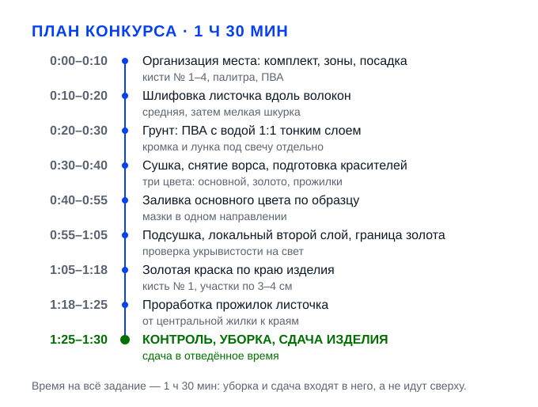
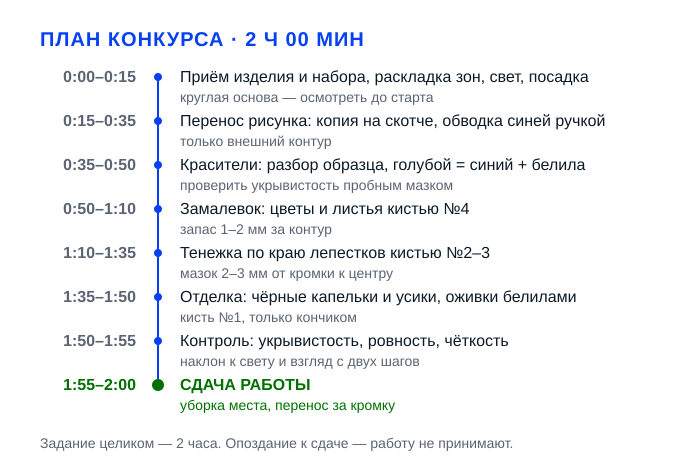
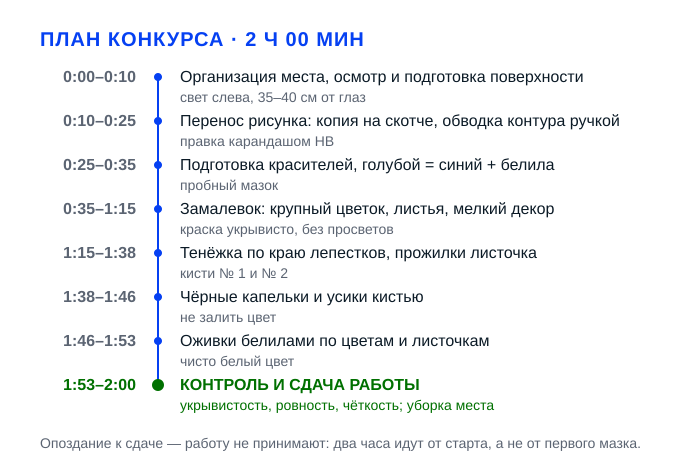

Художественная роспись (ФВ)
Задания ниже — официальные файлы «Абилимпикс» (источник: abilympics-russia.ru), разложенные по категориям. Решения написаны по тексту задания, регламенту и критериям оценки; в них указано, что именно проверяет эксперт.
Школьник
14–16 лет, базовый уровень заданияВ официальном файле категории не разделены отдельными разделами — приводим задание целиком; различия по категориям смотрите в таблице модулей.
Пошаговое решение
Задание для школьников — расписать по образцу деревянное изделие в виде листочка-подсвечника, и на всё отводится 1 час 30 минут: организовать рабочее место, подготовить поверхность под роспись, подготовить красители, выполнить роспись и убрать место. Роспись состоит из трёх обязательных элементов, перечисленных в задании: основной цвет, золотая краска по краю изделия и проработка прожилок листочка. Материалы выдаются на одного участника — изделие-листочек, клей ПВА, синтетика № 4, колонок № 1, 2 и 3, пластиковая палитра, мастихин, две салфетки и стаканчик для воды. Обратите внимание на два узких места: подготовку поверхности, от которой зависит укрывистость, и золотую полосу по кромке — она требует ровной руки и не прощает спешки. Полтора часа распределяются так, чтобы к сдаче были готовы все три элемента, а место приведено в порядок: уборка входит в задание отдельным пунктом.

Задача 1. Организовать рабочее место под росписьЭтап 1 по п. 2.3 КЗ · первые 10 минут из 90
Первый пункт конкурсного задания звучит буднично — «организовать рабочее место», — но именно он задаёт всё остальное: на площади 3000 на 1900 мм с проходом 1,5 метра нужно разложить инструмент так, чтобы кисть не искали на ощупь, а вода и палитра стояли там, где рука дотягивается без разворота корпуса. За 90 минут, отведённые школьникам на всё задание, любая потерянная минута на поиск салфетки или переставление стаканчика — это минута, не доставшаяся прожилкам листа. Поэтому место собирают до первого мазка, а не по ходу работы.
Действие 1.1. Принять изделие и сверить комплект
Шаг 1.1.1
Берём изделие-листочек со стола выдачи и осматриваем его целиком, поворачивая на свет: лицевую сторону, тыльную, кромку по всему периметру, черешок и углубление под свечу. Ищем сколы, вмятины, следы клея, смоляные кармашки, задиры на кромке и поднятый ворс. Найденное отмечаем едва заметной точкой карандаша с тыльной стороны, чтобы помнить, где именно дефект, и не начать роспись на повреждённом участке.
Роспись оценивают по готовому изделию, а дефект заготовки под краской только усиливается: ворс поднимается и рвёт мазок, смоляной кармашек не даёт краске лечь ровно, скол на кромке оставляет разрыв в золотой полосе, которую по заданию ведут именно по краю. Осмотр занимает две минуты, но он же определяет, какую сторону вы считаете лицевой, и позволяет сказать о браке до старта, пока заготовку ещё можно заменить.
Изделие осмотрено с обеих сторон при боковом свете, на тыльной стороне стоят точки у всех найденных дефектов, лицевая сторона чистая и без пометок. Если дефект крупный — скол, трещина, глубокий смоляной кармашек — вы его не прячете, а показываете эксперту до начала работы.
Частая ошибка — повертеть изделие в руках и сразу начать грунтовать: ворс и смоляной кармашек обнаруживаются уже под краской, когда исправлять поздно, а перекрывать дефект вторым слоем на подсвечнике нельзя — краска ляжет бугром. Вторая ошибка — начать роспись со стороны скола и получить разрыв золотой полосы на самом видном месте.
Эксперт подходит в первые минуты и смотрит, осматривает ли участник заготовку до грунта, а также фиксирует, сообщил ли он о дефекте. Молчаливая работа с бракованной заготовкой читается как невнимательность к заданию.
Шаг 1.1.2
Раскладываем выданный комплект на столе и сверяем с перечнем: изделие-листочек, клей ПВА, кисти синтетика № 4 и колонок № 1, 2, 3, пластиковая палитра, мастихин, салфетка для кистей, салфетка для рук, стаканчик для воды. Каждую позицию трогаем руками, а не проверяем взглядом: кисть берём за черенок и проводим пальцами по ворсу, флакон ПВА открываем и смотрим, не засохла ли горловина.
Комплект — это граница ваших возможностей на все 90 минут: замена инструмента после старта идёт только через эксперта, и не факт, что найдётся свободная кисть нужного номера. Пункт 3.1 задания перечисляет материалы на одного участника, и если чего-то не хватает, выяснить это нужно сейчас, а не в момент, когда понадобится тонкая кисть для прожилок.
Все девять позиций перечня лежат на столе и названы вами вслух или отмечены; расхождение запомнено точно: чего нет и сколько. Сомневаетесь в номере кисти — посмотрите на черенок, номер выбит или написан на нём, а не определяется на глаз по толщине пучка.
Ошибка новичка — разложить всё «как дали» и обнаружить отсутствие мастихина, когда нужно выложить краску из баночки: без мастихина краску достают кистью, пачкают ворс и теряют минуты. Вторая ошибка — увидеть, что кистей меньше, и промолчать, решив «обойдусь одной».
Эксперт проверяет комплектацию по описи и отмечает, обратился ли участник с недостачей сразу. Спокойный точный вопрос «нет кисти № 2, есть только № 1 и № 3» ценится выше, чем молчание.
Шаг 1.1.3
Проверяем каждую кисть отдельно: пучок должен быть сухим, ровным, без заломов и торчащих волосков, обойма — плотно обжатой, без люфта, черенок — без трещин. Кончиком колонка № 1 проводим по тыльной стороне ладони: кисть должна собраться в остриё, а не развалиться веером. Отбираем те кисти, которыми реально будем работать, и кладём их отдельно от остальных.
Кисть с разошедшимся веером не даёт тонкую линию прожилки — вместо неё получается пятно с рваными краями, а именно чёткость элементов росписи проверяют при контроле качества. Синтетика № 4 держит заливку и не теряет форму в воде, колонок № 1–3 нужен для тонких линий, и подменять один номер другим нельзя: № 3 вместо № 1 даст линию вдвое толще образца.
Пучок собран в остриё, волоски не топорщатся, обойма не шатается при покачивании за черенок. Проверьте так: окуните кисть в воду, стряхните и проведите по салфетке — если на салфетке остаётся ровная полоса без отдельных волосков, кисть рабочая.
Работать разбитой кистью, надеясь «приноровиться»: прожилки получаются разной толщины, а на золотой полосе появляются утолщения. Вторая ошибка — оставить кисти в стаканчике ворсом вниз на всё время подготовки: пучок заламывается, и к моменту росписи кисть уже не держит остриё.
Эксперт смотрит, как участник обращается с кистями в течение всего конкурса: кисть, брошенная в воду ворсом вниз, — заметный признак небрежности. Смотрит он и на то, как кисти лежат на столе между касаниями.
Действие 1.2. Разложить инструмент по зонам
Шаг 1.2.1
Делим столешницу на три зоны и закрепляем их мысленно: по центру, чуть ближе к себе, стоит изделие на подложке из салфетки или листа бумаги; справа от изделия — палитра с красками и мастихин; слева — стаканчик с водой и салфетки. Свет должен падать с левой стороны, поэтому если лампа или окно справа, разворачиваем изделие так, чтобы тень от руки не ложилась на расписываемый участок.
Разделение на зоны нужно не для красоты: правая рука тянется к краске, левая — к воде и салфетке, и при таком порядке кисть не проносится над изделием лишний раз, а капли воды не падают на ещё сырую заливку. Свет слева — прямое требование инструкции по охране труда из раздела 5.1, и оно же практическое: при свете справа тень от кисти закрывает линию, которую вы ведёте.
Проверьте себя просто: положите ладонь на изделие — тень должна уходить вправо, а не накрывать рабочее поле. Палитра, вода и салфетки стоят так, что до каждой из них вы дотягиваетесь, не вставая и не разворачивая корпус.
Собрать всё в кучу перед собой: стаканчик оказывается над изделием, и одно неловкое движение опрокидывает воду на заливку. Вторая ошибка — поставить палитру слева, а воду справа: тогда кисть каждый раз идёт над работой и капает.
Эксперт оценивает организацию места визуально в первые минуты и потом ещё раз в середине работы: сохранился ли порядок зон или всё смешалось. Отмечает он и то, не переставляли ли зоны по ходу работы.
Шаг 1.2.2
Садимся так, чтобы корпус касался спинки стула, ноги стояли на полу всей стопой, а расстояние от глаз до изделия было не меньше 35–40 см. Если стол высокий или низкий, подкладываем под изделие подставку или поворачиваем лист так, чтобы поверхность была под небольшим наклоном к себе — при наклонной плоскости кисть идёт по поверхности, а не «висит» над ней.
Посадка напрямую влияет на качество линии: при расстоянии меньше 35 см вы видите только участок в пять сантиметров и не замечаете, что вся золотая полоса ушла в сторону. Наклон поверхности нужен для ровного мазка: на горизонтальной плоскости краска скапливается у кончика кисти и линия получается с наплывом.
Проверьте три точки: спина касается спинки, глаза в 35–40 см от изделия, предплечье лежит на столе и служит опорой для кисти. Если рука висит в воздухе, линия будет дрожать — это видно сразу, ещё до краски.
Сидеть согнувшись над изделием «чтобы лучше видеть»: через полчаса начинает болеть шея, движения становятся неточными, а тонкие прожилки — самая точная часть работы. Вторая ошибка — работать на весу, без опоры предплечья.
Эксперт отмечает посадку и положение руки с кистью: устойчивая опора читается как понимание технологии, работа на весу — как спешка. Замечает он и наклон корпуса: согнутая спина к концу работы даёт дрожь в кисти.
Шаг 1.2.3
Готовим палитру: пластиковую пластину кладём справа, ближе к дальнему краю стола, и мысленно делим на лунки — под основной цвет, под золото, под цвет прожилок и одну свободную под смешивание. В стаканчик наливаем воду примерно на треть и ставим его слева, подальше от края стола. Рядом кладём салфетку для кистей — сложенную в два слоя и слегка влажную.
Лунки нужны, чтобы цвета не смешивались сами: если основной цвет и золото окажутся в одной луже, золотая полоса по краю получится грязной, а по заданию она должна читаться как отдельный, чистый элемент. Вода на треть стаканчика — потому что полный стаканчик опрокидывается от одного касания кистью, а пустой заставляет постоянно бегать за водой.
На палитре различимы четыре зоны, вода налита до одной трети, салфетка лежит под рукой и не на изделии. Проверьте наклоном: если при легком толчке стола стаканчик качается, отодвиньте его к центру стола.
Налить полный стаканчик: он тяжёлый, но опрокидывается легче, и вода заливает палитру и работу. Вторая ошибка — положить салфетку на изделие «чтобы не испачкать стол»: салфетка прилипает к сырой краске и снимает её вместе с ворсом.
Эксперт смотрит на палитру в момент замеса: чистые раздельные лунки и вода в нужном количестве — признак того, что участник понимает, как работает с краской.
Шаг 1.2.4
Договариваемся с собой о правиле, которое будет действовать все 90 минут: кисть никогда не остаётся в стаканчике ворсом вниз и не лежит на палитре мокрой — после каждого цвета её промываем, стряхиваем и промокаем о салфетку для кистей. Салфетку для рук кладём отдельно, слева, и вытираем руки только о неё, а не о спецодежду и не о салфетку для кистей.
Промытая и просушенная кисть — условие чистого цвета: капля воды с остатком краски в пучке разбавляет следующий цвет, и заливка ложится полупрозрачно, пятнами. Разделение салфеток нужно потому, что краска с рук на салфетке для кистей переносится обратно в пучок, и тонкая линия прожилки получается грязного оттенка.
После первой промывки проверьте: кисть, проведённая по чистой салфетке, не оставляет цветного следа. Руки сухие и чистые, на спецодежде нет свежих пятен. Цветной след на салфетке означает, что кисть промыта не до конца, и её нужно прополоскать ещё раз.
Промывать кисть «потом, когда понадобится другой цвет»: пучок подсыхает, краска забивается у обоймы, и кисть перестаёт собираться в остриё. Вторая ошибка — вытирать кисть о халат, оставляя на нём цветные полосы.
Эксперт наблюдает за сменой цвета на протяжении всей росписи: чистая вода в стаканчике и промытая кисть видны без вопросов. Ему видно, меняется ли вода в стаканчике по ходу росписи.
Действие 1.3. Спланировать 90 минут
Шаг 1.3.1
Раскладываем 90 минут на отрезки и держим их в голове: около 10 минут на организацию места, 15 — на подготовку поверхности и сушку грунта, 10 — на подготовку красителей, 45 — на саму роспись, 10 — на контроль и уборку. Отрезки не высечены в камне, но порядок величин важен: если на заливку основного цвета уходит 30 минут вместо 10, на прожилки и золотую полосу времени уже не останется.
Роспись — процесс с обязательной сушкой между слоями, и планировать надо не только работу, но и паузы: пока сохнет грунт, готовят краски, пока сохнет заливка, проверяют образец. Участник, который не разложил время, обычно заканчивает основной цвет к звонку и сдаёт изделие без прожилок — а прожилки прямо названы в пункте 2.3 задания как обязательный элемент.
К середине отведённого времени на изделии должна быть закончена заливка основного цвета и просушена, к 75-й минуте — золотая полоса по краю и прожилки. Сверяйтесь с часами на стене, а не с ощущением: ощущение в работе с краской обманывает.
Увлечься одним элементом: выписывать прожилки до идеала, забыв про золотой край, который по заданию идёт по кромке и оценивается отдельно. Вторая ошибка — оставить уборку на последнюю минуту: рабочее место входит в задание отдельным пунктом.
Эксперт отмечает, укладывается ли участник в этапы: законченная заливка к середине времени говорит о владении технологией, а не о скорости. Вопрос о плане он может задать прямо в начале работы.
Шаг 1.3.2
Выстраиваем последовательность так, чтобы мокрое не касалось мокрого: сначала грунт по всей поверхности, затем сушка, затем заливка основного цвета, снова сушка, и только потом золотая полоса по краю и прожилки. Каждый следующий слой наносим только на просохший предыдущий, проверяя готовность тыльной стороной ладони — поверхность не должна быть холодной и липкой.
Темперная краска при нанесении на сырой слой поднимает нижний и смешивается с ним: вместо ровного листа получается грязное пятно, а золотая полоса, положенная на сырую заливку, теряет блеск и расплывается. Сушка между слоями — это не формальность, а технологическое требование, без которого укрывистость, названная в критериях контроля, не достигается.
Перед каждым новым слоем проверяйте три вещи: поверхность не липнет, не блестит мокрым блеском, не холодная на ощупь. Если сомневаетесь — подождите ещё три минуты, они дешевле переделки. Если хотя бы один признак сомнителен, ждём ещё три минуты.
Класть золото на сырую заливку «чтобы сэкономить время»: краски смешиваются, граница полосы становится рваной, и элемент, за который дают отдельную оценку, фактически потерян. Вторая ошибка — начинать прожилки, пока лист ещё сырой: тонкая кисть продавливает нижний слой.
Эксперт смотрит, ждёт ли участник подсушки: работа по сырому видна по смешанным цветам и по потёкам на кромке. Смотрит он и на кромку: потёки на ребре видны сразу.
Шаг 1.3.3
Убираем со стола всё, что не участвует в работе: сумку, телефон, лишнюю бумагу, вторую палитру, запасные салфетки — всё это отправляем в отведённое место или под стол. Рукава подворачиваем выше локтя, длинные волосы убираем назад, украшения снимаем: кольцо и браслет цепляются за черенок и сбивают движение кисти. Всё лишнее убираем до первого мазка, потому что потом руки заняты краской и палитрой.
Свободная столешница — это отсутствие случайных касаний: любая вещь рядом с изделием рано или поздно оказывается в краске, а испачканная работа на конкурсе не отмывается. Снятые украшения и убранные волосы — требование охраны труда и одновременно защита от брака: волос, прилипший к сырой заливке, убрать уже невозможно.
На столе остались только материалы из перечня и изделие, рукава не спускаются к запястью, волосы не падают на лицо. Пройдите взглядом по столу и назовите каждый предмет — если предмет не нужен для росписи, его здесь быть не должно.
Оставить на столе телефон и наушники: они занимают место в рабочей зоне, и эксперт фиксирует это как нарушение организации. Вторая ошибка — работать в длинных рукавах и с украшениями, цепляясь за кисть.
Эксперт оценивает чистоту и достаточность рабочего места в начале работы, а затем следит, не появляется ли на столе посторонних предметов. Отмечает он и порядок на подложке: изделие не должно лежать среди инструментов.
Задача 2. Подготовить поверхность листочка под росписьЭтап 2 по п. 2.3 КЗ · около 15 минут вместе с сушкой
Второй пункт задания — подготовка поверхности. У деревянной заготовки есть ворс, кромка и поры, и если краску положить прямо на них, заливка ляжет пятнами, а тонкая линия прожилки побежит по поднятым волокнам и разорвётся. Поэтому поверхность шлифуют вдоль волокон, закрывают грунтом из клея ПВА и только после этого размечают оси. Работа механическая и кажется простой, но именно здесь закладывается укрывистость — первое, что проверяют при контроле качества росписи.
Действие 2.1. Выровнять и обеспылить поверхность
Шаг 2.1.1
Берём шкурку средней зернистости и шлифуем лицевую сторону строго вдоль волокон — по направлению от черешка к кончику, короткими движениями по 8–10 сантиметров. Нажим лёгкий: задача не снять дерево, а срезать поднятый ворс и выровнять микронеровности. Кромку проходим отдельно, держа шкурку на пальце, чтобы не завалить плоскость и не сделать край круглым.
Шлифовка вдоль волокон не царапает древесину: поперёк волокон остаются глубокие борозды, которые после грунта проступают и видны на заливке как тёмные полосы. Кромка обрабатывается отдельно потому, что именно по ней пойдёт золотая полоса, и неровная кромка даст ей излом.
Проведите по поверхности тыльной стороной ладони: она должна быть гладкой, без ощутимых зацепов и без блеска от заглаженных волокон. Посмотрите на свет под углом — риски от шкурки должны идти в одном направлении.
Шлифовать поперёк волокон или круговыми движениями: борозды проявляются после первого слоя краски, и перекрыть их уже нельзя. Вторая ошибка — давить на шкурку у кромки и скруглить её: золотая полоса «съезжает» с ребра.
Эксперт проверяет поверхность на ощупь до грунта, если подходит к рабочему месту в этот момент, и отмечает направление рисок. Если риски идут поперёк волокон, это видно и на готовой работе.
Шаг 2.1.2
Меняем шкурку на мелкую и проходим поверхность ещё раз, теперь совсем без нажима, движениями той же длины и в том же направлении. Отдельно проходим углубление под свечу: его стенки и дно тоже нужно выровнять, иначе краска там ляжет неравномерно и в лунке останутся светлые проплешины. Затем смахиваем пыль сухой кистью, а не ладонью. Пыль после второй шкурки снимаем особенно тщательно, потому что мелкая пудра держится в порах крепче стружки.
Второй номер шкурки убирает риски от первого: после грубой обработки поверхность ровная, но «царапаная», и краска на ней держится неравномерно — тонкий слой проваливается в риски, а на гребнях остаётся. Углубление под свечу расписывают реже, но именно там чаще всего остаётся негрунтованный участок, который потом выглядит как белое пятно.
Поверхность гладкая и матовая, риски от шкурки не прощупываются, углубление под свечу чистое и без пыли. Пыль проверяется так: проведите по листу тёмной салфеткой — на ней не должно остаться серого следа.
Смахивать пыль ладонью: пыль втирается в поры и вместе с грунтом превращается в грязевую корку, которая потом видна под краской. Вторая ошибка — пропустить углубление под свечу, считая, что «там не видно».
Эксперт обращает внимание на углубление под свечу и на кромку — это места, которые чаще всего остаются необработанными. Отдельно он смотрит на кромку: скруглённое ребро видно по золотой полосе.
Шаг 2.1.3
Собираем пыль окончательно: проходим лист сухой кистью № 4 по направлению волокон, затем продуваем или аккуратно смахиваем салфеткой от центра к краям, чтобы пыль не осталась на кромке. Руки вытираем о салфетку для рук — жирный след от пальцев на дереве потом не даст краске лечь ровно. Кромку проходим кистью дважды — вдоль ребра и по скосу, там пыль держится плотнее всего.
Пыль на поверхности — главная причина шелушения: краска схватывается не с деревом, а с пылью, и при высыхании отходит вместе с ней. Жир с рук действует так же, только незаметно: на этом участке заливка будет собираться в капли и не разойдётся по плоскости.
На тёмной салфетке после протирания нет серого следа, кромка чистая, на поверхности нет ворсинок. Проверьте кромку отдельно: пыль с неё смахивается в первую очередь, потому что золотая полоса ляжет именно туда.
Начать грунтовать, не смахнув пыль: под краской появляются бугорки, а при шлифовке после грунта они срываются вместе с грунтом. Вторая ошибка — протирать лист влажной тряпкой: волокна поднимаются, и всё приходится начинать заново.
Эксперт смотрит на чистоту поверхности и на руки участника: следы краски и пыли на ладонях перед грунтованием заметны. Пыль на ладони участника перед грунтом он тоже отмечает.
Действие 2.2. Закрыть поверхность грунтом из ПВА
Шаг 2.2.1
Готовим грунт: наливаем в свободную лунку палитры клей ПВА и разводим его водой примерно один к одному, перемешивая мастихином до однородности. Смесь должна получиться похожей на жидкое молоко — стекать с мастихина ровной струйкой, а не капать комками и не тянуться, как чистый клей. Готовим грунт в лунке, которую не жалко испачкать, и сразу помечаем её для себя, чтобы не спутать с краской.
Непосредственно ПВА на дерево не наносят: он слишком густой, ложится плёнкой, которая долго сохнет и даёт липкость под краской. Разведённый грунт впитывается в поры, закрывает их и одновременно оставляет поверхность слегка шероховатой — краска за неё цепляется. Соотношение один к одному даёт нужную вязкость, а проверка «на молоко» проще, чем проверка на глаз по цвету.
Смесь однородная, без комков и сгустков, стекает с мастихина струйкой. Если она тянется нитью — добавьте воды и перемешайте ещё раз; если рассыпается каплями, как вода, — долейте клея. Плёнка на поверхности смеси — признак того, что клей взят без воды.
Разводить «на глаз» и получить слишком густой грунт: он ложится полосой, и после сушки на листе остаются блестящие подтёки, на которых краска не держится. Вторая ошибка — развести слишком жидко: грунт не закрывает поры, и заливка всё равно ложится пятнами.
Эксперт смотрит на палитру в момент приготовления грунта: однородная смесь без комков говорит о понимании пропорции. Проверяет он и то, не осталось ли в лунке комков клея.
Шаг 2.2.2
Наносим грунт синтетикой № 4 тонким слоем, ведя кисть вдоль волокон и не останавливаясь на полпути: остановка оставляет утолщение, которое после сушки видно как валик. Слой должен быть настолько тонким, что поверхность остаётся матовой, а не блестящей. Кромку и углубление под свечу грунтуем отдельно, не заливая краской соседние участки. Кисть после грунта промываем сразу, иначе ПВА схватывается в пучке и кисть теряет форму.
Тонкий слой сохнет за 10–15 минут и не мешает краске впитываться, а толстый превращается в плёнку, на которой заливка держится плохо и при высыхании трескается по кромке. Грунт по кромке обязателен, потому что золотая полоса наносится именно туда и на негрунтованном дереве она впитается и потускнеет.
Поверхность равномерно матовая, без блестящих участков и подтёков, кромка закрыта. Посмотрите под углом к свету: блеск должен отсутствовать полностью, а тон не должен пятнами отличаться от участка к участку.
Нанести грунт толстым слоем «чтобы лучше держалось»: сохнет втрое дольше, а на кромке собирается в каплю, которая после сушки становится бугром под золотой полосой. Вторая ошибка — грунтовать, не дождавшись полной просушки предыдущего участка.
Эксперт оценивает равномерность грунта визуально: блестящие полосы и подтёки видны без прикосновения. Блестящие полосы на грунте он видит под углом к свету.
Шаг 2.2.3
Оставляем изделие сохнуть на 10–15 минут, не переворачивая его лицом вниз и не накрывая. Готовность проверяем тыльной стороной ладони: поверхность не должна быть холодной и липкой. После сушки ворс поднимается мелкими волосками — проходим по ним мелкой шкуркой без нажима и снова смахиваем пыль сухой кистью. Следите за пальцами: грунт на руках оставляет липкие следы на листе.
Снятие поднявшегося ворса — это то, что отличает гладкую заливку от шершавой: после грунта волокна встают дыбом, и если их не снять, краска ляжет по ним буграми, а тонкая линия прожилки пойдёт зигзагом. Проверка на отлип нужна, чтобы не начать шлифовать сырой грунт: сырой смазывается и скатывается в катышки.
Поверхность после шлифовки гладкая, матовая, без ворсинок; на ладони, прижатой к листу, не остаётся липкого следа. Если грунт всё ещё липнет — подождите, а не шлифуйте. Если после шлифовки появились светлые проплешины, грунт в этих местах наносим ещё раз.
Начать роспись сразу после грунта, не сняв ворс: заливка получается шершавой, а на золотой полосе видны бугорки. Вторая ошибка — шлифовать сырой грунт и содрать его до дерева, оставив проплешины. Проверка на отлип занимает секунду и снимает этот риск полностью.
Эксперт проверяет гладкость поверхности перед началом росписи, если подходит к столу в этот момент, и отмечает, снят ли ворс. Отмечает он и следы пальцев на грунте: они остаются навсегда.
Действие 2.3. Разметить оси и границы пятен
Шаг 2.3.1
Берём карандаш HB и намечаем на листе только вспомогательные линии: ось от черешка к кончику, поперечную ось по самой широкой части и границы основного цветового пятна. Линии ведём еле заметно, без нажима, чтобы они не продавили грунт. Контур рисунка по копии в задании для школьников не предусмотрен — форма листа уже задана самой заготовкой, поэтому обводить ничего не нужно.
Оси нужны для симметрии: лист с золотой полосой по краю читается только тогда, когда полоса идёт на равном расстоянии от кромки по всей длине, а прожилки симметричны относительно центральной жилки. Слабый нажим — потому что карандашный след под полупрозрачной краской проступает и выглядит как грязь; сильные линии потом приходится перекрывать дополнительным слоем.
Линии видны, но не вдавлены: проведите пальцем — поверхность должна оставаться ровной. Оси пересекаются примерно в широкой части листа, а не смещены к черешку. Линии должны быть такими, чтобы их можно было перекрыть одним слоем краски.
Чертить контур жирно и с нажимом: линии продавливают грунт и после заливки проступают канавками. Вторая ошибка — размечать на глаз, без поперечной оси: половины листа получаются разной ширины, и это видно по золотой полосе.
Эксперт смотрит на разметку как на признак подготовки: аккуратные слабые оси говорят о том, что участник планирует композицию, а не импровизирует. Отмечает он и то, не продавлены ли линии карандаша.
Шаг 2.3.2
Определяем, где пройдёт золотая полоса: отступаем от кромки на расстояние, которое видно на образце, и проводим по кромке еле заметную линию-границу — это ориентир, чтобы полоса не «съехала» на лицевую плоскость. Ширину сверяем с образцом: обычно это полоса, которую перекрывает кисть № 1 за одно движение, то есть примерно 2–3 мм. Линию ведём от черешка, а не от кончика: так проще держать одинаковое расстояние до ребра.
Граница нужна потому, что золотая полоса по краю — отдельный элемент задания, названный в пункте 2.3: если она уйдёт на плоскость, нарушится композиция, а если не дойдёт до ребра — кромка останется необработанной и будет выглядеть как недоделка. Ориентир карандашом позволяет вести полосу ровно, не отвлекаясь на промеры во время работы.
Линия-граница идёт параллельно кромке на одинаковом расстоянии по всему периметру, включая черешок. Проверьте на просвет: расстояние от кромки до линии должно быть одинаковым с обеих сторон листа. Особенно внимательно смотрим на изгибы листа, там граница чаще всего сбивается.
Вести полосу «на глаз» без ориентира: на изгибах листа она уходит то на плоскость, то на ребро, и кромка получается пятнистой. Вторая ошибка — отступить от кромки слишком далеко: полоса теряет функцию обрамления.
Эксперт сверяет ширину полосы с образцом на готовом изделии, а на этапе разметки смотрит, есть ли вообще ориентир. Ширину полосы он сверяет с образцом линейкой или на глаз.
Шаг 2.3.3
Кладём образец рядом с изделием, на расстоянии вытянутой руки, и сверяем разметку: где начинается основное цветовое пятно, какой участок остаётся под золото, где пройдут прожилки. Если разметка расходится с образцом, поправляем её сейчас — ластиком по грунту работаем осторожно, едва касаясь, чтобы не снять слой. Ластик держим под углом и не трём, а снимаем линию короткими касаниями.
Сверка с образцом до начала росписи экономит время: ошибку в композиции, замеченную на разметке, исправляют ластиком за минуту, а замеченную после заливки — только новым слоем краски, и на это уходит втрое больше времени. Кроме того, задание сформулировано как «расписать изделие по образцу», то есть оценивают соответствие, а не свободную импровизацию.
Разметка совпадает с образцом по расположению пятен и по границам золотой полосы; образец лежит так, что его видно, не поворачивая головы. Если приходится тянуться к образцу — переложите его ближе. Разметка должна читаться без пояснений, как чертёж.
Держать образец перед глазами только в начале, а потом работать по памяти: память искажает пропорции, и к концу росписи пятна уезжают. Вторая ошибка — положить образец на изделие: на нём остаются карандашные и красящие следы.
Эксперт сравнивает готовое изделие с образцом по расположению элементов, и совпадение читается как точность выполнения задания. Он может попросить показать, где на образце проходит граница золота.
Задача 3. Подготовить красители для росписиЭтап 3 по п. 2.3 КЗ · около 10 минут
Третий пункт задания — подготовка красителей. Здесь решается, каким будет цвет всей работы: темперная краска из баночки почти никогда не совпадает с образцом, её приходится смешивать на палитре и разводить до рабочей консистенции. Школьнику нужно получить три рабочих цвета — основной, золотой и цвет прожилок, — и получить их до того, как высохнет грунт. Ошибка в замесе обходится дороже всего: переделать цвет на уже залитом листе невозможно.
Действие 3.1. Разобрать образец на цвета
Шаг 3.1.1
Кладём образец перед собой и разбираем его на составляющие, называя вслух: основной цвет, которым залита плоскость листа, золотая краска по краю изделия и цвет прожилок. Для каждого элемента отмечаем, чистый это цвет из баночки или составной, светлее он или темнее соседнего, есть ли на образце переходы и где именно проходит граница между заливкой и золотом.
Задание для школьников прямо перечисляет три элемента росписи — основной цвет, золотую краску по краю и проработку прожилок листочка, — и каждый из них оценивается отдельно. Разбор образца до замеса нужен, чтобы не гадать по ходу работы: когда кисть уже в краске, добавить недостающий оттенок в лунку и попасть в тон почти невозможно.
У вас на палитре должно получиться ровно три подписанные для себя зоны, и вы можете сказать, какой цвет куда пойдёт. Если на образце виден четвёртый оттенок, значит, в лунках нужно предусмотреть и его — четвёртая зона на палитре остаётся свободной.
Начать мазать «примерно тем цветом, что в баночке»: на образце цвет почти всегда сложнее, и заливка получается грубее оригинала. Вторая ошибка — разбирать образец после начала работы, когда краска уже на кисти.
Эксперт слушает, как участник описывает образец: названы ли элементы, которые требует задание, и понимает ли он, что золото — отдельный цвет, а не оттенок основного.
Шаг 3.1.2
Отбираем из набора те баночки, которые нужны для замеса, и проверяем краску в каждой: открываем, смотрим, не засохла ли у края, не расслоилась ли на воду и пигмент. Засохшую корку снимаем мастихином и откладываем в сторону, расслоившуюся краску тщательно перемешиваем прямо в баночке, а не в лунке палитры. Каждую баночку после проверки закрываем, чтобы краска не заветрилась, пока идёт замес.
Краска с коркой при размешивании даёт крупинки, которые забиваются в пучок и оставляют на заливке тёмные точки — а ровность нанесения кистевых мазков и чистота поверхности входят в контроль качества. Расслоившуюся краску, перемешанную уже в лунке, невозможно привести к однородному тону: вода и пигмент так и останутся полосами.
Краска в баночке однородная, без комков и плёнки, консистенция как у густой сметаны. Проведите мастихином по дну — на нём не должно оставаться плотного осадка, который не размешивается. Если осадок не размешивается, краску из этой баночки не берём.
Брать краску из баночки, не проверив её: подсохшие комки потом не размельчить в лунке, и они выходят на поверхность при наборе краски на кисть. Вторая ошибка — разводить краску водой прямо в баночке: остаток портится, а восстановить его уже нельзя.
Эксперт замечает, как участник обращается с баночками: краска, набранная из общей банки грязной кистью, — грубое нарушение, оно видно сразу. Отмечает он и то, закрывают ли баночки после набора краски.
Шаг 3.1.3
Прежде чем заливать лист, делаем пробный мазок на обрезке дерева или на тыльной стороне изделия: набираем краску на синтетику № 4 и проводим полосу длиной 5–6 сантиметров. Смотрим, как краска укрывает дерево, не просвечивает ли фон, ровно ли ложится по краям мазка и как быстро начинает подсыхать. Пробу делаем на участке, который всё равно уйдёт под краску, — например, на тыльной стороне у черешка.
Пробный мазок — единственный способ узнать укрывистость до того, как испорчена лицевая сторона: темпера из набора может быть разведена по-разному, и один и тот же цвет в разных баночках ведёт себя по-разному. Укрывистость и ровность нанесения кистевых мазков прямо названы в критериях контроля качества росписи, поэтому проверять их нужно на пробе, а не на изделии.
Мазок закрывает дерево полностью, без просветов и без «полосатого» следа от ворса, края мазка ровные. Если дерево просвечивает — краску нужно сделать гуще, если мазок рвётся — развести чуть больше. Пробный мазок оставляем на обрезке до конца работы: по нему видно, как краска сохнет.
Пробовать краску сразу на листе: неподходящая укрывистость обнаруживается на середине заливки, и перекрывать приходится всю плоскость. Вторая ошибка — делать пробу на салфетке: по бумаге краска ведёт себя иначе, чем по грунтованному дереву.
Эксперт может подойти и посмотреть на пробный мазок: наличие пробы говорит о том, что участник проверяет материал, а не надеется на удачу. Пробный мазок он может попросить показать.
Действие 3.2. Замесить основной цвет
Шаг 3.2.1
Набираем мастихином краску из баночек и выкладываем в лунки палитры — по небольшой горошине, не больше половины лунки. Светлый цвет кладём в отдельную лунку, тёмный в другую, а смешивать будем в третьей, свободной. Мастихин после каждой баночки вытираем салфеткой, чтобы не тащить тёмный пигмент в светлую краску. Горошины разносим по палитре подальше друг от друга, чтобы они не соприкасались краями.
Количество имеет значение: краска на палитре сохнет за 15–20 минут, и горошины хватает на заливку листа среднего размера. Если положить с горкой, половина высохнет и пойдёт в отход, а если слишком мало — придётся останавливать работу и досмешивать, и тон уже не совпадёт с первым участком.
В каждой лунке лежит отдельная краска, они не соприкасаются, мастихин чистый. На палитре остаётся одна свободная лунка под смесь — если свободной нет, значит, краски выложено слишком много. Лунки должны быть сухими: вода в лунке разжижает краску и меняет тон.
Выложить краски вплотную друг к другу: они смешиваются по краям, и замес идёт неконтролируемо. Вторая ошибка — брать краску грязным мастихином и портить весь набор оттенков сразу. И третье: краску берут немытой кистью прямо из баночки, портя весь запас.
Эксперт смотрит на палитру: раздельные лунки и умеренное количество краски читаются как расчётливость, лужи краски — как неопытность. Смотрит он и на чистоту мастихина между баночками.
Шаг 3.2.2
Смешиваем в свободной лунке, добавляя тёмный пигмент в светлый понемногу, а не наоборот: сначала кладём основной светлый цвет, затем мастихином подмешиваем тёмный, каждый раз полностью растирая смесь по дну лунки. Доводим до тона образца, сравнивая не на палитре, а мазком на обрезке — на палитре цвет всегда выглядит темнее, чем ляжет. Смесь растираем по дну лунки круговыми движениями мастихина, а не сгребаем в кучу.
Правило «тёмное в светлое» экономит краску и время: осветлить перетёмненную смесь можно только добавлением светлого, и его уйдёт больше, чем было бы тёмного. Сравнение мазком нужно потому, что темпера светлеет при высыхании на один-два тона, и подбор по мокрой луже даёт заведомо тёмный результат.
Смесь однородная, без прожилок чистого пигмента, мазок на обрезке совпадает с образцом по тону. Проверьте при боковом свете: на мазке не должно быть видно отдельных крупинок. Если тон кажется верным только в тени, поднесите обрезок к свету — расхождение станет видно.
Мешать «до красивости» на палитре, не проверяя мазком: после высыхания тон уходит, и заливка отличается от образца. Вторая ошибка — подмешивать тёмный пигмент сразу помногу и потом осветлять. Смесь, подобранная на глаз, почти всегда уходит в тёмный тон.
Эксперт оценивает попадание в цвет готового изделия, и расхождение по тону с образцом заметно даже без прибора. Тон он проверяет на готовом изделии, но подбор виден по палитре.
Шаг 3.2.3
Доводим смесь до рабочей консистенции водой: добавляем её каплями, размешивая мастихином, пока краска не начнёт стекать с кисти ровной струйкой и не перестанет «стоять» горкой. Проверяем на кисти: обмакиваем синтетику № 4, поднимаем — краска должна покрыть пучок равномерно, не стекая каплей с кончика. Воду добавляем из стаканчика кончиком кисти, а не льём из горлышка: так проще остановиться вовремя.
Слишком густая краска не разойдётся по плоскости и даст полосатый след от ворса, слишком жидкая потечёт и соберётся у кромки тёмной каймой — а ровность нанесения мазков и отсутствие потёков входят в контроль качества. Консистенция «стекает струйкой» — рабочий ориентир: такая краска и укрывает, и ложится ровно.
Краска на кисти лежит ровным слоем, с кончика не падает капля, при проведении по обрезку мазок не рвётся и не растекается за границы движения кисти. Если краска стекает с кончика каплей, она жидкая: добавьте краски из лунки и перемешайте.
Разводить краску «на глаз» до состояния воды: заливка получается полосатой, а у кромки собирается тёмный наплыв, который потом не перекрыть. Вторая ошибка — работать сухой кистью по густой краске, размазывая её по листу.
Эксперт смотрит на заливку целиком: равномерность тона и отсутствие потёков — первое, что бросается в глаза. Потёки у кромки и полосатость заливки он замечает первыми, ещё до сравнения с образцом.
Действие 3.3. Подготовить золото и цвет прожилок
Шаг 3.3.1
Отдельно готовим золотую краску: выкладываем её в отдельную лунку, разводим водой до текучести и пробуем на обрезке — тонкой линией кистью № 1. Золото должно ложиться плотно, без просветов, и держать блеск; если оно ложится серо и матово, значит, разведено слишком сильно или перемешано с основным цветом. Пробную линию ведём по краю обрезка, как на кромке изделия: там видно, как золото ляжет на ребро.
Золотая полоса по краю изделия — самостоятельный элемент задания, и её оценивают отдельно от заливки: тусклое или разбавленное золото выглядит как грязь, а не как обрамление. Отдельная лунка нужна категорически: золото с примесью основного цвета теряет металлический оттенок, и вернуть его уже невозможно.
На пробной линии золото плотное, с ровным блеском, без тёмных и светлых участков по длине. Проведите линию в 5 сантиметров и посмотрите под углом к свету — блеск должен быть одинаковым. На пробной линии не должно быть просветов дерева: золото укрывает плотно.
Разводить золото в той же лунке, где лежит основной цвет: остатки смешиваются, и полоса получается грязно-зелёной. Вторая ошибка — наносить золото густо, «чтобы блестело»: на кромке образуется толстый слой, который при высыхании трескается.
Эксперт проверяет золотую полосу на готовом изделии, и первое, что видно, — чистота цвета и непрерывность линии. Он смотрит на полосу при боковом свете: тусклые участки видны сразу.
Шаг 3.3.2
Замешиваем цвет для прожилок: берём основной цвет и добавляем в него немного тёмного пигмента, чтобы получить оттенок на один-два тона темнее заливки. Пробуем на обрезке, поверх мазка основного цвета: прожилка должна читаться на фоне, но не выглядеть чёрной. Если на образце прожилки темнее на два тона, добавляем пигмент двумя порциями, проверяя мазком после каждой.
Прожилки прорисовывают лист и делают его объёмным, и если цвет прожилок равен основному, работа выглядит плоской, а если слишком тёмный — прожилки превращаются в грубые чёрные штрихи, которых на образце нет. Замес «на тон темнее» — это и есть приём, которым в росписи по дереву передают глубину.
Мазок цвета прожилок поверх заливки различим, но не контрастирует резко; на обрезке видно, что линия читается. Сравните с образцом вплотную и с расстояния вытянутой руки — на обоих расстояниях соотношение должно сохраняться.
Брать для прожилок чистый чёрный: на изделии получаются жёсткие линии, не имеющие отношения к образцу. Вторая ошибка — сделать цвет прожилок почти равным заливке: тонкая линия на таком фоне пропадает, и работа кажется незаконченной.
Эксперт смотрит на прожилки в сравнении с образцом: соотношение тонов — один из самых заметных признаков качества. Ему важно, читаются ли прожилки с расстояния вытянутой руки.
Шаг 3.3.3
Проверяем количество: в каждой лунке краски столько, сколько нужно на предстоящий этап, а не «на всю работу». Лунки с готовыми цветами накрываем влажной салфеткой или сдвигаем к краю палитры в тень, а стаканчик держим закрытым от сквозняка. Кисти, которыми уже пользовались, промываем сразу. Влажную салфетку кладём на палитру, не прижимая, чтобы она не впитывала краску из лунок.
Темперная краска на открытой палитре покрывается плёнкой за 15–20 минут, и снять её без потери качества нельзя: плёнка размешивается в краску крупинками. Влажная салфетка над лункой продлевает рабочее время вдвое, а промытая кисть не забивается краской у обоймы и дольше держит остриё.
Краска в лунках не заветрилась, на поверхности нет плёнки, кисти чистые. Проведите мастихином по краю лунки: если краска тянется за ним плёнкой, она уже начала схватываться. Краска под плёнкой не размешивается — её снимают мастихином и замешивают заново.
Готовить краски «на всё задание» сразу: к моменту росписи прожилок они высохнут, и придётся замешивать заново, теряя тон. Вторая ошибка — оставлять кисти лежать в краске: пучок забивается у обоймы и перестаёт собираться.
Эксперт замечает состояние палитры в середине работы: заветренные лунки и засохшие кисти говорят о том, что участник не рассчитал время. Отмечает он и то, накрыта ли палитра между этапами.
Задача 4. Расписать листочек по образцу: заливка, золотой край, прожилкиЭтап 4 по п. 2.3 КЗ · около 45 минут, главная часть работы
Собственно роспись — та часть задания, где видно всё сразу. Пункт 2.3 перечисляет её по порядку: основной цвет, золотая краска по краю изделия, проработка прожилок листочка. Порядок не случаен: каждый следующий элемент ложится на просохший предыдущий, и нарушить его нельзя. На этот этап уходит около 45 минут из 90, и внутри него самая дорогая по времени операция — золотая полоса: она требует ровной руки и не прощает спешки.
Действие 4.1. Залить основной цвет
Шаг 4.1.1
Ставим изделие по центру подложки и разворачиваем так, чтобы лист лежал удобно для правой руки: длинная ось идёт слева направо или снизу вверх, как вам удобнее вести мазок. Набираем основной цвет на синтетику № 4, погружая пучок до половины, и снимаем лишнее о край лунки — на кисти не должно быть капли, которая упадёт на лист при первом движении. Пробуем движение на обрезке, прежде чем коснуться листа.
Положение изделия определяет, будет ли мазок ровным: если вести кисть в неудобную сторону, рука разворачивается, и на заливке появляются полосы разной толщины. Снятая о край лунки краска — приём, без которого первый мазок всегда получается с наплывом: капля с кончика стекает на поверхность и собирается у края.
Пучок покрыт краской равномерно, капли на кончике нет, изделие лежит устойчиво и не едет при нажатии. Проверьте ладонью: подложка не скользит по столу. Капля на кончике кисти видна на просвет как тёмная точка.
Набрать краску «до упора», обмакнув кисть по обойму: краска затекает под обойму, кисть перестаёт промываться, а на лист попадает избыток, который потом долго сохнет и ложится бугром. Вторая ошибка — работать с каплей на кончике: первый мазок всегда с потёком.
Эксперт смотрит на первый мазок: он задаёт тон всей заливке, и по нему видно, умеет ли участник набирать краску. Второй мазок он смотрит на стык с первым: там видно, умеет ли участник вести заливку.
Шаг 4.1.2
Заливаем плоскость листа длинными мазками от центра к краям, ведя кисть в одном направлении и не возвращаясь по уже проложенному следу. Каждый следующий мазок кладём так, чтобы он слегка наезжал на предыдущий — по мокрому краю, тогда стык не виден. Движение делаем от плеча, а не от запястья: так линия получается длинной и ровной. Краску добавляем на кисть по ходу, не дожидаясь, пока пучок высохнет и начнёт «лохматиться».
Мазки в одном направлении дают ровную укрывистость: если вести кисть туда-обратно, ворс вытаскивает краску с нижнего слоя, и на заливке остаются светлые полосы. Нахлёст по мокрому краю — единственный способ соединить мазки без видимой границы, а движение от плеча не даёт линии «гулять» по толщине.
На заливке нет светлых полос и видимых стыков, тон одинаковый по всей плоскости. Посмотрите на лист под углом к свету: мокрый блеск должен быть равномерным, без участков, где краска тоньше. Стыки мазков ищем, отойдя на шаг и наклонив изделие к свету.
Возвращаться кистью по уже положенному слою: краска скатывается в катышки, и на листе остаются светлые проплешины. Вторая ошибка — набирать краску заново на каждый мазок: получаются полосы разной плотности, и заливка выглядит полосатой.
Эксперт проверяет укрывистость и ровность мазков — это первые два пункта контроля качества росписи, и они видны на всей плоскости. Полосы от ворса он ищет под углом к свету.
Шаг 4.1.3
Дойдя до кромки, ведём кисть вдоль ребра, а не поперёк: краска должна дойти до карандашной границы золотой полосы, но не перейти её. У черешка и в узком кончике листа работаем кончиком кисти, разворачивая изделие, а не руку, чтобы не задеть уже залитую плоскость ладонью. Узкий кончик листа заливаем в последнюю очередь, когда плоскость уже подсохла: там краска собирается и дольше держится мокрой. Изделие при этом держим за подложку, а не за кромку.
Граница важна потому, что золотая полоса по краю — отдельный элемент: если заливка затечёт на кромку, золото ляжет на цветной слой, просвечивать будет основной тон, и полоса получится грязной. Разворот изделия вместо разворота руки нужен, чтобы не касаться сырой заливки: одно касание ладонью оставляет смазанный участок, который невозможно восстановить.
Заливка доходит до границы по всему периметру, кромка и ребро остались чистыми, на узких участках краска не вышла за линию. Проверьте с лупой или просто вплотную: на границе нет цветных «языков». Цветных языков на границе быть не должно.
Заливать «до самого края, потом подотрём»: стереть краску с кромки без следа нельзя, она впиталась, и золотая полоса ляжет на грязный фон. Вторая ошибка — держать изделие за лицевую сторону: пальцы оставляют следы на сыром слое.
Эксперт осматривает кромку в первую очередь: чистая кромка перед нанесением золота — признак аккуратной работы. Отдельно он смотрит на узкий кончик листа и на черешок.
Шаг 4.1.4
Даём заливке подсохнуть 10–15 минут, не накрывая и не переворачивая изделие. Затем осматриваем плоскость на просвет и при боковом свете: если где-то дерево просвечивает или краска легла тоньше, наносим второй слой только на этот участок, размывая границу мазка по мокрому краю. Если просвет большой и краска легла тонко, второй слой наносим после полной просушки первого, а не сразу.
Просвечивающее дерево — это нарушение укрывистости, а укрывистость прямо названа первым пунктом контроля качества росписи. Второй слой на всё изделие не нужен и вреден: он утолщает красочный слой, и при высыхании на кромке появляются трещины, а локальная подправка решает проблему за минуту.
Плоскость закрыта равномерно, дерево не просвечивает ни на свету, ни под углом; границы подправленного участка не видны. Проверьте, наклонив лист к лампе: тон должен быть одинаковым по всей площади. Подправленный участок не должен блестеть сильнее остальных.
Наносить второй слой на всё изделие «для надёжности»: краска не успевает просохнуть, и золото, положенное сверху, смешивается с ней. Вторая ошибка — подправлять по сырому, не дождавшись подсушки: на месте правки остаётся вмятина от ворса.
Эксперт смотрит на заливку при боковом свете — именно так видны проплешины, которые не заметны при прямом взгляде. Проплешины под лампой он видит даже там, где тон совпадает.
Действие 4.2. Провести золотую полосу по краю изделия
Шаг 4.2.1
Берём колонок № 1, набираем золотую краску и ставим руку так, чтобы кисть опиралась на ребро ладони или на мизинец, лежащий на столе, — тогда линия ведётся от движения предплечья, а не от дрожащих пальцев. Перед первым движением делаем два-три пробных штриха на обрезке, чтобы поймать толщину линии. Плечо при этом остаётся свободным, работает предплечье, а не пальцы.
Золотая полоса идёт по кромке, где поверхность меняет угол, и вести её на весу почти невозможно: рука дрожит, линия выходит волнистой. Опора на мизинец — стандартный приём в кистевой росписи, он даёт устойчивость без потери свободы движения. Пробные штрихи нужны, чтобы не начинать с первого касания на изделии.
Линия на обрезке ровная по толщине, кисть не «прыгает», краска ложится плотно. Если линия рвётся — краска жидкая, если тянется за кистью — густая. Толщину линии проверяем на обрезке, а не на изделии: на кромке ошибку уже не исправить без следа.
Начинать полосу прямо на изделии, без пробы: первые два сантиметра всегда получаются с утолщением, и их приходится перекрывать. Вторая ошибка — держать кисть вертикально: кончик ворса продавливает краску и линия выходит прерывистой.
Эксперт смотрит на постановку руки с кистью: опора и свободное предплечье видны сразу и говорят о навыке. Он может попросить провести пробную линию на обрезке.
Шаг 4.2.2
Ведём полосу по кромке участками по 3–4 сантиметра, одним движением на каждый участок, начиная от черешка и продвигаясь к кончику. Поворачиваем изделие так, чтобы кромка всегда уходила от кисти в удобную сторону, и не меняем направление внутри одного участка. Кисть держим под углом примерно 45 градусов к поверхности. В местах резкого изгиба делаем участок короче, два-три сантиметра, и поворачиваем изделие чаще.
Короткие участки позволяют сохранить ровную толщину: на длинном движении рука устаёт и линия утолщается к концу. Постоянный поворот изделия, а не руки — приём, который даёт одинаковую толщину по всему периметру, включая изгибы листа, где направление кромки меняется каждые несколько сантиметров.
Полоса идёт на равном расстоянии от ребра по всей длине, толщина не меняется на изгибах. Проверьте, отойдя на шаг: полоса должна читаться как непрерывная линия, а не как цепочка штрихов. Утолщения на изгибах — первый признак того, что кисть разворачивали.
Вести полосу «как получится», разворачивая кисть на изгибах: в местах поворота линия утолщается и появляются «ступеньки». Вторая ошибка — двигать кисть поперёк кромки, а не вдоль: краска затекает на плоскость.
Эксперт оценивает непрерывность и толщину полосы: разрывы и утолщения видны без увеличения. Смотрит он на полосу целиком, отойдя на шаг: цепочка штрихов видна только с расстояния.
Шаг 4.2.3
На стыках участков подводим новый мазок к концу предыдущего с нахлёстом в 2–3 миллиметра, не дожидаясь, пока предыдущий высохнет: по мокрому краю стык закрывается полностью. Там, где линия прервалась или краска легла тоньше, добавляем краску кончиком кисти, а не проводим заново весь участок. Кисть на стыке ведём медленнее, чтобы краска успевала соединиться с предыдущим участком.
Золото при высыхании темнеет и садится, поэтому стык, сделанный по сухому, виден как тёмная перемычка — а непрерывность полосы и есть то, что делает её обрамлением. Точечная добавка вместо повторного прохода нужна потому, что второй слой поверх первого даёт бугор и другой оттенок блеска.
Полоса непрерывная, стыки не видны, толщина постоянная. Посмотрите на кромку по касательной — при таком взгляде стыки и утолщения проявляются отчётливее всего. Отойдите на два шага и посмотрите на кромку целиком: полоса должна читаться одной линией.
Ждать, пока участок высохнет, и потом стыковать: на месте стыка остаётся тёмная полоса. Вторая ошибка — «подправить» всю полосу вторым проходом: золото темнеет, и полоса выглядит пятнистой. И третье: подправлять полосу мокрой кистью с избытком краски.
Эксперт проверяет кромку на просвет и по касательной: разрывы полосы — один из самых частых минусов в этой работе. Стыки он ищет, глядя на кромку по касательной.
Шаг 4.2.4
Оставляем золото сохнуть, не касаясь полосы пальцами и не переворачивая изделие на лицевую сторону. Полное высыхание занимает 10–15 минут, и всё это время работаем с палитрой и кистями, а не с изделием. Готовность проверяем, поднеся ладонь: полоса не должна давать влажного блеска. Изделие всё это время лежит на подложке лицевой стороной вверх, и трогать его не нужно: краска сохнет сама, без фена и лампы.
Золотая краска содержит связующее, которое дольше держит влагу, чем темпера, и сырая полоса легко смазывается даже легким касанием. Пока она сохнет, есть смысл промыть кисти и подготовить тонкую кисть для прожилок — это время всё равно нельзя использовать на изделии.
Полоса не блестит мокрым блеском, при легком касании тыльной стороной ногтя краска не снимается. Проверяйте на незаметном участке у черешка, а не на середине полосы. Сырая полоса темнее сухой, поэтому судить о цвете можно только после высыхания.
Начать прожилки, не дождавшись высыхания золота: тонкая кисть задевает полосу, и на ней остаётся смазанный участок, который уже не восстановить. Вторая ошибка — перевернуть изделие лицом вниз «чтобы просохло»: полоса отпечатывается на подложке.
Эксперт обращает внимание на то, трогает ли участник изделие пальцами во время работы: отпечатки на золоте видны. Отпечатки пальцев на золоте он замечает сразу.
Действие 4.3. Проработать прожилки листочка
Шаг 4.3.1
Берём колонок № 1 или № 2 — в зависимости от ширины листа и от того, насколько толстыми должны быть прожилки по образцу. Набираем цвет прожилок кончиком пучка, не погружая кисть глубоко, и снимаем излишек о край лунки: на тонкой линии капля недопустима. Кисть держим почти вертикально, чтобы работать самым кончиком. Лишнюю краску снимаем о край лунки, а не о салфетку: салфетка вытягивает воду, и пучок теряет форму.
Прожилки — самая тонкая часть работы, и здесь номер кисти решает всё: № 3 вместо № 1 даст линию вдвое толще образца, и лист будет выглядеть грубым. Набор краски только кончиком нужен потому, что глубоко погружённый пучок отдаёт краску неравномерно и линия начинается с кляксы, а вертикальная постановка кисти даёт контроль над толщиной.
На пробном штрихе линия ровная, с острыми концами, без кляксы в начале. Если начало линии всегда с утолщением — краски на кисти слишком много. На обрезке линия должна быть не шире, чем на образце, и такой же длины штриха.
Работать той же кистью № 4, что и заливку: линия получается широкой, прожилки сливаются в пятно, и элемент, названный в задании отдельно, фактически не выполнен. Вторая ошибка — набирать краску по обойму.
Эксперт смотрит на толщину линий в сравнении с образцом: это первый признак владения тонкой кистью. Он сравнивает толщину линии с образцом на просвет.
Шаг 4.3.2
Ведём прожилки от центральной жилки к краям, постепенно ослабляя нажим к концу движения: у основания линия чуть толще, к краю сходит на нет. Движение делаем одним проходом, от себя, с легким поворотом кисти в конце, чтобы кончик линии заострился, а не оборвался. Каждую прожилку ведём от центра к краю за один проход, не останавливаясь на середине: остановка даёт утолщение, которое читается как узел.
Ослабление нажима — это приём, которым в росписи по дереву передают объём: прожилка, одинаковая по толщине от начала до конца, выглядит как проволока, а сужающаяся читается как живая. Один проход нужен потому, что повторное движение по мокрому размазывает линию и делает её вдвое толще.
Прожилки сужаются к краю, концы заострены, расстояние между соседними прожилками одинаковое. Сравните с образцом: количество и ритм прожилок должны совпадать. Ритм прожилок проверяем, прищурившись: так видны сгущения и пустоты.
Вести прожилки от края к центру: концы у центральной жилки получаются толстыми, и рисунок выглядит перевёрнутым. Вторая ошибка — проходить одну прожилку дважды: линия расплывается и теряет остриё. Прожилка, пройденная дважды, теряет остриё и выглядит толще соседних.
Эксперт оценивает чёткость выполнения элементов росписи — прожилки здесь самый показательный элемент. Ему видно, держит ли участник одинаковый ритм прожилок.
Шаг 4.3.3
Прорисовываем центральную жилку от черешка к кончику: у основания она толще, к кончику тоньше, и в месте перехода в черешок слегка расширяется. Затем добавляем боковые прожилки, начиная от центральной и не доводя их до кромки настолько, чтобы они не заходили на золотую полосу. Боковые прожилки располагаем на равном расстоянии друг от друга, а не «где поместятся»: ритм и есть то, что отличает работу по образцу от произвольных штрихов.
Центральная жилка держит всю композицию листа: без неё боковые прожилки выглядят случайными штрихами. Расширение у черешка соответствует строению листа и тому, что видно на образце, а остановка прожилок до кромки нужна, чтобы не задеть золотую полосу и не размазать её.
Центральная жилка непрерывная, боковые отходят от неё под одинаковым углом, ни одна не заходит на золото. Проверьте по образцу: число боковых прожилок должно совпадать. Боковые прожилки не должны пересекаться между собой.
Доводить прожилки до самого края: кончики залезают на золотую полосу, и её приходится подправлять, теряя время. Вторая ошибка — рисовать боковые прожилки до центральной, а потом пытаться их соединить.
Эксперт сверяет рисунок прожилок с образцом: количество, направление и ритм — всё считается. Он считает боковые прожилки и сверяет их число с образцом.
Шаг 4.3.4
После каждого участка проверяем кисть: если на кончике собралась краска и образовалась капля, промываем и просушиваем, иначе следующая линия начнётся с кляксы. Случайные капли и «хвостики» убираем сразу, пока краска сырая: снимаем кончиком сухой кисти или уголком салфетки, не размазывая по плоскости. Салфетку при этом не прижимаем к листу, а касаемся ею капли, чтобы краска ушла в бумагу.
Клякса в начале линии — самая заметная ошибка в тонкой работе, и появляется она именно из-за накопления краски в пучке. Сырую каплю убрать легко, а подсохшую приходится перекрывать цветом заливки, и на этом месте остаётся пятно другого тона. Сгусток краски на кончике линии видно на просвет.
На изделии нет капель, сгустков и «хвостиков» в конце линий, все прожилки одной толщины. Осмотрите лист под углом: бугорки от сгустков краски видны на просвет. Сгустки краски на кончике линии снимаем сразу, пока они сырые.
Размазывать каплю пальцем или мокрой кистью: пятно расползается, и на его месте остаётся размытый участок, который видно даже после высыхания. Вторая ошибка — продолжать работу кистью с накопленной краской.
Эксперт осматривает изделие на расстоянии и вплотную: случайные капли и сгустки читаются как небрежность. Кляксы в начале линий он находит, осматривая работу вплотную.
Действие 4.4. Проверить качество росписи и сделать правки
Шаг 4.4.1
Проверяем укрывистость: наклоняем изделие к свету и смотрим плоскость под острым углом, медленно поворачивая. Ищем участки, где сквозь краску просвечивает дерево, и места, где слой тоньше и тон светлее. Найденное отмечаем для себя и подкрашиваем локально, а не по всей площади. Найденные участки подкрашиваем по одному, начиная с самых заметных, чтобы не перекрывать всю плоскость заново.
Укрывистость — первое, что называют в контроле качества росписи, и именно она хуже всего видна при прямом взгляде: под углом тонкий слой даёт светлый блик, а прямой взгляд его скрадывает. Локальная подкраска сохраняет ровный слой, а сплошной второй слой утолщает краску и грозит трещинами на кромке.
Дерево не просвечивает ни на одном участке, тон одинаковый по всей плоскости при любом угле. Проверьте у черешка и в углублении под свечу — там слой чаще всего тоньше. Проплешины чаще всего оказываются у кромки и в углублении под свечу.
Проверять укрывистость только при прямом свете: проплешины остаются незамеченными и проявляются уже на выставке работ, когда исправлять нечего. Вторая ошибка — закрашивать проплешину густой краской: остаётся бугор другого тона.
Эксперт осматривает изделие под углом к свету — это стандартный способ проверки укрывистости. Он наклоняет изделие к свету и медленно поворачивает его.
Шаг 4.4.2
Проверяем ровность мазков и границ: смотрим, нет ли на заливке полос от ворса, а на границе с золотой полосой — цветной каймы и наплывов. Отдельно проверяем кромку: краска не должна свешиваться на ребро каплями, а золото — заходить на плоскость языками. Наплыв у границы снимаем кончиком сухой кисти, пока краска сырая: подсохший наплыв убирается только новым слоем, и граница становится толще.
Ровность нанесения кистевых мазков — второй пункт контроля качества, и полосы от ворса видны даже там, где тон совпадает. Наплыв на границе появляется, если краски на кисти было слишком много, и он портит именно тот элемент, который оценивают отдельно — золотую полосу.
Мазки не читаются как полосы, граница золота ровная, кромка чистая. Проведите пальцем по ребру: оно должно быть сухим и гладким, без бугорков засохшей краски. Полосы от ворса видны при наклоне изделия к свету, при прямом взгляде они скрадываются.
Оставить наплыв у границы «он подсохнет и сравняется»: краска не растекается обратно, и на границе остаётся тёмный валик. Вторая ошибка — стирать наплыв мокрой тряпкой: вместе с ним уходит и заливка. Мокрая тряпка снимает заливку до грунта.
Эксперт смотрит на границу заливки и золота вплотную: ровная линия стыка — признак аккуратности. Границу заливки и золота он смотрит вплотную, а не издали.
Шаг 4.4.3
Проверяем чёткость элементов: золотая полоса непрерывна по всему периметру, прожилки тонкие и одинаковые, на изделии нет посторонних пятен, волосков и отпечатков. Смотрим изделие с расстояния вытянутой руки, затем вплотную и под углом — три разных взгляда дают три разных ошибки. Волоски и пылинки снимаем кончиком сухой кисти, не касаясь краски пальцами: отпечаток на заливке не убирается ничем.
Чёткость выполнения элементов росписи — третий пункт контроля качества, и проверять её нужно именно с трёх расстояний: с вытянутой руки видно композицию, вплотную — случайные дефекты, под углом — рельеф и бугры. Волос или отпечаток на краске убрать уже нельзя, поэтому лучше найти его до сдачи.
Полоса непрерывна, прожилки читаются, посторонних включений нет. Если нашли волос — снимите его пинцетом или кончиком сухой кисти, пока краска окончательно не схватилась. Если нашли волос, снимаем его, не касаясь краски пальцами.
Ограничиться взглядом с одного расстояния: случайные капли и волоски видны только вплотную, а композиционные ошибки — только издали. Вторая ошибка — проверять работу, держа её в руках и закрывая часть листа пальцами.
Эксперт осматривает изделие последовательно: сначала целиком, затем элементы по отдельности. Он осматривает работу в три приёма: издали, вплотную и под углом.
Шаг 4.4.4
Делаем точечные правки: тонкой кистью № 1 добавляем краску только в найденные дефектные точки, не расширяя зону, и сразу же размываем границу правки сухой кистью, пока краска сырая. Если правка касается золота, работаем тем же золотом и той же кистью, что и полосу. Правку делаем при хорошем свете и на просохшем слое, а не по мокрому: мокрая правка смешивается с нижним слоем и даёт пятно другого тона.
Правка должна быть незаметной, а не «исправленной»: пятно другого тона на ровной заливке читается хуже, чем сам дефект, который убирали. Размывание границы сухой кистью — приём, который соединяет правку с основным слоем, а работа тем же материалом не даёт разницы в блеске.
Место правки не выделяется по тону и по блеску. Проверьте под углом к свету: если участок блестит иначе, значит, слой там толще, и его нужно размыть. Правку проверяем через пять минут, когда краска подсохнет: свежая правка всегда кажется заметнее.
Закрашивать дефект густо, «чтобы наверняка»: остаётся бугор, который виден под углом и на ощупь. Вторая ошибка — править золотом поверх заливки: полоса в этом месте темнеет. Третья ошибка — править по сырому слою: краска смешивается и пятно расползается.
Эксперт замечает правки, если они видны: незаметная правка не считается дефектом, заметная — считается. Заметную правку он считает дефектом, незаметную — нет.
Шаг 4.4.5
Кладём образец рядом и сравниваем работу целиком: расположение основного пятна, ширина золотой полосы, число и направление прожилок, общий тон. Если расхождений нет, работу больше не трогаем — каждое лишнее касание только добавляет риск. Затем ставим изделие сохнуть в недоступное для локтей место. Образец убираем со стола, чтобы не задеть его кистью, и записываем для себя, что именно сделали в работе.
Сравнение с образцом — это и есть проверка соответствия заданию, которое сформулировано как «расписать изделие по образцу». Умение остановиться входит в оценку: участники, которые «доделывают» уже готовую работу, чаще всего портят её последним мазком.
Работа соответствует образцу по всем трём элементам, изделие лежит сохнуть отдельно от инструментов. Сфотографируйте работу для себя, если разрешено: на фото видны ошибки, незаметные вблизи. Если расхождение есть, исправляем только его, не переписывая работу целиком.
Продолжать «улучшать» готовую работу: подсохшая краска не соединяется с новой, и правки остаются пятнами. Вторая ошибка — оставить изделие рядом с палитрой и задеть его рукавом. И третье: оставить работу сохнуть рядом с открытой палитрой.
Эксперт сравнивает работу с образцом при приёмке, и соответствие по трём элементам — основа оценки. Он сравнивает работу с образцом по трём элементам задания.
Задача 5. Убрать рабочее место и сдать изделиеЭтап 5 по п. 2.3 КЗ · последние 10 минут
Пятый пункт задания — «привести рабочее место в порядок». Он последний по списку, но не по значению: уборка входит в последовательность выполнения задания наравне с росписью, и по ней видно, довёл ли участник работу до конца. Здесь же происходит сдача изделия: последний осмотр, проверка сухости красочного слоя и короткий ответ на вопросы эксперта о том, в какой последовательности всё делалось.
Действие 5.1. Привести в порядок инструмент и стол
Шаг 5.1.1
Промываем кисти сразу после работы, пока краска не схватилась: полощем в стаканчике, аккуратно разминая пучок пальцами у обоймы, меняем воду два-три раза, пока она не станет прозрачной. Затем промокаем салфеткой, расправляем пучок и ставим кисти ворсом вверх в стакан или раскладываем на салфетке — но не ворсом вниз и не на край стола. Если краска всё же подсохла у обоймы, размачиваем пучок в воде несколько минут, а не скребём ногтем.
Темперная краска у обоймы сохнет в твёрдую пробку, после которой кисть уже не собирается в остриё, — а инструмент участник сдаёт вместе с рабочим местом. Промывка с разминанием пучка нужна потому, что вода сама не вымывает пигмент из основания ворса. Сушка ворсом вверх сохраняет форму пучка, а кисть, оставленная ворсом вниз, заламывается за ночь окончательно.
Вода после последнего полоскания прозрачная, пучок без цветных следов у обоймы, ворс расправлен. Проведите мокрой кистью по чистой салфетке — цветного следа остаться не должно. Пучок после сушки должен собраться в остриё, как до работы.
Бросить кисти в стаканчик с грязной водой «до конца конкурса»: краска садится у обоймы, и кисть приходит в негодность — за это снимают баллы за организацию и обращение с инструментом. Вторая ошибка — сушить кисти на батарее или под лампой: ворс становится ломким.
Эксперт осматривает инструмент при сдаче рабочего места: чистые кисти с сохранённой формой пучка — часть оценки. Он смотрит на форму пучка: разлохмаченная кисть видна сразу.
Шаг 5.1.2
Сливаем воду из стаканчика в отведённое место — раковину или ведро, а не в палитру и не на стол, — и вытираем стаканчик насухо салфеткой. Палитру очищаем мастихином: снимаем остатки краски в мусор, протираем лунки влажной, затем сухой салфеткой. Мастихин вытираем полностью, включая лезвие у ручки. Если палитра многоразовая, после сухой салфетки протираем её ещё раз, чтобы на пластике не осталось цветного налёта.
Вода, вылитая в палитру, разносит краску по лункам, и палитра становится непригодной для следующего участника — а порядок на месте оценивают именно по состоянию инструмента. Остатки краски на мастихине засыхают в твёрдые корочки, которые при следующем использовании попадают в свежий замес.
Палитра чистая и сухая, лунки без налёта, мастихин без следов краски по всей длине лезвия. Стаканчик сухой изнутри — в нём не должно оставаться воды. Пластик на просвет не должен отдавать цветом — это признак въевшегося пигмента.
Мыть палитру под краном, не снимая краску предварительно: вода разносит пигмент, и он впитывается в пластик, оставляя цветной налёт. Вторая ошибка — вытирать палитру салфеткой для кистей, пачкая её краской.
Эксперт проверяет чистоту палитры и мастихина при осмотре рабочего места: цветной налёт заметен сразу. Он проверяет палитру на просвет и мастихин у ручки.
Шаг 5.1.3
Протираем столешницу влажной салфеткой, двигаясь от дальнего края к себе, чтобы не размазать капли по уже протёртому. Отдельно проходим места, где стояли палитра и стаканчик: под ними всегда остаётся цветной след. Использованные салфетки складываем в мусор, а не оставляем на столе. Подсохшие капли снимаем ногтем через салфетку, а не лезвием мастихина: лезвие оставляет царапины на столе.
Капли краски на столе — это следы работы, и их видно даже тогда, когда изделие безупречно; уборка прямо названа в задании отдельным пунктом. Движение от дальнего края к себе нужно, чтобы грязь не переносилась на чистую часть, а под палитрой след остаётся потому, что туда стекает вода с кисти.
Столешница чистая и сухая на ощупь, под палитрой и стаканчиком следов нет, мусора на столе не осталось. Проведите ладонью: на руке не должно быть цветных пятен. Отдельно проверяем место под изделием: там скапливаются капли.
Протереть стол, не сдвинув изделие с подложки: капли оказываются под ним, и при сдаче на тыльной стороне видны отпечатки. Вторая ошибка — оставить мокрое пятно «досохнуть»: на нём остаётся развод. Мокрый стол к тому же опасен: на нём скользит подложка.
Эксперт осматривает рабочее место после сдачи работы: чистая столешница входит в общую оценку организации. Он проводит ладонью по столу и смотрит на руку.
Шаг 5.1.4
Возвращаем всё на места по перечню: кисти — в отведённое место, палитру и мастихин — на стеллаж или в лоток, стаканчик — вверх дном на салфетку, клей ПВА закрыт и поставлен туда, откуда взят. Салфетки для рук и для кистей — в мусор, если они одноразовые. Затем проверяем зону вокруг стола: на полу не должно быть капель и обрезков. Проверяем и то, что не видно сразу: закрыта ли баночка с ПВА, не осталось ли воды в стаканчике.
Возврат инструмента по местам нужен не для порядка ради порядка: перечень материалов в задании закрывается по факту, и недостача оформляется на участника. Капли на полу — вопрос безопасности: по мокрому полу в зоне с проходом 1,5 метра ходят другие люди, и падение на конкурсе — это уже не баллы.
Все позиции перечня на своих местах, стол свободен, пол чистый. Пройдите по рабочему месту глазами эксперта: что бы вы отметили, если бы принимали его у другого участника? Если что-то осталось лишним, лучше спросить эксперта, куда это убрать, чем оставить на столе.
Свалить инструмент в кучу «пусть разберут»: рабочее место сдаётся в том виде, в каком его принимают, и куча читается как незаконченная работа. Вторая ошибка — забыть про пол и оставить под столом цветные капли.
Эксперт принимает рабочее место целиком: стол, инструмент, пол и зона вокруг — всё попадает в оценку организации. Он смотрит и на пол вокруг стола, а не только на столешницу.
Действие 5.2. Сдать изделие и объяснить ход работы
Шаг 5.2.1
Перед сдачей ещё раз берём изделие в руки — аккуратно, за тыльную сторону или за подложку, — и проверяем три вещи: красочный слой сухой, тыльная сторона чистая, на лицевой нет пыли и ворсинок. Если на работе осталась пыль от шлифовки, снимаем её мягкой сухой кистью, не касаясь краски пальцами. Если на работе осталась пыль от шлифовки, снимаем её мягкой сухой кистью, а не салфеткой: салфетка оставляет ворсинки.
Сдавать сырое изделие нельзя: при переносе краска смазывается, и работа, которая была выполнена правильно, теряет вид именно в последнюю минуту. Чистая тыльная сторона нужна потому, что изделие осматривают с обеих сторон, а пыль на краске выглядит как дефект поверхности.
Краска не липнет и не блестит, тыльная сторона без отпечатков, лицевая чистая. Проверяйте сухость на незаметном участке — у черешка с тыльной стороны. Тыльную сторону проверяем на свет: капли краски видны как тёмные точки.
Брать изделие за лицевую сторону и поворачивать в руках: на заливке остаются отпечатки пальцев, которые уже не убрать. Вторая ошибка — сдавать работу, не проверив тыльную сторону, где остались капли краски со стола.
Эксперт осматривает изделие с обеих сторон, и отпечатки на заливке читаются как небрежность при сдаче. Он берёт изделие за подложку, а не за края, и поворачивает его к свету.
Шаг 5.2.2
Сдаём изделие в отведённое место и в отведённое время, поставив его на подложку или в лоток, как показал эксперт. Если время сдачи ограничено, приходим за 2–3 минуты до него, а не в последнюю секунду. Рядом с работой оставляем только то, что требуется по регламенту, — например, номер рабочего места. Если по регламенту работу принимают на столе участника, ставим её на подложку и отходим в сторону, не переставляя.
Порядок сдачи задан регламентом: работу принимают на столе или в лотке, и положенная не туда работа может быть не учтена. Запас в 2–3 минуты нужен потому, что перед сдачей всегда обнаруживается мелочь — пылинка, косо лежащая подложка, — и на неё нужно время.
Изделие стоит устойчиво, подложка под ним, номер рабочего места на месте, время сдачи не нарушено. Проверьте, что работа не касается соседних. Время сдачи сверяем с часами в аудитории, а не с ощущением.
Принести работу в последнюю секунду и поставить как попало: изделие падает или сдвигается, и всё, что делалось 90 минут, портится на глазах эксперта. Вторая ошибка — оставить работу на своём столе, не сдав её.
Эксперт фиксирует время сдачи: опоздание и небрежная сдача видны сразу. Он же смотрит, стоит ли работа устойчиво и не касается ли соседних: сдвинутое изделие портит впечатление от всей работы.
Шаг 5.2.3
Отвечаем на вопросы эксперта коротко и по делу: в какой последовательности готовили поверхность, чем грунтовали и зачем, каким цветом вели заливку, какой кистью делали золотую полосу и прожилки. Говорим о том, что действительно делали, называя номера кистей и порядок слоёв, а не общими словами. Называем и то, что не получилось: если правка была, о ней лучше сказать самому, чем услышать вопрос эксперта.
Вопросы задают, чтобы понять, осознанно ли выполнена работа: последовательность «шлифовка — грунт — сушка — заливка — золото — прожилки» показывает, что участник понимает технологию, а не повторяет движения за образцом. Точные номера кистей и материалов — это язык, на котором оценивают владение компетенцией.
Ответы соответствуют тому, что видно на изделии: если говорите про два слоя заливки, на работе должно быть видно укрывистое покрытие. Если эксперт задаёт уточняющий вопрос — значит, ответ был неполным, и его стоит развернуть.
Отвечать «делал как показывали»: это не ответ, и он показывает, что участник не понимает, что делал. Вторая ошибка — путаться в номерах кистей, называя синтетику № 4 для прожилок. Третья — отвечать слишком длинно и уходить от сути вопроса.
Эксперт задаёт два-три вопроса по ходу приёмки и оценивает, насколько связно участник объясняет свои действия. Он оценивает и то, называет ли участник номера кистей.
Студент
учащиеся колледжей и техникумовВ официальном файле категории не разделены отдельными разделами — приводим задание целиком; различия по категориям смотрите в таблице модулей.
Пошаговое решение
Задание для студентов — расписать изделие круглой формы по образцу в технике городецкой росписи. От школьной версии оно отличается тем, что рисунок не нанесён заранее: его нужно перенести самому, через копию, закреплённую скотчем, и синюю шариковую ручку, а потом выстроить работу в четыре кистевых слоя — замалевок, тенежку, чёрные капельки с усиками и белильные оживки. На всё даётся два часа, и это единственный срок в задании: отдельных модулей с баллами конкурсное задание не содержит, оценка идёт по шести пунктам хода работы и по контрольному осмотру — укрывистости, ровности мазка и чёткости элементов. Материалов ровно на одну работу: изделие круглой формы, скотч, ножницы, карандаш HB, синяя шариковая ручка, шесть темперных красок, кисти из белки №1–4, палитра, мастихин и две салфетки.

Задача 1. Организовать рабочее место и принять изделиеЗадание · 2 часа · этап 1 из 6, ориентировочно 15 минут
Первый пункт хода работы в задании звучит коротко — организовать рабочее место, — но именно он определяет, сколько времени останется на роспись. За четверть часа нужно принять изделие и набор, разложить зоны так, чтобы кисть не ходила над работой, поставить свет слева и сесть на расстоянии 35–40 см от изделия. Всё, что сделано здесь, экономит минуты на замалевке и отделке, а всё, что упущено, отнимает их в самый неподходящий момент.
Действие 1.1. Принять изделие и материалы
Шаг 1.1.1
Принимаем изделие круглой формы и осматриваем его до того, как что-то положим на стол. Поворачиваем к свету и идём по поверхности по кругу: скол на кромке, ворс, следы шлифовки, тёмные точки, пыль в углублениях. Лицевую сторону выбираем сразу — ту, где меньше дефектов, потому что краска не скроет, а подчеркнёт вмятину. Пыль смахиваем сухой салфеткой, а не ладонью: след от руки проступит через краску.
Отдельного пункта «подготовка поверхности» в задании для студентов нет, но именно основа решает, ляжет ли темпера ровно: на ворсе мазок рвётся, на жирном пятне краска собирается каплями. Осмотр занимает две минуты и делается один раз — после замалевка дефект придётся перекрывать плотным слоем, а это потеря укрывистости.
Проведите по поверхности через салфетку: палец идёт гладко, без зацепов. На свету не видно ворсинок и пыли, кромка целая по всему кругу, лицевая сторона выбрана и запомнена. Кромку проверьте ногтем: заусенец цепляется за ноготь, и такой участок лучше сразу перекрыть краской, чем шлифовать на месте, поднимая ворс.
Ошибка — начать разметку, не осмотрев изделие: вмятина обнаруживается после замалевка, когда перекрыть её в тон уже нечем. Вторая — протереть поверхность влажной тряпкой: ворс поднимается, краска ложится полосами, и ровность мазка теряется на первом же слое.
Эксперт подходит в первые минуты и смотрит, осмотрел ли участник изделие и лежит ли оно на подкладном листе, а не прямо на столе. Отдельно он смотрит, лежит ли изделие на подкладном листе: краска и вода на столе — это риск при переносе работы.
Шаг 1.1.2
Сверяем набор по перечню: скотч, ножницы, карандаш HB, синяя шариковая ручка, шесть темперных красок, кисти из белки №1, 2, 3 и 4, пластиковая палитра, мастихин, салфетка для кистей, салфетка для рук, стаканчик для воды. Каждую позицию выкладываем на стол, а не проверяем на глаз в коробке: отсутствие кисти №1 обнаруживается в момент оживок, когда времени на замену нет. Отдельно смотрим, что колпачки закрыты и краска не заветрена.
Перечень в задании закрытый и выдан на одного участника, второго комплекта на площадке не будет. Замена после старта идёт только через главного эксперта, а два часа уже пошли. Проверка набора — единственный момент, когда нехватку можно закрыть без потери времени.
Все двенадцать позиций лежат на столе и отмечены вами по списку. Краски мягкие, колпачки снимаются без усилия, скотч отрывается ровной полосой, а не рвётся на куски. Если чего-то не хватает, скажите об этом сразу и до старта: после сигнала замена идёт только через главного эксперта и с потерей времени.
Частая ошибка — увидеть, что кистей меньше, и решить обойтись двумя: без №1 не сделать ни усиков, ни оживок, а без №4 замалевок растянется. Вторая — не проверить скотч: пересушенный рвётся и уводит копию с места в самый неподходящий момент.
Эксперт смотрит, как участник принимает набор: по списку или наугад. Аккуратная приёмка читается как понимание технологии. Набор, разложенный в порядке работы, он отмечает как признак планирования, а не как случайную аккуратность.
Шаг 1.1.3
Проверяем каждую кисть: ворс ровный, кончик острый, обойма не шатается, ручка без трещин. Кисть с расходящимся веером сразу откладываем — ею не сделать ни тонкой линии, ни ровного лепестка. Волос должен быть сухим и чистым, без следов старой краски у обоймы: размокший ворс теряет упругость, и мазок получается ватным. Проверяем и то, как кисть ложится в руку: ручка не должна быть скользкой, а обойма — давить на пальцы, иначе к отделке рука устанет и линия поплывёт.
Вся роспись держится на упругости белки: замалевок ставится плашмя кистью №4, тенежка — №2 и №3, капельки и оживки — №1. Кисть с дефектом не даёт нужного нажима, а замена в середине работы означает, что часть элементов сделана другой рукой и отличается по характеру мазка.
Смочите кончик водой и проведите по салфетке: след ровный, кончик собирается в остриё, ворс не расходится. Обойма не люфтит, ручка сухая и без трещин. Смоченная и проведённая по салфетке кисть должна оставить след с ровным краем и собранным, а не раздвоенным кончиком.
Ошибка — взять первую попавшуюся кисть и обнаружить веер на оживках, когда белила уже набраны. Вторая — оставить кисть в стакане ворсом вниз: ворс заламывается, и кисть перестаёт держать форму уже к тенежке.
Эксперт смотрит на инструмент в руках: держит ли участник кисть вертикально на тонких элементах и плашмя на замалевке. Отдельно он смотрит, не держит ли участник кисть как карандаш: при таком хвате тенежка выходит широкой и рваной.
Действие 1.2. Разложить зоны, поставить свет и воду
Шаг 1.2.1
Раскладываем место по зонам и держим их до конца работы. Слева — палитра с красками и мастихин, справа — стаканчик с водой и салфетки, по центру — изделие на подкладном листе, за изделием, чуть выше линии глаз, — образец росписи. Скотч и ножницы убираем на край стола: они нужны только на втором этапе и не должны попадать под кисть. Подкладной лист берём белый: на нём видно, сколько краски сходит с кисти, и не приходится гадать, почему мазок бледнеет к концу.
Порядок зон не формальность: с левой стороны свет падает на палитру, и цвет видно без блика, а правая рука не тянется через изделие за водой. Когда всё на своих местах, переход от цвета к цвету занимает секунды, а при росписи в четыре слоя именно эти секунды и складываются в результат.
Сядьте и проверьте: до палитры и до воды рука доходит, не пересекая изделие. На столе нет лишнего, образец виден целиком и не закрыт рукой, подкладной лист под изделием ровный. Проверьте и то, что образец не закрыт тенью: он должен быть освещён так же, как изделие, иначе цвета начнут расходиться.
Ошибка — поставить воду слева, а палитру справа: кисть с белилами идёт над работой, и капля падает на роспись. Вторая — положить образец под изделие: его приходится вертеть, и вся композиция сдвигается вместе с ним.
Эксперт оценивает организацию места по факту: свободная зона вокруг изделия, чистые салфетки, закрытые краски. Его интересует, может ли участник дотянуться до всего, не вставая: перебежки по площадке стоят времени.
Шаг 1.2.2
Ставим лампу или садимся так, чтобы свет падал слева и спереди, а на изделии не было ни блика, ни собственной тени руки. Ладонь подносим к работе: если тень закрывает треть круга, место выбрано неудачно. Для росписи нужен ровный свет без жёлтого оттенка — под тёплой лампой голубой на палитре кажется зеленоватым, и подбор цвета уходит в сторону от образца.
Требование «свет падает слева» записано в разделе охраны труда конкурсного задания, и оно же рабочее: при боковом свете виден рельеф мазка, а значит, видна укрывистость — главный признак контроля качества. При свете сзади или строго сверху слои сливаются, и просвет обнаруживается только на сдаче.
Тень от руки не ложится на рабочую зону, на поверхности нет блика, цвет на палитре совпадает с тем, что вы видите на образце. Если голубой кажется зеленоватым, свет слишком тёплый. Проверьте свет на самой палитре: если белила в лунке кажутся желтоватыми, лампа тёплая, и цвет на изделии будет отличаться от образца.
Ошибка — работать под лампой сбоку-сзади: мазок кажется плотным, а на просвет остаётся сетка просветов. Вторая — сидеть так, что голова закрывает изделие: приходится наклоняться, расстояние до работы падает ниже 35 см, и глаза устают к концу второго часа.
Эксперт проверяет освещение места до старта и отдельно смотрит, не наклоняется ли участник к изделию ближе 35 см. Он же смотрит, не стоит ли работа против окна: контровой свет делает мазок невидимым.
Шаг 1.2.3
Наливаем в стаканчик воду чуть ниже половины и ставим его справа, подальше от края стола. Салфетку для кистей кладём рядом с палитрой, салфетку для рук — с противоположной стороны, чтобы вытирать пальцы, не касаясь влажной кисти. Воду меняем, как только она стала цветной: мыть кисть в мутной воде — значит переносить грязь в белила. Стаканчик ставим на салфетку: конденсат и капли со стенок остаются на ней, а не растекаются по столу под изделием.
Оживки делаются чистыми белилами, и любая примесь серого или голубого сразу видна на белом. Меняя воду, вы сохраняете чистоту последнего и самого заметного слоя. Полный стаканчик — это ещё и риск: одно неловкое движение, и вода уходит на изделие. Плеснуть воду на палитру — значит развести готовый тон и потерять попадание в образец.
Вода прозрачная, стаканчик стоит устойчиво и не на краю, обе салфетки на месте и сухие. Кисть после мытья не оставляет цветного следа на белой салфетке. Проверьте уровень: при наклоне стаканчика вода не должна доходить до края, иначе первая же неловкая кисть выплеснет её на палитру.
Ошибка — экономить воду и мыть все кисти в одной чашке: белила получают серый оттенок, и оживки выглядят грязными. Вторая — вытирать кисть о ту же салфетку, которой промокают руки: ворс цепляет краску с пальцев.
Эксперт заглядывает в стаканчик в середине работы: прозрачная вода и чистые салфетки — признак того, что участник понимает, из чего складывается чистота цвета.
Действие 1.3. Сесть и снять риски
Шаг 1.3.1
Садимся прямо, касаясь спиной спинки стула, ноги на полу, изделие — на расстоянии 35–40 см от глаз. Работаем не наклоняясь: поворачиваем изделие свободной рукой, а кисть ведём по неподвижной поверхности. Локоть держим на столе — так мазок получается коротким и управляемым, а не от плеча. Изделие держим не за край, а на подкладном листе, и поворачиваем его левой рукой на четверть оборота после каждого элемента: так рабочая зона остаётся перед глазами, а не уходит вбок.
Расстояние 35–40 см и прямая посадка записаны в требованиях охраны труда конкурсного задания. Практический смысл тот же: на дистанции вытянутой руки видно всю композицию целиком и не приходится постоянно отстраняться, чтобы оценить пропорции. При работе вплотную к изделию ошибки в расположении элементов замечаются, когда переделать их уже нельзя.
Спина касается спинки, предплечье лежит на столе, до изделия примерно полторы ладони. Голова не наклонена так, чтобы подбородок упирался в грудь, а плечи остаются на одном уровне. Проверьте и локоть: он лежит на столе, а не висит в воздухе, иначе линия усика выходит дрожащей.
Ошибка — работать с наклоном над изделием: к концу первого часа шея и глаза устают, мазок становится дрожащим, а оживки — самые тонкие элементы — страдают первыми. Вторая — держать кисть на весу: линия теряет точность уже на усиках.
Эксперт отмечает посадку в начале и ближе к финалу: уставший участник садится ближе к работе, и это видно. Если участник сидит боком к работе, эксперт отмечает это как ошибку организации, а не как усталость.
Шаг 1.3.2
Ножницы держим на столе сомкнутыми лезвиями и передаём кольцами вперёд. Режем скотч короткими полосами по 8–10 см, не отрывая зубами и не поднося к лицу. Кисти не берём в рот, чтобы поправить кончик, и не оставляем в стакане ворсом вниз. Краску с рук снимаем салфеткой, а не растираем по столу. Обрезки скотча не бросаем на пол и не сдвигаем на край стола: они липнут к рукаву и потом оказываются на росписи.
Требования охраны труда в задании перечислены отдельным разделом: сомкнутые лезвия, инструмент не во рту, исправный инвентарь. На площадке за этим следят, но важнее другое — травма или испорченная краска на руках останавливают работу, а время на задание не продлевают ни на минуту.
Ножницы лежат сомкнутыми, скотч нарезан заранее и лежит полосками, на руках нет краски, кисти стоят в стакане ворсом вверх или лежат на салфетке. Проверьте, что ножницы не лежат раскрытыми рядом с изделием: при повороте работы лезвие оказывается в сантиметре от поверхности.
Ошибка — отрывать скотч зубами и резать на весу над изделием: полоса уходит косо, а лезвие оказывается над поверхностью. Вторая — оставить кисть в воде: ворс заламывается, и тонкие линии перестают получаться уже на усиках.
Эксперт фиксирует нарушения техники безопасности сразу, без предупреждения: это отдельная строка в оценочном листе. Нарушение фиксируется сразу: объяснение «я не заметил» оценку не меняет.
Задача 2. Перенести рисунок на изделиеЗадание · 2 часа · этап 2 из 6, ориентировочно 20 минут
Второй пункт хода работы у студентов — перенос рисунка, и в задании он расписан пошагово: копию образца закрепляют на изделии скотчем, обводят внешний контур элементов шариковой ручкой, снимают копию и проверяют чёткость. Двадцать минут этого этапа задают геометрию всей росписи: если контур съехал или потерялся, ни замалевок, ни тенежка уже не вернут композицию к образцу. Работаем от центра к краю, держим копию неподвижно и проверяем пропечатку, не дожидаясь конца обводки.
Действие 2.1. Подготовить копию и закрепить её
Шаг 2.1.1
Раскладываем копию образца на столе и сверяем её с изделием: масштаб, диаметр композиции, расположение крупных элементов относительно центра. Прикидываем копию на изделие без крепления и смотрим, влезает ли рисунок целиком и не срезается ли край. Отмечаем верх и низ: у городецкой композиции есть направление, и перевёрнутый рисунок читается сразу. Если копия меньше изделия, поле по краю увеличивается, и композиция выглядит потерянной.
Перенос рисунка — отдельный, второй пункт хода работы у студентов, и он задаёт всю дальнейшую геометрию. Если копия не совпадает по масштабу, замалевок выйдет за борт изделия или соберётся в центре, и тогда ни тенежка, ни оживки не спасут композицию — сравнивать с образцом будут по расположению, а оно уже нарушено.
Копия наложена на изделие: контур композиции целиком внутри поля, от края до рисунка остаётся ровное поле, верх и низ совпадают с задуманным, крупные элементы не попадают на кромку. Проверьте и то, что копия не помята: складка на листе переносится на изделие двойной линией.
Ошибка — крепить копию, не примерив: край рисунка уходит на кромку, и часть элементов приходится переносить заново уже без копии. Вторая — перевернуть лист: цветы оказываются внизу, а листья сверху, и композиция читается как ошибка.
Эксперт смотрит на этапе переноса, совпадает ли рисунок с образцом по расположению и размеру, а не только по составу элементов. Отдельно он отмечает, сверил ли участник состав элементов с образцом до крепления.
Шаг 2.1.2
Находим центр изделия и переносим его на копию: проводим две оси — вертикаль и горизонталь — тонкой линией карандаша HB. Проверяем симметрию линейкой: расстояние от контура композиции до кромки должно быть одинаковым слева и справа, сверху и снизу. Только после этого копию можно двигать в последний раз и крепить. Оси проводим по линейке, а не на глаз, и обязательно тонко: толстая линия потом читается под краской как тень.
Круглая форма не прощает смещения: глаз ловит перекос в 3–5 мм, даже если сам рисунок выполнен точно. Оси дают точку отсчёта, к которой вы будете возвращаться при замалевке и тенежке, когда копия уже снята, — без них центровку приходится определять на глаз по пятнам.
Оси пересекаются в центре, замеры от контура до кромки совпадают с точностью до 2–3 мм. Композиция читается как вписанная в круг, а не сдвинутая в сторону. Круглая форма обманывает глаз: без замера перекос в полсантиметра кажется нормой.
Ошибка — центровать на глаз: смещение в полсантиметра на круглом изделии видно сразу, а исправить его после замалевка невозможно. Вторая — провести оси жирно, продавив поверхность: борозда останется под краской и проступит на просвет.
Эксперт проверяет центровку наложением образца: смещённая композиция — прямой минус за соответствие образцу. Он проверяет центровку наложением образца и по осям, если участник их провёл.
Шаг 2.1.3
Крепим копию скотчем по четырём сторонам, начиная с верхней: полосы 8–10 см кладём под углом к краю, чтобы они держали и по горизонтали, и по вертикали. Разглаживаем копию от центра к краям ладонью, выгоняя воздух: под пузырём линия обведётся дважды и сдвинется. Скотч приклеиваем к подложке и к краю изделия, а не к лицевой поверхности. Полосы скотча не натягиваем: перетянутый лист идёт волной и приподнимается в середине.
Скотч в перечне материалов указан именно для этого: копия должна держаться жёстко, потому что обводка идёт с нажимом и любое смещение на 1–2 мм превращает контур в двойную линию. Крепление по четырём сторонам держит лист от проворота, который почти неизбежен, если приклеены только два края.
Копия не ездит: попробуйте сдвинуть её пальцем — лист держится. Пузырей и складок нет, скотч не заходит на лицевую сторону изделия, полосы наклеены без перекоса. Проверьте середину листа: она должна лежать на поверхности, а не висеть над ней, иначе контур обведётся с двойным смещением.
Ошибка — приклеить копию с двух сторон: при обводке лист проворачивается, и нижние элементы съезжают на 3–4 мм. Вторая — крепить скотчем на лицевую поверхность: клейкая полоса снимает краску и оставляет след, который придётся перекрывать.
Эксперт смотрит на качество крепления: ровно натянутая копия — признак того, что перенос будет точным. Крепление на четырёх сторонах он считает нормой, на двух — риском, о котором предупреждает сразу.
Действие 2.2. Обвести внешний контур
Шаг 2.2.1
Обводим внешний контур элементов синей шариковой ручкой, держа её почти вертикально и с одинаковым средним нажимом. Линию ведём одной, без возвратов и повторной обводки для надёжности: двойной контур на изделии читается как грязь. Начинаем с крупных форм — цветы, крупные листья, — и только потом переходим к мелким. Ручку держим под небольшим наклоном, но не плашмя: плашмя линия получается широкой и рыхлой.
В задании прямо сказано: обвести внешний контур элементов росписи. Внешний, а не все прожилки: внутренние детали прорабатываются кистью, и если перенести их ручкой, под краской останется синяя сетка. Синяя ручка выбрана не случайно — её след виден на светлой основе, но не спорит с голубым замалевком.
Линия тонкая, ровная, без двойных участков. Контур замкнут у каждого элемента, крупные формы обведены полностью, мелкие детали внутри не тронуты. Проверьте на одном элементе, как ручка отдаёт линию: если она пропускает на повороте, нажим слишком слабый.
Ошибка — обводить с сильным нажимом: ручка продавливает поверхность и оставляет борозду, которая проступает через краску. Вторая — обводить все прожилки и точки: под слоем температуры синие линии проступают, и роспись выглядит грязной.
Эксперт проверяет, что перенесён именно внешний контур и что линия не продавила основу. Он смотрит на характер линии: ровная и тонкая говорит о контроле руки, рваная — о спешке.
Шаг 2.2.2
Ведём обводку по кругу, от центра композиции к краю, придерживая копию второй рукой у того места, где работаем. Крупные элементы обводим по часовой стрелке, мелкие — не отрывая руки дольше чем на один элемент. Если лист пошёл волной, останавливаемся, разглаживаем и продолжаем с того же места. Мелкие элементы обводим, поворачивая изделие, а не руку: при повороте руки линия теряет кривизну, заданную образцом.
Порядок от центра к краю не даёт копии сползти: пока обведён центр, край ещё можно поправить, а если начать с края, центр уедет и обнаружится это на последнем элементе. Придерживание второй рукой — самая простая страховка от проворота, и она ничего не стоит.
Все элементы обведены, копия на месте, ни один контур не разорван. Проверьте центр: он совпадает с осью, проведённой до крепления. Проверьте, не появились ли на листе заломы от ладони: залом даёт двойную линию на следующем элементе.
Ошибка — обводить, навалившись на лист: копия ползёт под ладонью, и нижние элементы оказываются смещены на 3–4 мм. Вторая — бросить обводку на середине и вернуться к ней через десять минут: к этому времени лист уже сдвинут, и совмещать его придётся по памяти.
Эксперт наблюдает за обводкой в процессе и отмечает, держит ли участник копию неподвижной. Он отмечает, обводит ли участник элементы в том же порядке, что и на образце, или перескакивает.
Шаг 2.2.3
Каждые пять-шесть элементов приподнимаем край копии и смотрим, пропечатался ли контур на изделии. Если линия бледная, возвращаем лист на место, совмещаем по уже обведённым участкам и проходим это место повторно, чуть увеличив нажим. Совмещение ведём по двум точкам, а не по одной. Совмещение ведём по двум точкам на разных концах листа: по одной точке копия поворачивается, и линия уходит в сторону на миллиметр-два.
Копия переносится через нажим, и на плотной основе линия может не пропечататься с первого раза. Проверка по ходу стоит секунд, а обнаружение бледного контура после снятия копии означает, что элемент придётся рисовать от руки, уже без опоры на образец, и пропорции поплывут.
Под приподнятым краем видна отчётливая синяя линия по всему обведённому участку, без разрывов. После возврата листа на место обведённые участки совпадают, двойных линий нет. Проверьте линию на просвет, подняв изделие к лампе: бледная пропечатка видна именно так, а не под прямым углом.
Ошибка — обвести всё и только потом снять копию: половина контуров бледная, и восстанавливать их приходится по памяти. Вторая — совмещать лист по одной точке: копия поворачивается вокруг неё, и линия уходит в сторону.
Эксперт смотрит, проверяет ли участник пропечатку до снятия копии: это разница между переносом и перерисовкой. Он смотрит, сколько раз участник приподнимал копию: две-три проверки — норма, ни одной — риск.
Действие 2.3. Снять копию и поправить рисунок
Шаг 2.3.1
Снимаем скотч, начиная с нижних полос, и убираем копию, придерживая изделие. Смотрим на перенесённый рисунок целиком: чёткость линии, разрывы, двойные контуры, смещения. Слабые места подводим карандашом HB — тонко, без нажима, только там, где линия потерялась. Скотч снимаем медленно, придерживая изделие второй рукой: резкое движение тянет лист и смазывает уже обведённые контуры.
В задании прямо предписано после обводки снять копию и проверить чёткость полученного изображения, при необходимости поправить рисунок элементов. Это последняя возможность выровнять геометрию до краски: после замалевка любая правка означает снятие слоя, а вместе с ним и укрывистости.
Рисунок читается целиком, как на образце: контуры замкнуты, пропорции сохранены, двойных линий нет. Подводка карандашом не жирнее основной линии, лишних штрихов на поверхности не осталось. Проверьте каждый элемент по очереди, а не работу целиком: пропущенный контур виден только при поочерёдном осмотре.
Ошибка — подводить контур жирным мягким карандашом: графит ложится толстым слоем и смешивается с голубым, давая грязный оттенок. Вторая — оставить двойные линии, решив, что так виднее: они читаются как небрежность и мешают на замалевке.
Эксперт подходит ровно в этот момент: снятая копия и качество переноса — самый показательный кадр второго этапа. Он смотрит, совпадает ли перенесённый рисунок с образцом по количеству элементов.
Шаг 2.3.2
Правки делаем мягким ластиком или сухой салфеткой, короткими движениями, не растягивая поверхность. Если линия села глубоко, не скребём её ножом и не смачиваем: оставляем как есть и перекрываем краской. Пыль от ластика смахиваем салфеткой, а не сдуваем — от дыхания на основе оседает влага. Если ластик начал мазать графит, а не снимать его, меняем угол: старый ластик размазывает линию в серое пятно.
Поверхность под темперу должна остаться матовой и сухой: затёртое до блеска место краска не держит и собирается в капли. Любая механическая правка — это риск, поэтому мелкие огрехи переноса дешевле перекрыть краской, чем выскабливать и потом бороться с последствиями.
На поверхности нет блеска, ворса и катышков, ластик не оставил серых разводов. Линии, которые остались, тонкие и не мешают росписи, основа на ощупь сухая и прохладная. Проведите по подправленному месту сухой салфеткой: на ней не должно остаться графитового следа.
Ошибка — стирать резинкой с нажимом: поверхность лоснится, и первый же мазок ложится пятнами. Вторая — смачивать водой, чтобы отошло: основа набухает, ворс поднимается, и краска потом отслаивается по краю.
Эксперт отмечает аккуратность работы с основой: затёртые до блеска участки видны под любым углом к свету. Он отмечает, не осталось ли на поверхности серых разводов: под голубым они дают грязный тон.
Задача 3. Подготовить красители на палитреЗадание · 2 часа · этап 3 из 6, ориентировочно 15 минут
Третий пункт задания — подготовка красителей: осмотреть образец, определить нужные цвета, выложить мастихином основные краски на пластиковую палитру и собрать смешанный голубой из синего с белилами. Пятнадцати минут хватает с запасом, если цвета разобраны заранее, и не хватает, если смешивать по ходу работы. Здесь же решается судьба укрывистости: слишком жидкая краска даст просветы, слишком густая — рваный мазок, поэтому густоту проверяют пробным мазком, а не на глаз в лунке.
Действие 3.1. Разобрать образец и выложить краски
Шаг 3.1.1
Кладём образец рядом с палитрой и разбираем его на цвета: голубой, белила, чёрный, а также те цвета набора, которые видны в элементах, — красный, жёлтый, зелёный. Отмечаем, какие оттенки на образце смешанные: у голубого видно, что он получен из синего с белилами, у остальных — по тому же принципу. Считаем, сколько разных цветов нужно держать одновременно.
В задании сказано: внимательно осмотреть образец и определить, какие красители понадобятся. Шесть красок в наборе — это не шесть цветов на изделии: смешением получается больше оттенков, и если не разобрать образец заранее, палитра заполняется случайными лужами, а нужного голубого под рукой не оказывается.
На бумаге у вас записан список цветов и количество лунок под них, каждый цвет образца сопоставлен с краской из набора. Смешанные оттенки отмечены отдельно, ни один элемент не остался без пары. Проверьте, что план не записан на изделии: любые пометки на основе потом придётся перекрывать.
Ошибка — начать смешивать по ходу: к моменту замалевка на палитре пять оттенков, и ни один не совпадает с образцом. Вторая — не заметить, что голубой на образце высветленный, и работать чистым синим: роспись получается темнее образца.
Эксперт смотрит, сверяется ли участник с образцом при подборе цвета или работает по памяти. Он смотрит, называет ли участник цвета словами или показывает на образец: точность формулировки отражает точность работы.
Шаг 3.1.2
Выкладываем мастихином основные красители на пластиковую палитру: по небольшой порции, размером с горошину, каждую краску в отдельную лунку по краю. Белила кладём больше остальных — они расходуются и на смеси, и на оживки. Мастихин после каждой краски протираем салфеткой, чтобы не тянуть цвет в следующую банку. Лунки держим у края, а не в центре: центр нужен под смешение, и его площадь быстро кончается.
Порция размером с горошину — это примерно на один замалевок: темпера быстро схватывается, и большая лужа к середине работы покроется плёнкой. Отдельные лунки по краю оставляют центр палитры свободным для смешения, а чистый мастихин не портит краску в баночке, из которой будет работать следующий участник.
Краски лежат раздельно, не сливаясь, центр палитры свободен. Белил визуально больше всех, мастихин чистый, банки закрыты, на столе нет капель краски. Проверьте, что краски не текут друг в друга: если границы поплыли, порция слишком большая или палитра стоит под наклоном.
Ошибка — выдавить краски кучей в центр палитры: они сливаются в грязный тон, и смешивать уже негде. Вторая — брать краску из банки кистью: ворс и вода попадают в тюбик, и краска портится для всех. Третья — выложить краски на листе бумаги: он размокает и тянет воду в краску.
Эксперт замечает, пользуется ли участник мастихином по назначению: это прямо прописано в перечне материалов задания. Отдельно он смотрит, не выдавлены ли краски заранее, до осмотра образца.
Шаг 3.1.3
Готовим голубой: берём мастихином синий и переносим в свободную лунку, затем добавляем белила — сначала примерно вдвое меньше, чем синего, и вымешиваем до однородности. Белила добавляем порциями, а не сразу: осветлить голубой легко, вернуть насыщенность тоже можно, но каждая лишняя порция уводит от образца. Готовый цвет сравниваем с образцом, положив рядом мазок.
В задании голубой описан именно так — синий плюс белила, и это основной цвет замалевка. Смешение с постепенным добавлением белил даёт контроль над светлотой: цвет на образце нужно не примерно повторить, а попасть в него, потому что вся композиция держится на одном тоне, и разница в полтона видна на всей работе.
Мазок готового голубого на краю палитры рядом с образцом: оттенок совпадает, нет полос от недовымешанных белил. Цвет плотный и ровный по всей длине мазка. Проверьте цвет при дневном свете, если он есть на площадке: под лампой голубой кажется теплее, чем на самом деле.
Ошибка — вымешивать до побеления: голубой уходит в бледный, и на изделии его приходится класть в три слоя. Вторая — недовымешать: на мазке остаются белые прожилки, которые видно на замалевке и почти невозможно убрать.
Эксперт подходит к палитре и сравнивает цвет с образцом: попадание в тон — часть оценки за соответствие. Если голубой на палитре темнее образца, он говорит об этом до замалевка, а не после.
Действие 3.2. Собрать цвета и довести до рабочей густоты
Шаг 3.2.1
Каждый готовый цвет собираем мастихином в отдельную лунку палитры и разравниваем поверхность, чтобы было видно, сколько осталось. Лунки располагаем в том порядке, в каком цвета пойдут в работе: голубой, тёмный для тенежки, чёрный, белила. Подписывать не нужно — порядок и есть подпись. Лунки с белилами и чёрным ставим на противоположных концах палитры: даже капля с кисти не должна долететь до белого.
В задании прямо сказано собрать получившийся цвет мастихином в лунку палитры. Порядок лунок экономит движения: кисть идёт по палитре слева направо, не пересекая уже набранные цвета, и не приходится искать нужный оттенок в середине мазка. Разравнивание показывает остаток — по нему видно, когда пора добавить краски.
В каждой лунке один цвет, границы между лунками чистые, порядок совпадает с порядком работы. На палитре нет случайных мазков между лунками. Проверьте, что в каждой лунке цвет однородный: полосы от недовымешанных белил видны на мазке.
Ошибка — держать два похожих оттенка в соседних лунках без порядка: кисть цепляет не тот, и тенежка выходит светлее замалевка. Вторая — оставлять на палитре размазанные следы: они смешиваются с новыми порциями и меняют цвет.
Эксперт смотрит на палитру как на рабочий инструмент: чистота лунок говорит о понимании технологии смешения. Он смотрит, не смешивает ли участник цвета прямо в лунке для готового тона.
Шаг 3.2.2
Разводим каждый цвет водой до состояния жидкой сметаны: на кисти капля держится, но не стоит горкой, а сходит при движении. Воду добавляем по капле, кончиком кисти, вымешивая прямо в лунке. Темперную краску разводят именно водой, и в минимальном количестве — она укрывистая сама по себе. Проверяем густоту по тому, как краска сходит с кисти на палитру: она должна лечь полосой и остаться на месте, а не расплыться.
Густая темпера ложится буграми и не даёт ровного мазка, жидкая течёт и просвечивает. Задание требует, чтобы краска легла ровно, укрывисто и не просвечивало изделие, а это возможно только при рабочей густоте: вода регулирует текучесть, а не плотность цвета, и лишняя вода всегда уменьшает укрывистость.
Мазок на краю палитры: ровный, без бугров и потёков, кроет подложку полностью. Кисть после макания не капает, но и не тащит краску комком, кончик сохраняет форму. Проверьте край мазка: у правильно разведённой краски он ровный, без светлого ореола по периметру.
Ошибка — разбавить, чтобы легче шло: слой становится прозрачным, и через него видно контур и основу. Вторая — работать густой краской: мазок рвётся, на лепестке остаются полосы от ворса, которые уже не размыть.
Эксперт проверяет густоту по первому замалевку: потёки и бугры видны сразу, без увеличительного стекла. Он смотрит на кисть: если краска стекает с ворса каплей, густота не рабочая.
Шаг 3.2.3
Пробуем цвет на черновом мазке: кладём полоску на краю палитры и смотрим на просвет. Если сквозь слой видно подложку, краска жидкая — добавляем ещё краски из лунки, а не белил. Проверяем так каждый цвет, которым будем крыть большие площади, и заодно смотрим, ровно ли ложится мазок. Пробный мазок кладём в двух направлениях — вдоль и поперёк, чтобы увидеть, как краска ведёт себя под кистью.
Укрывистость и ровность нанесения — первое, что перечислено в контрольном пункте задания. Пробный мазок на палитре стоит пять секунд, а обнаружение просвета на изделии означает второй слой по подсохшему первому: это и потеря времени, и риск смазать тенежку, которая к тому моменту уже лежит.
Полоска на просвет плотная, подложка не читается, край мазка ровный. Цвет при этом не изменился — вы добавляли краску, а не белила. Проверьте пробу после высыхания, если есть минута: сырой слой кажется плотнее, чем станет через десять минут.
Ошибка — исправлять прозрачность белилами: цвет уходит в пастельный, и голубой перестаёт совпадать с образцом. Вторая — проверять на изделии: неудачный пробный мазок остаётся на работе и его приходится перекрывать.
Эксперт следит, проверяет ли участник цвет до нанесения на изделие, а не после. Он смотрит, есть ли на палитре черновые мазки: их отсутствие говорит, что цвет наносится сразу на изделие.
Действие 3.3. Держать чистоту цвета
Шаг 3.3.1
Между цветами кисть промываем в воде, промокаем салфеткой и только потом набираем следующий тон. Для белил и чёрного держим отдельные места на салфетке: чёрный въедается в ворс, и одна промывка его не снимает. Воду меняем, как только она потемнела, — обычно это происходит после тенежки. Промываем кисть в воде короткими движениями, а не крутим ворс о дно стаканчика: от этого он ломается у обоймы.
Городецкая роспись строится на контрасте чистых цветов: голубой замалевок, тёмная тенежка, чёрные усики, белые оживки. Любая примесь видна на последнем слое, а оживки — самые заметные элементы композиции, и серые белила портят впечатление от всей работы, как бы точно ни был перенесён рисунок.
Кисть после мытья не оставляет цветного следа на белой салфетке. Вода в стаканчике прозрачная или чуть мутная, но не цветная. Проверьте ворс у обоймы: если там осталась краска, она выйдет в следующую порцию белил.
Ошибка — набирать белила той же кистью, что и чёрный, лишь ополоснув её: оживки выходят серыми, и приходится перекрывать их вторым слоем. Вторая — менять воду только в конце: к отделке она превращается в краску.
Эксперт смотрит на чистоту белил в отделке: серые оживки — заметный минус, который невозможно объяснить толщиной слоя. Он замечает, меняет ли участник воду, а не только полощет кисть.
Шаг 3.3.2
Раскладываем цвета по элементам заранее: крупные цветы — голубой, листья — голубой с тенежкой, серединки и мелкие детали — тёмный и чёрный, оживки — белила. Держим этот план в голове или на бумаге, но не на изделии. Если в образце есть второй цвет, его лунку ставим следом за голубым. Порядок нанесения тоже планируем: сначала все пятна одного цвета, потом все пятна другого, иначе кисть ходит по палитре впустую.
Роспись идёт слоями, и на каждом слое работают своим цветом. Когда цвета распределены заранее, кисть не мечется по палитре, а рука запоминает порядок — это заметно ускоряет замалевок, на который уходит почти треть всего времени. Кроме того, план не даёт перепутать цвет листа и цветка, а такая путаница видна при сравнении с образцом.
Каждый элемент образца имеет назначенный цвет, ни один не остался без пары. Порядок лунок на палитре совпадает с порядком нанесения, и вы можете назвать цвет любого элемента не глядя. Проверьте, что план не противоречит образцу: если на нём лист темнее цветка, порядок меняется.
Ошибка — решать цвет по ходу: часть элементов получается другим оттенком, и композиция распадается на разнородные пятна. Вторая — красить листья тем же тоном, что цветы, без разницы в тенежке: объём пропадает, и всё читается как одно пятно.
Эксперт сравнивает распределение цвета с образцом: цветы и листья должны читаться как разные формы. Он смотрит, не путает ли участник цвета при переходе от цветка к листу.
Задача 4. Выполнить роспись в технике городецкой росписиЗадание · 2 часа · этап 4 из 6, ориентировочно 45 минут
Главный этап задания: роспись изделия по образцу с замалевком и тенежкой, при этом краска должна лечь ровно, укрывисто и не просвечивать изделие. Сорок пять минут — это примерно треть всего времени, и тратить их надо в строгой последовательности: сначала все крупные пятна, потом тень по их краям, потом закрытие просветов. Порядок важен потому, что каждый следующий слой ложится на подсохший предыдущий, и любая перестановка превращает живопись в грязное смешение тонов.
Действие 4.1. Замалевок: основные пятна
Шаг 4.1.1
Начинаем замалевок с крупных цветов. Берём кисть №4, набираем голубой до половины ворса и ставим пятно, прижимая кисть плашмя и проворачивая её на пятке: получается округлое пятно с мягким краем. Размер сверяем с образцом, а не с контуром — контур лишь намекает границу, краска должна накрыть его с запасом 1–2 мм. Кисть после каждого пятна промываем и промокаем: с густой краской на ворсе пятно ложится с полосами.
Замалевок — основа всей росписи: он задаёт пятно, внутри которого потом появятся тенежка и оживки. Плашмя поставленная кисть даёт ровную заливку без полос, а запас в 1–2 мм нужен, чтобы синий контур не выглядывал из-под краски, — это и есть укрывистость в действии, первое, что смотрит эксперт.
Пятно ровное по цвету, край мягкий, контур не просвечивает по кромке. Пятна одинакового размера у одинаковых цветов, композиция читается так же, как на образце. Проверьте, что пятно не выходит за пределы, заданные образцом: размер проверяется наложением копии.
Ошибка — вести кисть по кругу, обрисовывая пятно: в центре остаётся непрокрытое место, а по краю собирается валик краски. Вторая — ставить пятна меньше контура: синяя линия остаётся видна по всему периметру.
Эксперт смотрит на первый замалевок: ровность пятна и совпадение с образцом по размеру. Он смотрит на первое пятно внимательнее, чем на все остальные: по нему видно, понял ли участник приём.
Шаг 4.1.2
Листья замалеваем той же кистью №4, но ставим её под углом и ведём коротким движением от основания к кончику, поворачивая кисть вокруг оси. Получается вытянутое пятно с заострённым концом, направленное от стебля наружу. Плотность та же, что у цветов: лист не должен быть бледнее цветка. Пятно листа ставим одним движением, без возврата: возврат кисти оставляет на листе поперечную полосу.
Лист в городецкой росписи — не фон, а такая же форма, как цветок, и его направление задаёт движение всей композиции. Поворот кисти вокруг оси даёт естественное сужение к кончику, а одинаковый тон с цветами держит композицию цельной: разная плотность сразу читается как небрежность заливки.
Каждый лист вытянут в нужную сторону, кончик заострён, основание шире кончика. Тон совпадает с цветами, контур не просвечивает. Проверьте, что листья не наезжают на цветы: расстояние между формами на образце должно сохраниться.
Ошибка — рисовать лист контуром и закрашивать внутри: края получаются жёсткими, а внутри видны полосы от кисти. Вторая — ставить все листья в одном направлении, не глядя на образец: композиция становится плоской.
Эксперт проверяет направление листьев относительно цветов: это признак того, что участник читает образец, а не копирует отдельные пятна. Он сверяет количество листьев с образцом, а не только их форму.
Шаг 4.1.3
Пройдя замалевок, поднимаем изделие и смотрим на него под углом к свету: подтёки и сгустки видны именно так. Валик краски по краю пятна снимаем сухой кистью, коротким движением от центра пятна наружу. Если краска уже подсохла, не трогаем — второй слой закроет неровность. Смотрим на работу и с расстояния вытянутой руки: с него видно общий тон, а не отдельные мазки, и подтёк читается как тёмная точка.
Ровность нанесения кистевых мазков — отдельный пункт контроля в задании. Валик по краю пятна при высыхании даёт тёмную кайму, и цветок выглядит обведённым. Снимать его нужно сразу, пока краска сырая: на подсохшем слое любое движение оставляет след, который придётся перекрывать.
Под углом к свету поверхность замалевка однородная, без тёмных каёмок и потёков. Толщина слоя везде одинаковая, просветов нет. Проверьте края пятен пальцем через салфетку: валик краски чувствуется как утолщение, даже если его не видно.
Ошибка — размазывать подтёк пальцем или мокрой кистью: пятно растягивается, и на его месте остаётся бледное облако. Вторая — накладывать второй слой на сырой первый: краска скатывается и оставляет борозды.
Эксперт осматривает работу под углом к свету: каёмки и потёки видны без увеличительного стекла. Он проводит по работе взглядом под углом — так же, как вы, и отмечает каёмки.
Шаг 4.1.4
Даём замалевку подсохнуть: темпера схватывается за 10–15 минут, и всё это время работаем над следующими пятнами, а не ждём. Готовность проверяем тыльной стороной пальца у края пятна: краска не липнет и не тянется. Тенежку начинаем с элементов, которые замалевали первыми. Пока сохнет, проверяем палитру и добавляем краски, если её осталось мало: возвращаться к смешению в середине тенежки — потеря времени.
Тенежка кладётся поверх замалевка другим тоном, и если основа сырая, кисть с тёмной краской размоет светлую и смешает цвета в грязь. Порядок «сначала замалевали — первыми тенежим» избавляет от ожидания: к моменту, когда все пятна готовы, первые уже схватились, и время не уходит на паузу.
Краска не липнет к пальцу, не блестит и не тянется за кистью. При пробном мазке тёмным по краю пятна граница остаётся чистой, светлый тон под тенью не размывается. Проверьте два-три пятна в разных местах: они сохнут неравномерно, и первое может быть готово, а последнее ещё липнуть.
Ошибка — начать тенежку сразу после замалевка: тёмный тон расходится по сырому светлому, и вместо объёма получается грязное пятно. Вторая — сушить феном: горячий воздух поднимает ворс и растрескивает слой.
Эксперт отмечает, выдерживает ли участник паузу между слоями: грязные переходы видны сразу. Он смотрит, не начата ли тенежка на сыром пятне: размытый край выдаёт это сразу.
Действие 4.2. Тенежка: объём и форма
Шаг 4.2.1
Тенежку ведём кистью №2 или №3 тёмным тоном — тем же голубым с добавленным синим либо тёмно-синим из набора. Мазок ставим по краю лепестка, от кромки к центру, шириной 2–3 мм, не заходя на середину пятна. Так форма получает объём: светлая часть остаётся в центре, тёмная подчёркивает край. Тёмный тон набираем на кончик, а не на весь ворс: тенежка делается лёгким касанием, и лишняя краска сразу даёт кляксу.
В задании последовательность названа прямо: сначала замалевок, затем тенежка. Тенежка — это не закрашивание, а подчёркивание формы: узкий мазок по краю читается как тень и делает цветок объёмным, а широкий перекрывает замалевок и убивает его цвет, ради которого смешивали голубой.
По краю каждого лепестка лежит тёмная полоса одинаковой ширины, центр остался светлым. Тенежка не выходит за контур пятна, граница мягкая, без резкой ступеньки. Проверьте, что тень не заходит на соседний лепесток: на образце границы между лепестками читаются.
Ошибка — тенежить широкой кистью, чтобы виднее: замалевок перекрыт, и цветок становится тёмным пятном. Вторая — вести мазок от центра к краю: тень оказывается не там, и форма выглядит вывернутой. Третья — тенежить все цветы одним тоном, не глядя на образец.
Эксперт смотрит на характер тенежки: узкий мазок по краю — признак владения кистевым приёмом. Он смотрит на ширину мазка: 2–3 мм — признак контроля, 5 мм и больше — тень съедает форму.
Шаг 4.2.2
На листьях тенежку кладём по одной стороне — той, что отходит от стебля, — и ведём мазок вдоль листа от основания к кончику. Вторую сторону оставляем светлой. Если на образце есть прожилка, её прорабатываем тонкой кистью №1 тем же тёмным тоном, одной линией без утолщений. Прожилку ведём по ещё сырой тенежке: на сухой она ложится поверх и выглядит наклейкой.
Односторонняя тенежка даёт листу наклон, а прожилка показывает его строение. Если затемнить обе стороны, лист станет плоским пятном; если провести прожилку толсто, она превратится в контур, а контур в росписи — признак раскраски, а не живописи, и это видно при сравнении с образцом.
Лист читается как объёмная форма: одна сторона темнее, прожилка тонкая и ровная. Направление тени у всех листьев согласовано между собой. Проверьте, что прожилка не выходит за контур листа: на образце она заканчивается, не доходя до края.
Ошибка — тенежить лист по всему периметру: он темнеет целиком и сливается с цветком. Вторая — вести прожилку с нажимом: линия расширяется к концу и выглядит как клякса. Третья — тенежить лист с той стороны, где лежит свет: объём выворачивается наизнанку.
Эксперт проверяет согласованность тени: разное направление у листьев читается как ошибка композиции. Он сравнивает тень на листьях и на цветах: они должны быть согласованы по направлению.
Шаг 4.2.3
После тенежки отходим на шаг и смотрим на изделие целиком: тёмные мазки не должны съедать светлую часть замалевка. Если тень легла слишком широко, аккуратно снимаем её сухой кистью, пока краска сырая, и возвращаем тон замалевка точечно. Там, где тень нужна, но её нет, добавляем второй короткий мазок. Проверку делаем дважды: сразу после тенежки и через десять минут, когда глаз отдохнёт от работы.
Контроль на этом этапе дешевле любой правки: пока краска сырая, её можно снять, а после высыхания останется только перекрывать, и тогда слой становится толстым и теряет ровность. Соотношение светлого и тёмного — это и есть та выразительная пластика формы, о которой говорит описание компетенции.
В каждом цветке светлая часть занимает не меньше половины пятна, тень лежит по краю. Изделие, поставленное на расстоянии вытянутой руки, читается как композиция, а не как набор тёмных пятен. Проверьте и то, что тень лежит с одной стороны у всех цветов: разнобой виден сразу.
Ошибка — не проверять работу на расстоянии: вблизи тень кажется узкой, а с шага видно, что она съела весь цветок. Вторая — снимать подсохшую тень мокрой кистью: остаётся светлое пятно с грязным краем.
Эксперт отходит от работы и оценивает общий тон: перегруженная тенежка — минус за живописность. Он смотрит на работу с трёх-четырёх шагов, а не вплотную: так оценивается общий тон.
Действие 4.3. Укрывистость и ровность слоя
Шаг 4.3.1
Проверяем укрывистость по всей работе: наклоняем изделие к свету и ищем места, где сквозь краску читается основа или синий контур. Просветы закрываем вторым слоем того же цвета — тонким, коротким мазком только по проблемному участку. Кисть при этом почти не нажимает, чтобы не снять первый слой. Просветы ищем при боковом свете: прямая лампа сверху маскирует тонкие места, а боковой свет их подчёркивает.
Задание требует, чтобы краска легла укрывисто и не просвечивало изделие, — это первая позиция контрольного пункта. Второй слой поверх первого — обычная практика, но только точечно: сплошное перекрытие удваивает толщину и даёт неровности, которые видны под углом к свету.
На просвет и под углом основа не читается ни в одном месте, контур не просвечивает. Толщина слоя осталась ровной, границы второго слоя не видны. Проверьте края пятен отдельно: там слой тоньше всего, и просвет появляется именно по кромке.
Ошибка — крыть всю работу вторым слоем на всякий случай: краска набирает толщину, сохнет неравномерно и даёт трещины по краю. Вторая — тереть просвет кистью с водой: первый слой размокает и сходит. Третья — докрашивать просвет густой краской: она ложится бугром и видна под углом.
Эксперт проверяет укрывистость именно наклоном к свету — так же, как вы сами. Он проверяет укрывистость на самых тонких местах — по краям пятен, а не в центре заливки.
Шаг 4.3.2
Проходим по работе и убираем неровности: сгустки краски, полосы от ворса, следы кисти на границе цветов. Сгусток снимаем кончиком сухой кисти, полосу размываем коротким мазком того же цвета вдоль полосы. Работать лучше по сырому: подсохшую полосу размыть уже не получится. Полосу от ворса ищем, поймав блик: на матовой поверхности её не видно, а при скользящем свете она читается как светлая линия.
Ровность нанесения кистевых мазков — вторая позиция контроля в задании. Полосы от ворса появляются, когда краска слишком густая или кисть ведут медленно; сгустки — когда набирают полный ворс. Оба дефекта видны на готовой работе под любым углом и снижают оценку независимо от того, насколько точно перенесён рисунок.
Проведите ладонью над поверхностью, не касаясь: на глаз она однородная, без бугров. Под углом к свету нет ни полос, ни капель с утолщённым краем. Проверьте границы цветов: на стыке голубого и тёмного не должно быть светлой каймы от недовысохшего слоя.
Ошибка — размазывать сгусток пальцем: остаётся пятно другого тона. Вторая — докрашивать подсохший участок, не размыв границу: получается видимая заплатка. Третья — докрашивать поверхность широкой кистью: она оставляет новые полосы вместо старых.
Эксперт осматривает поверхность под углом и на просвет: ровность мазка — техническая база всей оценки. Он смотрит на поверхность при скользящем свете — приём, которым проверяют живопись.
Шаг 4.3.3
Держим палитру и кисти в порядке до конца этапа: кисть после каждого цвета промываем, воду меняем, лунки не смешиваем. Если голубого осталось мало, добавляем краски в лунку, а не разводим остаток водой. Рабочую кисть кладём на салфетку, а не в стакан, чтобы не заломить ворс. Если краска в лунке подсохла, разводим её заново: подсыхающая темпера теряет текучесть и ложится полосами.
К концу замалевка и тенежки на палитре обычно остаются разжиженные остатки, и соблазн дотянуть ими работу велик. Но разжиженный остаток даёт просвет ровно там, где слой уже тонкий — на краях пятен, — и укрывистость, за которую отвечает весь этап, теряется в последние минуты.
Голубой в лунке плотный и того же тона, что в начале работы. Кисть на салфетке, ворс не заломлен, вода чистая. Проверьте, что тон последних пятен совпадает с первыми: положите рядом два мазка на палитре и сравните.
Ошибка — развести остаток водой, чтобы хватило: цвет бледнеет, и последние пятна отличаются от первых. Вторая — оставить кисть в стакане: к отделке ворс размокнет, и тонкие линии перестанут получаться. Третья — оставить палитру открытой: краска заветривается и тянет за собой ворс.
Эксперт смотрит на палитру в конце этапа: одинаковый тон по всей работе — признак последовательной работы. Он сравнивает тон в начале работы и в конце, а не только внутри одного этапа.
Задача 5. Отделать элементы росписиЗадание · 2 часа · этап 5 из 6, ориентировочно 15 минут
Отделка — пятый пункт задания: кистевыми приёмами выполняются чёрные элементы, капельки и усики, а затем белилами по цветам и листочкам кладутся оживки, которые должны быть чисто белого цвета и выполнены чётко и аккуратно. Пятнадцать минут на всё — потому что работают здесь только кистью №1 и только кончиком ворса. Именно этот этап отличает живопись от раскраски: он мельче всего по размеру элементов и заметнее всего при оценке.
Действие 5.1. Чёрные элементы: капельки и усики
Шаг 5.1.1
Берём кисть №1, набираем чёрный так, чтобы на кончике была капля, и ставим капельку прикладыванием с проворотом: коснулись поверхности, чуть провернули кисть на пятке и сняли. Размер капельки 2–4 мм, форма — овал с утолщением к одному краю. Ставим их группами по 3–5 у основания цветка, как на образце. Кисть после каждой группы промываем: чёрный сгущается на ворсе и через десяток капелек начинает ставиться комками.
Чёрные капельки и усики — обязательный элемент отделки, названный в задании. Проворот кисти на пятке даёт капле объём и характерный хвостик, а без проворота получается просто точка. Группами они читаются как тычинки, поодиночке — как случайные пятна, и это сразу видно при сравнении с образцом.
Капельки одинакового размера, овальные, с направленным утолщением. Расстояние между ними ровное, группы стоят у цветов, а не в пустом поле. Проверьте, что капельки не сливаются в цепочку: между ними должен оставаться просвет не меньше их ширины.
Ошибка — ставить капельки тычком без проворота: они выходят круглыми и плоскими, как кляксы. Вторая — набирать слишком много краски: капля растекается в лужу и теряет форму. Третья — ставить капельки до высыхания тенежки: чёрный размазывается по сырому.
Эксперт смотрит на размер и форму капелек: это самый быстрый способ понять, владеет ли участник кистевым приёмом. Он смотрит на количество групп: их должно быть столько же, сколько на образце.
Шаг 5.1.2
Усики ведём кистью №1 от цветка наружу: ставим кончик у основания, ведём линию с постепенным отрывом, чтобы к концу она сужалась. Длина усика — 1,5–2,5 см, изгиб плавный, без изломов. Движение идёт от себя, рука при этом опирается на стол, а не висит в воздухе. Перед линией делаем пробное движение рукой над изделием, не касаясь его: так рука запоминает траекторию, и линия идёт без остановок.
Усик — самый тонкий элемент росписи, и он показывает качество владения кистью. Отрыв кисти к концу линии даёт естественное сужение; если вести с одинаковым нажимом, линия обрывается тупым концом. Плавный изгиб нужен потому, что усики задают движение композиции, а не просто заполняют поле.
Линия тонкая, сужается к концу, изгиб плавный. На конце нет капли, в начале нет утолщения, линия не пересекает элементы росписи. Проверьте линию на просвет: у правильно проведённого усика толщина убывает плавно, без ступеньки на середине.
Ошибка — вести усик медленно и с нажимом: линия получается толстой и дрожит. Вторая — начинать от края к цветку: сужение оказывается не с той стороны, и усик выглядит перевёрнутым. Третья — вести усик с остановкой на середине: в месте остановки остаётся утолщение.
Эксперт оценивает усики по чистоте линии: дрожащая линия выдаёт неуверенную руку. Он смотрит на концы усиков: капля на конце выдаёт, что кисть сняли слишком резко.
Шаг 5.1.3
Добавляем короткие чёрные штрихи-травку у основания цветов и между листьями: 3–5 штрихов по 4–6 мм, с наклоном в одну сторону. Штрихи ставим кистью №1, почти вертикально, с отрывом на конце. Количество сверяем с образцом — лишняя травка превращает композицию в частокол. Штрихи ставим после того, как капельки и усики высохли: чёрное по чёрному не читается, а по сырому сливается в пятно.
Травка связывает элементы и закрывает стыки между пятнами, где краска легла в два слоя. Но её роль служебная: в задании отделка описана как капельки и усики, и травка не должна спорить с ними по количеству. Умеренность здесь читается как понимание композиции, а не как нехватка элементов.
Штрихи одинаковой длины и наклона, стоят группами у цветов. Общее количество не больше, чем на образце, стыки между пятнами закрыты. Проверьте, что травка не перекрывает оживки и не заходит на белые элементы: чёрное по белому невозможно исправить.
Ошибка — заполнить травкой всё свободное поле: композиция теряет главное, цветы перестают читаться. Вторая — ставить штрихи в разные стороны: вместо движения получается хаос. Третья — ставить травку до тенежки: она оказывается под слоем и теряет чёткость.
Эксперт сравнивает количество отделочных элементов с образцом: перегруз — минус за соответствие. Он смотрит на плотность: травка должна связывать элементы, а не заполнять пустоты.
Действие 5.2. Оживки белилами
Шаг 5.2.1
Набираем белила чистыми: в лунке они должны быть белыми, без серого и голубого оттенка. Разводим минимально — до состояния, когда кисть оставляет ровную линию, но не течёт. Кисть №1 промываем перед этим дважды и промокаем салфеткой насухо. Белила набираем на кончик и проворачиваем кисть в лунке: так ворс пропитывается равномерно и линия идёт одной толщины.
В задании прямо сказано: оживки должны быть чисто белого цвета и выполнены чётко и аккуратно. Это последний слой, и он самый заметный: любая примесь видна на белом. Дважды промытая кисть — единственная гарантия, что чёрный из предыдущего слоя не попадёт в белила и не превратит их в серые.
Мазок белилами на краю палитры — чисто белый, без оттенков. Кисть не оставляет серого следа при первом касании, ворс не отдаёт цвет. Проверьте белила на белой салфетке: мазок должен быть белым, а не кремовым и не голубоватым.
Ошибка — брать белила той же кистью, что и чёрный: оживки выходят серыми, и вся отделка выглядит грязной. Вторая — развести белила сильно: они ложатся прозрачно и не перекрывают цвет. Третья — разводить белила в грязной воде: цвет уходит в серый.
Эксперт смотрит на белизну оживок в первую очередь: это самый заметный признак аккуратности. Он смотрит на первое же касание кисти: серый след сразу говорит о плохо промытой кисти.
Шаг 5.2.2
Кладём оживки по цветам: точки, дужки и короткие штрихи, по 3–5 на лепесток, повторяя рисунок образца. Кисть держим вертикально, работаем самым кончиком, почти без нажима. Сначала ставим крупные элементы — дужку по центру лепестка, потом мелкие точки вокруг. Дужку ведём двумя движениями — от середины к одному краю и от середины к другому: так она получается симметричной и с тонкими концами.
Оживка превращает плоское пятно в цветок: она показывает направление лепестков и добавляет свет. Порядок от крупного к мелкому нужен потому, что точки ставятся по краям дужки, и если начать с них, дужку придётся вписывать между готовыми точками, а любая правка белилами на цвете оставляет грязный след.
Оживки симметричны относительно центра цветка, одинаковой толщины, не выходят за контур лепестка. Рисунок оживок повторяет образец, а не придуман заново. Проверьте симметрию по осям цветка: перекос на 1–2 мм виден, потому что белое читается контрастно.
Ошибка — нажимать на кисть: вместо тонкой дужки получается белая клякса, которая перекрывает тенежку. Вторая — ставить оживки на всех лепестках одинаково, не глядя на образец: цветок становится механическим.
Эксперт сверяет рисунок оживок с образцом: расхождение в характере оживки видно сразу. Он смотрит на толщину оживки: линия должна быть в несколько раз тоньше лепестка.
Шаг 5.2.3
На листьях белилами прорабатываем прожилки: 2–3 коротких штриха вдоль листа от основания к кончику, сходящихся к концу. Штрихи ведём кистью №1 с отрывом, толщина — не больше 1 мм. Если лист крупный, добавляем по краю одну короткую дужку. Расстояние между штрихами держим около миллиметра: на крупном листе двух-трёх линий достаточно, больше — и форма дробится. Нажим берём чуть меньше среднего: белила кроют охотно, а сильное давление даёт утолщение на середине штриха.
Прожилки белилами — тот же приём, что и оживки на цветах: они дают листу свет и объём. Тонкая белая линия рядом с тёмной тенежкой создаёт контраст, за счёт которого лист читается как форма. Толстая линия превращается в контур и спорит с живописью, а контурность в этой технике — ошибка.
Прожилки тонкие, сходятся к кончику листа, не выходят за его границы. Белый цвет чистый, без серого налёта. Проверьте, что прожилки не выходят за тёмную тенежку: на границе белое по тёмному выглядит как царапина.
Ошибка — вести прожилку от кончика к основанию: утолщение оказывается у кончика, и лист выглядит перевёрнутым. Вторая — прорабатывать все листья одинаковым числом штрихов, не глядя на размер: мелкий лист превращается в белую сетку.
Эксперт смотрит на согласованность оживок: цветы и листья должны быть выполнены в одной манере. Он сравнивает прожилки на крупных и мелких листьях: число штрихов должно соответствовать размеру.
Действие 5.3. Подчистить работу
Шаг 5.3.1
Проходим по работе и убираем случайное: белую каплю, попавшую на голубое поле, отпечаток пальца, пылинку, прилипший ворс. Каплю снимаем кончиком сухой кисти, пока она сырая; подсохшую аккуратно перекрываем цветом фона точечно. Ворс убираем уголком салфетки, не смахивая ладонью. Случайную каплю убираем сразу, пока она не подсохла: подсохшую приходится перекрывать цветом фона, и на этом месте остаётся пятно другого тона.
Чёткость выполнения элементов росписи — третья позиция контроля в задании, и случайные пятна читаются как небрежность, даже когда сама роспись сделана точно. Убирать нужно именно точечно: затирание целого участка снимает и тенежку, и оживку, и тогда восстанавливать приходится оба слоя.
На работе нет пятен, не предусмотренных образцом, нет отпечатков и ворса. Все элементы читаются отдельно, границы между цветами чистые. Проверьте работу при боковом свете: пятна и отпечатки видны именно так, а не под прямой лампой.
Ошибка — стирать случайную каплю пальцем: пятно размазывается в бледное облако, и его приходится перекрывать. Вторая — смахивать пыль ладонью: на поверхности остаётся жировой след, на который краска не ляжет.
Эксперт осматривает работу на чистоту фона: случайные пятна снижают оценку за аккуратность. Он осматривает фон отдельно от элементов: чистота поля — признак аккуратности.
Шаг 5.3.2
Проверяем край изделия по всему кругу: не зашли ли мазки на кромку, нет ли капель на обратной стороне. Случайный мазок на кромке снимаем сухой кистью. Если по образцу край должен быть обработан, делаем это тем же цветом и той же кистью, что и остальную роспись. Кромку проверяем, поворачивая изделие: за один взгляд видно не больше трети круга, а мазок может оказаться с любой стороны.
Край — первое, что видно, когда изделие берут в руки, и он же чаще всего страдает при работе: кисть соскальзывает именно туда. Чистая кромка читается как аккуратность, а потёк на обратной стороне заметен даже тогда, когда лицевая сторона сделана безупречно.
Проведите пальцем по кромке: она сухая, без краски и без липкости. Обратная сторона чистая, капель нет. Проверьте кромку на просвет: тонкий слой краски на ней виден как тёмная полоса по контуру, а у чистого края полосы нет вовсе.
Ошибка — оставить мазок на кромке, решив, что он всё равно снизу: изделие оценивают, поворачивая в руках. Вторая — стирать краску с кромки мокрой тряпкой: вода затекает под слой и поднимает его по краю.
Эксперт берёт изделие в руки и смотрит кромку и обратную сторону — это стандартный приём осмотра. Он поворачивает изделие в руках и смотрит кромку по всему кругу.
Задача 6. Проверить качество, убрать место и сдать работуЗадание · 2 часа · этап 6 из 6, ориентировочно 10 минут
Финальный пункт задания соединяет две вещи: контроль качества росписи — укрывистость, ровность кистевых мазков, чёткость элементов — и уборку рабочего места. Десять минут кажутся запасом только до первой проверки: правка по сырому слою занимает секунды, правка по подсохшему — минуты. Поэтому смотрим работу по трём признакам подряд, помечаем найденное и исправляем в порядке важности, оставляя себе время на перенос изделия и уборку стола.
Действие 6.1. Контроль по трём признакам
Шаг 6.1.1
Проверяем укрывистость по всей работе: наклоняем изделие к свету под разными углами и ищем места, где читается основа или контур. Отдельно смотрим края пятен — там слой тоньше всего. Найденные просветы помечаем для себя и закрываем тонким слоем после полного высыхания. Проверяем в том числе те места, которые правили: второй слой мог лечь неравномерно и дать новую кайму.
Укрывистость названа в задании первой в контрольном списке, и проверять её нужно до сдачи, а не после. Края пятен — самое уязвимое место: именно там краска растягивается кистью и истончается. Правка по сырому слою размажет его, поэтому ждём высыхания и работаем точечно.
При наклоне к свету основа не просвечивает нигде, синий контур не читается под краской. Толщина слоя ровная по всей площади росписи. Проверьте работу под двумя источниками света, если они есть: то, что незаметно под одним, видно под другим.
Ошибка — проверять работу только сверху вниз: под углом к свету просветы видны гораздо лучше. Вторая — закрывать просвет мокрой кистью с водой: слой размокает и отслаивается. Третья — искать просветы в центре работы: они появляются по краям, где кисть растягивает краску.
Эксперт проверяет укрывистость наклоном изделия — тем же способом, что описан в задании. Он наклоняет изделие к свету и смотрит края пятен — самые уязвимые места заливки.
Шаг 6.1.2
Оцениваем ровность: проходим взглядом по каждому мазку и ищем полосы от ворса, сгустки, потёки, ступеньки на границе цветов. Смотрим на работу с расстояния вытянутой руки и под углом к свету. Всё, что заметно с двух шагов, будет заметно и эксперту. Отдельно проверяем стыки между цветами: там, где голубой сходится с тёмным, чаще всего остаётся светлая полоса от недовысохшего слоя.
Ровность нанесения кистевых мазков — вторая позиция контрольного списка. Мазок — основная единица росписи: если он рваный, композиция распадается на отдельные пятна, даже когда рисунок совпадает с образцом. Проверка с расстояния нужна потому, что вблизи глаз привыкает к дефектам и перестаёт их замечать.
С двух шагов поверхность читается однородной, границы цветов чистые, ступенек нет. Под углом к свету не видно ни полос, ни бугров. Проверьте, что мазки не сползают в одну сторону: систематический наклон кисти читается как небрежность.
Ошибка — оценивать работу вплотную: дефекты мазка видны именно на расстоянии. Вторая — считать, что под краской не видно: под углом к свету видно всё. Третья — смотреть только на центр композиции: дефекты по краям остаются незамеченными до сдачи.
Эксперт отходит от работы и смотрит на неё целиком: так же оценивается живописность. Он смотрит на работу целиком и отдельно на края: крайние зоны страдают первыми.
Шаг 6.1.3
Сверяем работу с образцом по элементам: состав композиции, количество цветов и листьев, расположение капелек и усиков, рисунок оживок. Отдельно проверяем чёткость: каждая капелька овальная, каждый усик сужается к концу, каждая оживка белая и тонкая. Расхождения записываем и решаем, что успеваем исправить. Сверку ведём по копии образца, а не по памяти: к концу работы в голове остаётся общее впечатление, а не количество элементов.
Чёткость выполнения элементов росписи — третья позиция контроля, а соответствие образцу — общая рамка задания: расписать изделие нужно по образцу, а не по своему замыслу. Сверка по пунктам занимает пять минут и показывает, что именно стоит поправить в оставшееся время, вместо того чтобы править всё подряд.
Все элементы образца на месте, ни одного лишнего. Капельки, усики и оживки читаются по отдельности, без слияния в пятно. Проверьте, что все расхождения записаны: исправлять по памяти — значит забыть половину.
Ошибка — сверять на глаз, в целом: не хватает одного цветка или лишнего усика, и это замечают при сравнении с образцом. Вторая — начинать исправления за две минуты до сдачи: недоделанная правка хуже исходного варианта.
Эксперт сравнивает работу с образцом по элементам — это основная часть оценки за соответствие. Он сравнивает работу с образцом по количеству и расположению, а не по общему впечатлению.
Действие 6.2. Убрать место и сдать изделие
Шаг 6.2.1
Промываем кисти тёплой водой без мыла, пока ворс не перестанет отдавать цвет, и ставим сушиться ворсом вверх. Палитру моем под водой, снимая краску мастихином, а не ножом. Мастихин протираем насухо, чтобы не осталось плёнки. Кисти промываем по одной, а не всей охапкой: в общей воде они трутся друг о друга и заламывают ворс. Палитру моем отдельно, сняв краску мастихином в мусор, чтобы она не забивала слив.
Темперная краска в ворсе засыхает в камень, и кисть теряет форму навсегда, а инвентарь сдаётся по описи. Чистая палитра нужна и вам: остатки краски мешают следующему смешению. Промывка занимает три минуты и входит в уборку рабочего места, которая есть в задании отдельным пунктом хода работы.
Кисть не отдаёт цвет при сжатии ворса, кончик собирается в остриё. Палитра без налёта, мастихин сухой. Проверьте каждую кисть отдельно: сожмите ворс между пальцами через салфетку — на ней не должно остаться цветного следа.
Ошибка — оставить кисти в стакане с водой: ворс заламывается, и в следующий раз кисть не держит остриё. Вторая — мыть кисти мылом: белка теряет жир и становится жёсткой. Третья — сушить кисти ворсом вниз: вода затекает в обойму и размягчает клей.
Эксперт смотрит на состояние инструмента после работы: чистые кисти — часть оценки организации. Он смотрит, стоят ли кисти ворсом вверх после мытья и не осталось ли на палитре плёнки краски.
Шаг 6.2.2
Убираем со стола всё, что не относится к работе: скотч и обрезки в мусор, воду выливаем, стаканчик сушим, салфетки меняем или выбрасываем. Стол протираем сухой тряпкой, потому что капли воды под изделием оставляют следы на основе. Копию и образец складываем и сдаём вместе с работой, если это предусмотрено. Мусор складываем в одно место, а не сдвигаем на край: обрезки скотча прилипают к подкладному листу и потом едут вместе с изделием.
Уборка рабочего места — последний пункт хода работы в задании, и она оценивается. Порядок на столе в момент сдачи читается как завершённость: участник, который ушёл, оставив обрезки и грязную воду, выглядит так, будто бросил работу. Кроме того, мокрый стол — это риск испортить изделие в последнюю минуту.
Стол пустой и сухой, мусор вынесен, вода слита, инструмент на местах. Рядом с изделием нет ничего, что может на него упасть. Проверьте стол рукой: он должен быть сухим на всей площади, а не только там, где стояло изделие.
Ошибка — убрать инструмент, но оставить обрезки скотча и лужу воды: баллы за организацию снимаются, а изделие может пострадать при переносе. Вторая — вытирать стол той же тряпкой, которой промокали кисти: на поверхности остаются цветные разводы.
Эксперт обходит рабочие места в конце: чистота стола фиксируется в оценочном листе. Он обходит места после сдачи и отмечает, осталось ли что-то на столе.
Шаг 6.2.3
Даём росписи окончательно просохнуть, не касаясь её: темпера сохнет от 15 до 30 минут в зависимости от толщины слоя. Переносим изделие, держа за кромку двумя руками, и ставим на подставку или подкладной лист. Проверяем, что на лицевой стороне нет отпечатков и пыли, и только после этого выносим. Подставку проверяем на устойчивость: изделие не должно качаться, иначе при переносе оно поедет и роспись смажется о подставку.
Свежая темпера липнет: одно касание пальцем оставляет вмятинку с отпечатком, и исправить её на сдаче уже нельзя. Перенос за кромку — единственный способ не тронуть роспись, а подставка нужна, чтобы изделие не лежало лицом на столе. Всё это относится к тому же критерию аккуратности, по которому оценивают работу целиком.
Поверхность на ощупь сухая, не липнет. На росписи нет отпечатков, изделие лежит устойчиво и не касается лицевой стороной ничего. Проверьте сухость у края, где слой тоньше: именно там темпера остаётся липкой дольше всего.
Ошибка — проверять сухость пальцем по центру росписи: остаётся отпечаток, который уже не убрать. Вторая — нести изделие, держа за лицевую сторону: краска снимается или смазывается. Третья — ставить изделие росписью вниз, чтобы не запылилось: краска прилипает к столу.
Эксперт принимает изделие из рук и осматривает лицевую сторону при хорошем свете. Он смотрит на изделие в руках участника: держит ли он его за кромку.
Шаг 6.2.4
Выносим изделие в окно сдачи, называем номер рабочего места и коротко перечисляем, что сделано: перенос по копии, замалевок, тенежка, чёрные капельки и усики, белильные оживки. Если эксперт задаёт вопрос о технике, отвечаем по делу, одной-двумя фразами. После сдачи возвращаемся и заканчиваем уборку. Время сдачи запоминаем по сигналу, а не по своим ощущениям: последние десять минут всегда кажутся длиннее, чем есть.
Сдача фиксирует время и состояние работы: опоздание означает, что работу не принимают. Короткий и точный рассказ о последовательности показывает, что участник понимает технологию, а не просто повторил движения, — а понимание входит в оценку наряду с результатом. Уборка после сдачи тоже нужна: место осматривают до ухода участника.
Работа сдана в срок, изделие стоит на подставке, место убрано. Вы можете назвать все пять этапов своей работы в правильном порядке. Проверьте, что изделие стоит на подставке лицевой стороной к эксперту и не закрыто салфеткой или копией.
Ошибка — доделывать последний усик после сигнала: работу не примут, а правка на глазах у эксперта выглядит как спешка. Вторая — уйти сразу после сдачи, оставив стол в беспорядке. Третья — сдавать работу молча, не называя этапов: эксперт не обязан догадываться.
Эксперт задаёт один-два вопроса по технологии и смотрит, насколько уверенно участник объясняет свои действия. Он слушает формулировки: названы ли замалевок, тенежка и оживки своими словами.
Специалист
работающие профессионалыВ официальном файле категории не разделены отдельными разделами — приводим задание целиком; различия по категориям смотрите в таблице модулей.
Пошаговое решение
Категория «Специалисты» — изделие круглой формы, расписанное по образцу за два часа в технике Городецкой росписи. Задание идёт шестью этапами: организация рабочего места, перенос рисунка, подготовка красителей, сама роспись, отделка элементов и уборка. Рисунок переносят через копию образца, закреплённую скотчем, обводя внешний контур синей шариковой ручкой; краски — темперные, шесть цветов, голубой собирают из синего и белил, а белила для оживок держат отдельно и чистыми. Роспись идёт в два слоя: замалевок цветом, затем тенёжка по краю, после чего чёрные капельки и усики кистью и белые оживки по цветам и листочкам. Оценивают укрывистость и ровность мазка, чёткость элементов и точность по образцу, поэтому решение разбито на 45 шагов с проверкой после каждого: на круглой форме ошибка видна не сразу, а исправлять её приходится перекрытием.

Задача 1. Организовать рабочее место и подготовить поверхность изделияЭтап 1 · организация места и подготовка поверхности · критерии КЗ
Изделие круглой формы нужно расписать по образцу за два часа, и первые десять минут решают, сколько из этих двух часов вы реально поработаете кистью. Организация рабочего места стоит в задании первым пунктом не формально: на столе площадью три метра на метр девяносто должно хватить места и палитре, и стаканчику, и самому изделию, которое вы будете поворачивать под рукой. Поверхность круглой заготовки готовят до переноса рисунка: пыль и следы пальцев под темперой проступают пятнами, и убрать их потом, не смазав роспись, уже нельзя.
Действие 1.1. Разложить материалы по зонам и сесть правильно
Шаг 1.1.1
Раскладываем на столе всё выданное и сверяем с перечнем конкурсного задания: изделие круглой формы, скотч, ножницы, карандаш HB чёрнографитный, синяя шариковая ручка, набор темперных красок из шести цветов, кисти белка № 1, 2, 3 и 4, пластиковая палитра, мастихин, салфетка для кистей, салфетка для рук, стаканчик для воды. Каждую позицию сразу кладём на своё место, а не сваливаем в кучу посередине: потом вы будете искать кисть № 1 на ощупь, с испачканными краской пальцами. Если чего-то нет или кисть деформирована, говорим эксперту до старта, пока замена ещё возможна.
Сверка с перечнем — часть критерия организации рабочего места, который оценивают и на входе, и по ходу работы. Кроме того, перечень в задании точный: четыре номера беличьих кистей нужны не «на всякий случай», а под разные операции — крупный замалевок, тенёжку, прожилки и тонкие усики. Обнаружить отсутствие кисти № 1 в середине росписи означает потерять время на поиски и сорвать отделку, на которую в графике остаётся последняя треть.
На столе лежат все одиннадцать позиций, кисти разложены по номерам, в наборе красок видно шесть разных цветов, а не шесть одинаковых баночек. Скотч и ножницы лежат рядом, но так, чтобы не мешать локтю. Если сомневаетесь в номере кисти — посмотрите на обжимку: номер выбит на металле у ворса.
Самая частая ошибка — не пересчитать кисти и взяться за работу тремя: тогда прожилки листочка и оживки делают чем попало, ворс оставляет рваный след, и критерий чёткости элементов проседает целиком. Вторая — начать раскладывать материалы после старта, украдкой: это время уже идёт в конкурсные два часа.
Эксперт подходит к рабочему месту в первые минуты и смотрит именно на перечень: всё ли на месте, узнаёт ли участник свои инструменты, нет ли на столе лишнего, что мешает работе.
Шаг 1.1.2
Садимся так, чтобы свет падал на работу слева: источник не должен оказаться за спиной или прямо перед лицом, иначе на темпере появляются блики и тень от собственной руки. Стул ставим вплотную, корпус держим прямо, касаясь спинки, расстояние от глаз до изделия — 35–40 сантиметров, локти на столе. Палитру кладём перед собой чуть левее центра, стаканчик с водой — справа сверху, чтобы не задеть его локтем, кисти — в стакане ворсом вверх или на салфетке, изделие — по центру свободной зоны, с местом для поворота.
Требования к посадке и освещению прописаны в разделе охраны труда конкурсного задания, и они же определяют качество работы: при свете справа тень от кисти ложится на только что положенный мазок, и вы не видите, ровно ли легла краска. Нарушение этих правил эксперт фиксирует отдельно, а исправить его в процессе уже нельзя — место у окна не переставишь.
Проверьте себя по трём признакам: свет на изделии слева и не даёт блика в точке работы, расстояние до глаз не меньше 35 сантиметров, стаканчик не попадает в зону движения правой руки. Наклонитесь к работе — если приходится сутулиться, придвиньте изделие, а не голову.
Типичная ошибка — поставить стаканчик с водой прямо перед изделием: одно неловкое движение кистью, и вода оказывается на росписи, а темперный слой под ней плывёт. Вторая — работать с высоко поднятым локтем: рука быстро устаёт, мазок к концу второго часа становится дрожащим, а ровность нанесения как раз и оценивают.
Эксперт смотрит на посадку и на положение рук в начале работы, а дальше отмечает, не меняется ли поза к финалу: сутулость и «лёжа на столе» к концу конкурса читаются как потеря контроля над работой.
Шаг 1.1.3
Проверяем кисти до первого мазка: ворс должен быть ровным, без залома и без торчащих волосков, обжимка плотно держит пучок. Кисти не оставляем стоять в воде — белка размокает и теряет упругость за десять минут, поэтому воду наливаем в стаканчик не выше середины ворса и опускаем кисть только на время работы. Ножницы держим на столе сомкнутыми лезвиями от себя, режем скотч короткими движениями, не поднося лезвия к лицу и не пытаясь оторвать полоску зубами.
Состояние кисти — прямой вход в критерий чёткости элементов: размокшая белка не держит кончик, капельки и усики получаются размазанными, а оживки белилами — грязными. Правила обращения с ножницами вынесены в раздел охраны труда, и их соблюдение входит в оценку организации работы наравне с чистотой стола.
Ворс собран в остриё, волоски не топорщатся, кисть возвращает форму после сжатия пальцами. Ножницы лежат сомкнутыми, скотч нарезан на полоски заранее — четыре-пять штук по 8–10 сантиметров, — и вам не придётся искать их в момент, когда руки заняты копией образца.
Ошибка новичка — нарезать скотч «по ходу», держа копию второй рукой: копия съезжает, и обведённый контур оказывается смещённым на миллиметры, которые на круглом изделии превращаются в перекос всей композиции. Вторая — облизать кончик кисти, чтобы собрать ворс: темпера токсична, и это прямое нарушение требований охраны труда.
Эксперт обращает внимание на то, как участник обращается с инструментом в первые минуты: держит ли кисть в воде постоянно, лежат ли ножницы раскрытыми, есть ли на столе следы краски до начала росписи.
Действие 1.2. Подготовить поверхность изделия под роспись
Шаг 1.2.1
Берём изделие в руки и осматриваем всю поверхность по кругу, поворачивая его на свету: ищем сколы, задиры, шероховатости, следы клея, ворсинки и пыль в порах. Отдельно проверяем кромку — на круглой заготовке она чаще всего и бывает сбита. Найденные неровности запоминаем или отмечаем лёгким штрихом карандаша HB с обратной стороны: под крупный цветок такое место ставить нельзя, там краска ляжет с просветом и подчеркнёт дефект.
Подготовка поверхности входит в общую последовательность выполнения задания, и её результат виден на финальной оценке: темперная краска укрывиста только на ровной, чистой основе, а на задире или капле клея она собирается в точку и оставляет светлое пятно. Критерий укрывистости проверяется именно по таким местам, и переделывать их в конце, поверх высохшего слоя, уже поздно.
Поверхность на ощупь гладкая, без липких участков, кромка целая, пыли на пальцах после проведения не остаётся. Посмотрите на изделие под углом к свету: все неровности читаются тенями, и именно они покажут, где краска провалится.
Самая частая ошибка — начать переносить рисунок, не осмотрев заготовку: дефект обнаруживается уже под краской, когда исправлять нечем. Вторая — пытаться зашлифовать скол ногтем или содрать каплю клея ножницами: остаётся вмятина, которая после росписи выглядит хуже исходного дефекта.
Эксперт может подойти и посмотреть заготовку вместе с участником в начале работы: важно, замечает ли он дефекты сам, отмечает ли их, чтобы обойти при росписи, или работает «как получится» и узнаёт о скол на кромке только на финальном контроле.
Шаг 1.2.2
Обеспыливаем и обезжириваем поверхность: протираем её чистой сухой салфеткой, затем слегка влажной, а потом сразу насухо, круговыми движениями от центра к кромке, чтобы не размазывать пыль обратно. Воду берём из стаканчика, а не из-под крана, и меняем салфетку, как только она станет грязной. После протирки изделие не трогаем пальцами за лицевую сторону — след от пальца на темпере проявляется пятном с чётким контуром.
Пыль и кожный жир — главная причина того, что краска «садится» неравномерно и при высыхании даёт крапчатость. Критерий ровности нанесения кистевых мазков оценивают визуально, и крапчатый слой виден сразу, хотя участник может быть уверен, что мазал ровно. Обезжиривание занимает минуту, переделка — четверть часа из двух конкурсных часов.
Проведите по поверхности тыльной стороной ладони: она должна быть прохладной и гладкой, без крупинок. Посмотрите на изделие против света — пылинки видны как светлые точки. Если салфетка после протирки осталась чистой, поверхность готова.
Классическая ошибка — протереть изделие мокрой тряпкой и сразу начать работу: вода остаётся в порах, темпера ложится по влажному и при высыхании тянет слой, появляются белесые разводы. Вторая — вытереть руки о ту же салфетку, которой протирали изделие: жир возвращается на поверхность.
Эксперт смотрит, есть ли на столе отдельная салфетка для поверхности, и не остаётся ли на изделии разводов от воды в момент, когда участник берётся за кисть.
Шаг 1.2.3
Даём поверхности высохнуть на воздухе две-три минуты, не ускоряя процесс дыханием и не проводя по ней рукой. Пока сохнет, окончательно раскладываем копию образца, скотч и ручку так, чтобы всё было под правой рукой. Затем один раз проверяем изделие на просвет и под углом: если появились разводы или ворсинки от салфетки, снимаем их сухой кистью № 4 движением от центра к краю.
Эти две минуты — единственное место в графике, где можно спокойно убрать мелочи. Дальше поверхность будет занята рисунком, и любая попытка что-то поправить сдвинет контур. Критерий подготовки поверхности в задании прямо связан с укрывистостью: сухая чистая основа держит темперу с первого слоя, и вам не придётся класть второй, теряя время и толщину слоя.
Поверхность сухая и не липнет, ворсинок нет, разводов нет, кромка протёрта. Возьмите изделие двумя пальцами за торцевую часть, а не за лицевую плоскость — так вы не оставите следов и не придётся начинать подготовку заново.
Ошибка — дуть на поверхность, чтобы «быстрее высохло»: вместе с дыханием оседает мелкая пыль и капли слюны, а на темпере они дают точечные кратеры. Вторая — начать обводить контур по чуть влажной поверхности: шариковая ручка продавливает бумагу копии, и оттиск получается рваным.
Эксперт проверяет готовность поверхности перед переносом рисунка: чистая ли кромка, нет ли на изделии следов воды и пальцев, готова ли заготовка к работе.
Задача 2. Перенести рисунок на изделиеЭтап 2 · перенос рисунка и точность контура · критерии КЗ
Перенос рисунка — операция, которой в задании для специалистов отведён отдельный пункт, и способ описан буквально: копию образца закрепляют на изделии скотчем, обводят шариковой ручкой внешний контур элементов, снимают копию и проверяют чёткость оттиска. Ошибка здесь стоит дороже всего: смещённый или разорванный контур потом не исправить, потому что роспись ведётся по нему. На круглом изделии добавляется своя сложность — композиция должна читаться в круге, а не «ехать» в одну сторону.
Действие 2.1. Найти оси и закрепить копию образца
Шаг 2.1.1
Находим центр круглого изделия и намечаем две оси — вертикальную и горизонтальную. Центр ищем пересечением двух диаметров: прикладываем линейку или натянутую нить по кромке в двух местах, отмечаем середины, соединяем. Оси проводим карандашом HB еле заметно, тонкой линией, без нажима, чтобы потом стереть их пальцем или ластиком и они не проступили через краску.
Оси — это система координат, по которой вы будете проверять симметрию и посадку рисунка в круг. Без них копия ложится «на глаз», и на финальном контроле композиция выглядит сдвинутой влево или вниз, хотя каждый элемент нарисован верно. Критерий соответствия образцу оценивает в том числе расположение, а не только форму лепестков.
Оси пересекаются в одной точке, делят круг на четыре примерно равные части, линии тонкие и не продавливают поверхность. Проверьте: расстояние от центра до кромки по вертикали и по горизонтали должно совпадать с точностью до пары миллиметров.
Ошибка — наметить центр «примерно посередине» и вести оси от кромки, не проверяя вторую сторону: перекос в три миллиметра на диаметре двадцать сантиметров даёт заметный сдвиг всей композиции. Вторая — продавить карандашом борозду, которую не убрать и которая собирает краску в тёмную линию.
Эксперт смотрит на разметку в момент переноса: есть ли оси, симметрично ли они проведены, видно ли, что участник думает о композиции, а не просто копирует картинку.
Шаг 2.1.2
Кладём копию образца на изделие и совмещаем её с осями: характерные точки рисунка — центр цветка, направление крупного листа — должны попасть на свои места относительно центра и вертикали. Придерживая копию одной рукой, второй наклеиваем четыре полоски скотча по краю, накрест или по сторонам, прижимая плотно, чтобы бумага не пошла волной. Скотч клеим на кромку и на поля копии, а не поверх тех элементов, которые будете обводить.
Копия, закреплённая в четырёх точках, не сдвинется, когда вы начнёте обводить контур с нажимом. Именно на этом шаге чаще всего и происходит сдвиг: бумага приподнимается под рукой, контур разъезжается, и на изделии остаются двойные линии, которые потом приходится угадывать. Требование закрепить копию скотчем прописано в задании дословно, и его выполнение видно эксперту сразу.
Копия лежит ровно, без пузырей и складок, скотч держит её при лёгком потягивании пальцем за угол. Совмещение проверяем по двум-трём опорным точкам: центр рисунка, крайние лепестки, направление листа. Если копия «гуляет» — переклейте, это дешевле, чем исправлять оттиск.
Ошибка — приклеить копию на две полоски с одной стороны: второй край поднимается, и при обводке контур уезжает на несколько миллиметров. Вторая — заклеить скотчем сам рисунок: бумага под скотчем не даёт нужного нажима, и оттиск в этом месте не пропечатается.
Эксперт наблюдает за креплением копии: аккуратно ли наклеен скотч, не рвётся ли бумага, совмещены ли элементы с осями и не появилось ли под копией складок, из-за которых контур потом «поедет» в сторону.
Действие 2.2. Обвести внешний контур элементов
Шаг 2.2.1
Обводим синей шариковой ручкой внешний контур элементов — только внешний, без внутренней прорисовки лепестков и прожилок. Ведём линию уверенно, с умеренным нажимом, чтобы продавить бумагу и оставить след на изделии: слабый нажим даёт бледный оттиск, слишком сильный рвёт копию. Держим ручку почти вертикально, обводим по порядку — от крупных элементов к мелким, — и придерживаем бумагу второй рукой у места обводки.
Внешний контур — это то, по чему потом пойдёт замалевок, поэтому линия должна быть одна и замкнутая. Внутренние детали в задании для специалистов не обводят: их прорабатывают кистью, и лишние линии под краской только мешают. Порядок «от крупного к мелкому» нужен, чтобы не прижимать уже обведённые участки ладонью.
Линия ровная, без разрывов и двойных следов, копия не сместилась. Проверяйте после каждого крупного элемента: посмотрите на просвет, совпадает ли край бумаги с осью, не пошла ли копия складкой. Если линия где-то прерывается, значит нажим ослаб — этот участок обводим повторно, не снимая копию.
Частая ошибка — обводить контур в несколько проходов «на всякий случай»: бумага размокает от чернил, рвётся, и оттиск получается с грязными двойными линиями. Вторая — обводить все лепестки и прожилки: на изделии получается паутина, по которой невозможно понять, где граница элемента.
Эксперт смотрит на характер линии: уверенная она или дрожащая, обведён ли контур целиком, не разорван ли он в местах, где бумага приподнялась. Второй признак — обводит участник по порядку или перескакивает с элемента на элемент, теряя счёт.
Шаг 2.2.2
По ходу обводки регулярно проверяем, что копия не сдвинулась: после каждых двух-трёх элементов приподнимаем край бумаги у свободного участка и смотрим, совпадает ли обведённая линия с намеченными осями. Если заметили сдвиг — останавливаемся, снимаем скотч, совмещаем копию заново по опорным точкам и продолжаем, а испорченный участок потом закроем замалевком.
Сдвиг копии на два-три миллиметра почти незаметен на глаз, но на изделии даёт разрыв контура: часть элементов оказывается смещена относительно остальных, и композиция выглядит перекошенной. Заметить это до снятия копии дешевле, чем исправлять карандашом уже по оттиску, где непонятно, какая из двух линий верная.
Край бумаги держится за скотч, оси совпадают с рисунком, двойных линий нет. Если приходится поправлять — поправляйте копию, а не оттиск: бумага прощает больше. Сдвиг легко поймать по длинному прямому участку контура: он должен идти параллельно намеченной оси, а не под углом к ней.
Ошибка — заметить сдвиг и «дорисовать на глаз», не переклеивая копию: дальше сдвиг растёт, и к концу обводки рисунок расходится на сантиметр. Вторая — тянуть копию за угол, чтобы проверить, и тем самым сдвинуть её самой проверкой.
Эксперт оценивает, контролирует ли участник процесс: смотрит ли на копию в ходе работы или обводит не глядя. Отдельно отмечает, поправлена ли копия после сдвига или участник продолжил обводку по съехавшей бумаге.
Действие 2.3. Снять копию и поправить оттиск
Шаг 2.3.1
Снимаем копию, отклеивая скотч по одной полоске и придерживая бумагу за свободный край, чтобы она не проехала по свежему оттиску. Кладём копию рядом, не сминая: она ещё нужна для сверки на финальном контроле. Смотрим на изделие при хорошем свете и оцениваем чёткость: контур должен читаться тонкой непрерывной линией, без пропусков и без грязных пятен от чернил.
Проверка чёткости оттиска — прямое требование задания: после обводки копию снимают и смотрят, что получилось. От чёткости зависит вся дальнейшая работа: по размытой линии невозможно вести замалевок ровно, кисть будет «искать» границу, и элемент поплывёт. Кроме того, бледный оттиск придётся восстанавливать карандашом, а это дополнительное время из двух часов.
Контур виден целиком, линия тонкая и непрерывная, элементы замкнуты, чернила не размазаны. Проверьте на расстоянии 35–40 сантиметров — именно с такого расстояния вы будете работать и именно с него рисунок читается как целое.
Ошибка — сдёрнуть копию за один угол: бумага проезжает по поверхности и размазывает чернила в тёмные полосы, которые под краской проступают грязными пятнами. Вторая — снимать копию, не проверив оттиск, и обнаруживать пропуски уже после первого замалевка.
Эксперт подходит в этот момент и смотрит на оттиск вместе с участником: читается ли рисунок, все ли элементы на месте, есть ли разрывы. Если копию сдёрнули неаккуратно и чернила поплыли, это видно сразу — по тёмным полосам у краёв элементов.
Шаг 2.3.2
Поправляем рисунок карандашом HB: замыкаем разрывы, восстанавливаем недостающие участки контура, выравниваем симметрию лепестков относительно осей. Линии ведём тонко, без нажима, и не пытаемся нарисовать заново то, что уже есть. Если оттиск в каком-то месте совсем не пропечатался, прикладываем копию обратно, совмещаем по соседним элементам и обводим этот участок ещё раз.
Правка по оттиску — законная часть задания: в нём прямо сказано, что при необходимости рисунок элементов поправляют. Тонкая карандашная линия под темперой не видна, а вот разрыв контура виден: в месте разрыва кисть уходит за границу элемента, и лепесток получается с «хвостом». Симметрия же входит в критерий соответствия образцу.
Все контуры замкнуты, симметричные элементы одинаковы по размеру, оси совпадают с рисунком. Отойдите на шаг и посмотрите на изделие целиком: композиция должна читаться в круге, без пустот с одной стороны и тесноты с другой.
Ошибка — обводить карандашом жирно, «чтобы видно было»: графит смешивается с краской и даёт грязный серый тон на светлых участках. Вторая — подрисовывать элементы, которых в образце нет, «для красоты»: это прямое расхождение с образцом, и критерий соответствия снимается.
Эксперт сверяет оттиск с образцом: сохранена ли композиция, не появилось ли лишних элементов, одинаковы ли повторяющиеся детали. Отдельно смотрит, исправлены ли разрывы контура или участник оставил их «на потом», рассчитывая закрыть краской.
Задача 3. Подготовить красители и собрать рабочий колоритЭтап 3 · подготовка красителей и смешение цветов · критерии КЗ
На палитре должно появиться ровно то, что есть в образце: основные цвета, голубой, собранный из синего и белил, тёмный оттенок для тенёжки и отдельно чистые белила для оживок. Темпера — краска плотная, разводится водой и быстро схватывается, поэтому готовить её «на глаз, по ходу» нельзя: недодержанная вода даёт густой мазок с полосами, передержанная — прозрачный слой, через который просвечивает заготовка. Задание перечисляет и набор из шести цветов, и мастихин с палитрой именно для этой операции.
Действие 3.1. Разобрать образец на цвета и выложить краски
Шаг 3.1.1
Кладём образец перед собой и разбираем его на цвета: считаем, сколько разных оттенков в нём есть, и называем каждый вслух — основной голубой, тёмный синеватый для теней, чистые белила, чёрный для капелек и усиков. Отдельно отмечаем, где оттенок один и тот же, а где он меняется по краю лепестка. Сверяем список с набором: в нём шесть цветов, и всё нужное должно найтись среди них без «докупания».
Разбор образца — это и есть подготовка красителей: в задании сказано сначала определить, какие цвета понадобятся, и только потом выкладывать их на палитру. Если смешать краски наугад, к середине работы выяснится, что голубой у вас зеленее образца, и придётся перекрывать уже высохшие участки, а укрывистость второго слоя по первому всегда хуже.
Список цветов у вас в голове или на краю листа, каждый пункт соответствует участку образца. Проверьте себя: покажите пальцем на образце место, где нужен тёмный оттенок, и место, где нужны чистые белила. Если показать не получается — образец разобран не полностью.
Ошибка — взять «все шесть цветов, вдруг пригодятся» и выложить их в одну лунку: получается грязная масса, из которой уже не собрать ни голубой, ни белила. Вторая — ориентироваться на фотографию с телефона вместо бумажного образца: экран врёт по цвету, и на изделии оттенок уходит в холодный или фиолетовый.
Эксперт подходит и спрашивает, какие цвета нужны: по ответу видно, разобрал ли участник образец или собирается импровизировать по ходу росписи. По ответу видно, готовил ли он палитру осознанно или по наитию.
Шаг 3.1.2
Берём мастихин и выкладываем основные красители на пластиковую палитру — каждый в свою лунку, не касаясь соседних. Мастихин держим как лопатку, за деревянную ручку, снимаем краску с края баночки, а не из середины, и после каждого цвета вытираем лезвие салфеткой. Краски кладём немного: горошины достаточно, потому что темперу всегда можно добавить, а убрать лишнюю с палитры уже некуда.
Отдельные лунки — условие чистого колорита: смешение идёт только там, где вы его задумали, а не само собой на палитре. Критерий колористической точности проверяют сравнением с образцом, и «случайный» оттенок, полученный от грязного мастихина, виден сразу. Экономия краски здесь тоже работает на результат: тонкий слой в лунке легче развести до нужной густоты, чем большую порцию.
В каждой лунке краска одного цвета, границы между лунками чистые, мастихин вытерт. Проведите мастихином по белому краю палитры: след должен быть чистого цвета, без посторонних вкраплений. Граница между лунками не размыта.
Частая ошибка — брать краску тем же концом мастихина, не вытирая: белила мгновенно становятся серо-голубыми, а чёрный разносится по всей палитре. Вторая — выложить краски по краю палитры, где вы будете ставить руку: часть смажется рукавом.
Эксперт смотрит на палитру: чистая ли она, разделены ли цвета, есть ли отдельное место под смешение. Ещё один признак — есть ли на палитре свободное поле под смешение: без него голубой собирают прямо в лунке с синим, и цвет уходит.
Шаг 3.1.3
Разводим выложенные краски водой до рабочей густоты: капаем воду из стаканчика кончиком кисти или мастихина и растираем круговыми движениями до состояния густых сливок — краска должна тянуться за мастихином, а не стоять комом и не стекать. Темпера сохнет быстро, поэтому разводим понемногу, ту лунку, с которой работаем сейчас, а не всю палитру сразу.
Густота определяет два критерия одновременно: укрывистость и ровность мазка. Густая неразведённая темпера ложится буграми и не даёт тонкой линии, переразведённая — просвечивает и течёт. Именно на этом шаге чаще всего теряется укрывистость: участник разводит краску «до удобной текучести» и получает акварельный эффект вместо плотного темперного слоя.
Проведите пробный мазок по краю палитры или по черновому листу: мазок держит форму, не расплывается по краям, не рвётся, ворс кисти оставляет бороздки, которые через несколько секунд сливаются в ровную поверхность. Если вода выступает по краям мазка — краска жидкая.
Ошибка — налить воду прямо в лунку с краской: получается лужа, краска расслаивается, и работать ею нельзя. Вторая — развести всю палитру заранее: к моменту, когда дойдёте до тенёжки, краска подсохнет и покроется плёнкой, которую придётся разбивать заново.
Эксперт может посмотреть консистенцию на мастихине и на пробном мазке: тянется ли краска, нет ли на палитре луж воды. Отдельно он проверяет, не стоит ли на палитре лужа воды: это первый признак переразведённой краски.
Действие 3.2. Смешать голубой и теневые оттенки
Шаг 3.2.1
Собираем голубой: в чистую лунку кладём синий и добавляем белила небольшими порциями, растирая мастихином до однородности после каждой добавки. Ориентир — цвет голубого участка образца: сначала получаем насыщенный синий, потом постепенно светлеем. Готовый цвет собираем мастихином в отдельную лунку и выравниваем поверхность, чтобы было видно, сколько его осталось.
Смешанный голубой — основа всей росписи, и в задании он назван прямо: голубой получают из синего с белилами. Мастихин нужен потому, что кистью белила растираются неравномерно, и в мазке потом идут светлые и тёмные полосы, которые читаются как грязь. Однородность смеси напрямую влияет на ровность нанесения — отдельный критерий оценки.
Цвет однородный, без светлых и тёмных прожилок, при наклоне палитры не расслаивается. Сравните лунку с образцом, поднеся палитру к нему: голубой должен совпадать по светлоте, а не быть «примерно таким же синим».
Ошибка — добавить много белил сразу: обратно затемнить цвет можно только синим, и легко перескочить в грязный серо-синий. Вторая — смешивать на краю лунки, где остался другой цвет: голубой получается с зеленоватым или фиолетовым оттенком.
Эксперт сравнивает готовый голубой с образцом и смотрит, как участник вносит добавки: порциями с растиранием или «на глаз» одной кучей. Если голубой собран в лунке вместе с синим, видно, что смешение идёт без контроля результата.
Шаг 3.2.2
Готовим тёмный оттенок для тенёжки: берём тот же голубой и добавляем в него немного синего или капли чёрного, растираем до состояния, когда цвет темнее основного на два-три тона, но остаётся в той же цветовой семье. Отдельно оставляем чистые белила — их не смешиваем ни с чем, потому что они пойдут на оживки, а оживки по заданию должны быть чисто белого цвета.
Тенёжка и оживки — это два разных инструмента одной росписи: тень углубляет объём, белила его вытаскивают. Если тёмный оттенок уйдёт в чёрный, тенёжка превратится в обводку и убьёт цвет; если белила окажутся с примесью, оживки станут серыми, и критерий чистоты белого снимается целиком. Оба оттенка нужны одновременно, поэтому готовят их до начала росписи.
Тёмный оттенок заметно темнее основного, но при этом узнаваемо голубой. Белила в своей лунке абсолютно белые, без серого и без цветных разводов. Проверьте оба оттенка рядом на краю палитры: между ними должен читаться шаг по светлоте.
Ошибка — сделать тень чёрной, «чтобы виднее было»: на изделии тень ложится грязным контуром, а переход от цвета к тени пропадает. Вторая — взять белила тем же мастихином, которым только что смешивали синий: они мгновенно сереют.
Эксперт смотрит на количество лунок и на их назначение: видно ли, что тень и белила готовятся раздельно. Ему важно увидеть, что участник понимает назначение каждого оттенка и не собирается крыть всё одной краской.
Шаг 3.2.3
Делаем пробный мазок на черновом листе или на обратной стороне изделия: набираем краску на кисть № 4, ставим пятно и тянем его в сторону, проверяя, как краска ложится и как быстро сохнет. Второй мазок делаем кистью № 1 — тонкой, для будущих усиков и оживок. Заодно проверяем, не остаётся ли на поверхности ворса: если остаётся, кисть промываем и вытираем.
Пробный мазок — единственная возможность увидеть поведение краски до того, как она ляжет на изделие. Темпера меняет цвет при высыхании: голубой светлеет, тёмный садится глубже, и на пробе это видно. Кроме того, проба показывает укрывистость: если сквозь мазок читается подложка, краску надо сделать гуще, а не класть второй слой на изделии.
Мазок укрывает подложку полностью, края ровные, ворсинки не остаются, через минуту высыхания цвет не изменился до неузнаваемости. Тонкая линия кистью № 1 держится без разрывов и не расплывается в ширину.
Ошибка — пропустить пробу и начать с крупного цветка: если краска жидкая, на изделии останутся прозрачные потёки, а снять их, не испортив контур, уже не получится. Вторая — делать пробу на лицевой стороне изделия, там, где будет роспись.
Эксперт может попросить показать пробный мазок: по нему видно, контролирует ли участник густоту краски. Проба показывает и владение кистью: ровный мазок с мягким краем говорит сам за себя.
Задача 4. Выполнить роспись в технике Городецкой росписи: замалевок и тенёжкаЭтап 4 · замалевок и тенёжка · главный объём работы · критерии КЗ
Сердце задания: по перенесённому контуру нужно пройти двумя слоями — сначала замалевок, то есть цветовое пятно, потом тенёжку, то есть более тёмную проработку по краю. В задании сказано прямо: следите за тем, чтобы краска легла ровно, укрывисто и не просвечивало изделие. Именно этот этап забирает больше половины двух конкурсных часов, и именно здесь видно, умеет ли участник вести кисть, а не раскрашивать по контуру, как в детской книжке.
Действие 4.1. Замалевок: положить цветовые пятна
Шаг 4.1.1
Начинаем с крупного цветка в центре композиции. Берём кисть № 4, набираем голубой на кончик и ставим пятно от середины лепестка к краю, поворачивая кисть вокруг своей оси: движение идёт от себя, с постепенным отрывом, чтобы край лепестка получился мягким, а не обрубленным. Ведём по контуру, но не «по линии», а внутри неё, оставляя линию под краской невидимой.
Крупный цветок задаёт масштаб всей росписи: если он получится вялым и бледным, остальные элементы будут с ним спорить. Замалевок должен быть укрывистым с первого прохода — критерий укрывистости проверяется именно по большим плоскостям, где просвечивание основы видно сильнее всего. Поворот кисти нужен, чтобы мазок расширялся и сужался естественно, как лепесток.
Пятно закрывает контур без просветов, край лепестка мягкий, толщина слоя одинаковая. Посмотрите на цветок под углом к свету: если видны полосы от ворса или светлые пропуски, слой надо пройти ещё раз, пока краска не схватилась.
Ошибка — красить лепесток «штрихами туда-сюда», как закрашивают карандашом: остаются полосы, ворс тащит краску, и укрывистость выходит пятнами. Вторая — начать с края и вести к середине: краска собирается в центре лужицей и сохнет дольше остальных мест.
Эксперт подходит в первые минуты росписи и смотрит на кисть в руке: как участник держит её, поворачивает ли, есть ли вообще мазок или идёт раскрашивание.
Шаг 4.1.2
Переходим к средним элементам — бутонам и крупным листьям. Их ведём кистью № 3: набираем краску, ставим кисть плашмя и протягиваем пятно вдоль формы, у листа — от черешка к кончику, с усилением нажима в середине. Каждый следующий элемент начинаем только после того, как предыдущий перестал блестеть, но не полностью высох: по схватившейся краске мазок ложится ровнее.
Средние элементы связывают крупный цветок с мелким декором, и их размер должен подчиняться иерархии: цветок крупнее бутона, бутон крупнее ягодки. Нарушение этой иерархии читается как ошибка композиции, даже если каждый элемент нарисован правильно. Направление мазка вдоль формы даёт листу объём без всякой дополнительной проработки.
Пятна листьев одинаковы по характеру, направление мазка совпадает с направлением листа, кончики заострены. Сравните бутоны между собой: они должны быть похожи, как элементы одного набора, а не как случайные капли.
Ошибка — вести лист поперёк формы: получается бесформенное пятно, которое потом не спасёт никакая тенёжка. Вторая — начинать новый элемент по мокрому краю предыдущего: краски сливаются, и граница между листьями пропадает.
Эксперт отмечает, соблюдается ли иерархия размеров и держится ли направление мазка по форме элемента. Он же фиксирует, не идёт ли работа мелкими штрихами по контуру, как раскраска.
Шаг 4.1.3
Заполняем мелкие элементы замалевка кистью № 2: ягодки, мелкие листочки, точки в середине цветка. Набираем краску скупо, ставим кисть вертикально и делаем точечное движение с проворотом, чтобы элемент получился круглым. Мелкие элементы ставим последними, когда основные пятна уже лежат, — иначе рука будет их задевать при работе над крупными формами.
Мелкий декор держит композицию: он заполняет пустоты между крупными пятнами и не даёт росписи распадаться на отдельные куски. Но у него есть особенность — при избытке краски он превращается в кляксы, а кляксы на финальном контроле читаются как небрежность. Порядок «от крупного к мелкому» защищает уже сделанное от случайных касаний.
Мелкие элементы круглые, одинакового размера в пределах группы, без потёков и утолщений с одной стороны. Проверьте на расстоянии 35–40 сантиметров: они должны читаться как точки, а не как бугры. Размеры в пределах группы совпадают.
Ошибка — набирать на кисть столько же краски, сколько для крупного пятна: на мелком элементе она собирается в каплю и стекает. Вторая — ставить мелкие элементы первыми и потом задевать их локтем при замалевке крупных форм.
Эксперт смотрит на порядок работы и на чистоту мелких элементов: нет ли клякс, одинаковы ли они по размеру. Отдельно отмечает, нет ли на мелких элементах наплыва краски с одной стороны.
Шаг 4.1.4
Проверяем замалевок целиком, до перехода к тенёжке: обходим изделие по кругу и смотрим, все ли элементы закрыты, нет ли пропусков и просветов основы, не вышли ли пятна за контур. Пропуски проходим ещё раз той же краской, пока слой не схватился: по сухому краска ляжет с утолщением и будет видна граница между проходами. Осмотр ведём по секторам, поворачивая изделие, чтобы не пропустить участок у кромки.
Это контрольная точка, после которой менять что-то станет дорого: тенёжка кладётся по замалевку, и просвет основы под ней уже не закрасить, не смазав тень. Укрывистость и ровность нанесения оценивают именно по этому слою, поэтому дешевле потратить три минуты на осмотр, чем переделывать цветок заново.
Просветов нет ни в одном элементе, границы пятен совпадают с контуром, слой ровный по толщине. Пройдите круг медленно, поворачивая изделие, а не наклоняясь к нему: так видно всю композицию сразу. Просветы ищем, глядя на изделие под углом к свету.
Ошибка — начать тенёжку, не проверив замалевок: просветы обнаруживаются, когда тень уже лежит, и приходится класть краску поверх тени. Вторая — закрашивать пропуск густой краской «пожирнее»: получается бугор, который под тенёжкой выглядит как дефект.
Эксперт может подойти как раз в этот момент и посмотреть, есть ли на изделии непрокрашенные места. Если просветы есть, он смотрит, заметит ли их участник сам до начала тенёжки.
Действие 4.2. Тенёжка: углубить цвет и проработать форму
Шаг 4.2.1
Берём кисть № 2 и тёмный оттенок. Тенёжку ведём по краю лепестка, отступая от границы на толщину волоса: кисть ставим на границу и тянем мазок внутрь лепестка, к середине, с постепенным отрывом. Тень должна быть шире у основания лепестка и сходить на нет к кончику — так форма читается объёмной. Внутреннюю часть лепестка оставляем нетронутой, там остаётся основной цвет.
Тенёжка — то, что отличает Городецкую роспись от простой раскраски: она даёт объём и движение. В задании этот этап назван отдельно, после замалевка, и оценивается по критерию чёткости и ровности кистевых мазков. Тень, положенная по всей плоскости лепестка, убивает основной цвет и делает элемент тяжёлым.
Тень лежит по краю, переход к основному цвету плавный, без резкой границы, середина лепестка осталась светлой. Посмотрите на цветок прищуренным взглядом: он должен выглядеть объёмным, а не плоским пятном с обводкой.
Ошибка — обвести лепесток тенью по контуру, как карандашом: получается раскраска в два цвета, объёма нет. Вторая — набрать на кисть слишком много тёмной краски: тень стекает к середине и пачкает основной цвет.
Эксперт смотрит именно на характер тени: идёт ли она от края внутрь, сходит ли на нет, или лежит ровной полосой по всему лепестку. Тень, положенная ровной полосой, для него признак раскраски, а не росписи.
Шаг 4.2.2
Прорабатываем середину цветка и места стыков лепестков: в центре ставим тёмные скобки и короткие дуги, подчёркивающие, откуда расходится форма. Скобки ведём кистью № 1 или № 2, в зависимости от размера элемента, одним движением с поворотом. Между лепестками добавляем узкий тёмный штрих — он разделяет формы и не даёт им слипнуться. Скобки ставим симметрично относительно осей цветка.
Центр цветка — точка, куда смотрит глаз, и без проработки он остаётся пустым пятном, из-за которого весь элемент выглядит незаконченным. Скобки в центре — классический приём Городецкой росписи, и эксперт ищет их в первую очередь, когда оценивает, держится ли техника. Разделение лепестков штрихом нужно, чтобы цветок не превратился в сплошной круг.
В центре читается тёмный акцент, лепестки разделены, скобки одинаковы по толщине и наклону. Отойдите на шаг: цветок должен «собираться» из лепестков, а не выглядеть диском. Скобки не сливаются в сплошное кольцо.
Ошибка — залить центр тёмным пятном: вместо акцента получается дыра, и цветок теряет цвет. Вторая — сделать скобки разного размера и наклона: центр выглядит небрежным, хотя края лепестков проработаны аккуратно.
Эксперт проверяет наличие и качество центральной проработки: это один из признаков, по которым отличают владение техникой от механического копирования.
Шаг 4.2.3
Переходим к листьям: тень кладём по одной стороне листа, обычно по нижней, и отдельно прорабатываем прожилки кистью № 1. Прожилку ведём от черешка к кончику одним движением, чуть утолщая нажим в начале и облегчая к концу; боковые прожилки — короткими штрихами под углом к центральной. В задании проработка прожилок листочка названа отдельно, и именно она делает лист живым.
Прожилки — самый заметный признак ручной работы: они показывают, что участник понимает строение листа, а не закрашивает силуэт. Кроме того, прожилки держат форму: лист с прочерченной центральной жилкой читается даже на расстоянии, а без неё выглядит пятном. Критерий чёткости элементов оценивается в том числе по тонким линиям, и кисть № 1 здесь незаменима.
Прожилка идёт от черешка до кончика без разрывов, толщина меняется плавно, боковые штрихи не выходят за границу листа. Проверьте на просвет: линии должны быть тёмными и ровными, без утолщений от стоявшей кисти.
Ошибка — вести прожилку с остановками: в местах остановки краска накапливается, и линия получается в бусинах. Вторая — рисовать прожилки кистью № 3: линия выходит широкой и грубой, лист выглядит нарисованным фломастером.
Эксперт рассматривает листья вблизи: есть ли центральная прожилка, есть ли боковые, не выходят ли они за контур. Отдельно смотрит, не процарапаны ли прожилки обратной стороной кисти: такой приём здесь не предусмотрен.
Шаг 4.2.4
Даём тенёжке подсохнуть минуту-две и проверяем результат: смотрим на изделие под углом к свету, ищем места, где тень легла полосой, где краска собралась в утолщение или где она, наоборот, слишком бледная. Слишком бледную тень можно усилить тем же оттенком по сухому, слишком тёмную — уже нет, её придётся перекрывать основным цветом и класть тень заново.
Темпера сохнет быстро, и это одновременно удобно и опасно: через пару минут слой уже не смазать, зато и исправить грубую ошибку можно только перекрытием, а перекрытие всегда видно по толщине. Поэтому проверка идёт сразу, пока краска схватилась, но ещё не встала окончательно. От этой проверки зависит оценка ровности нанесения.
Тень ровная по всей длине, переходы мягкие, утолщений нет, бледных участков нет. Проведите по поверхности тыльной стороной кисти: если краска не липнет, слой схватился и можно работать дальше. Утолщения ищут, проводя ладонью над поверхностью.
Ошибка — проверять работу, не поворачивая изделие: на круглой форме часть поверхности всегда в тени, и дефекты на ней не видны. Вторая — пытаться размазать подсохшую тень мокрой кистью: остаётся грязное пятно с разводами.
Эксперт смотрит на изделие в этот момент и отмечает, замечает ли участник свои огрехи и как их исправляет. Ему также важно, не начинает ли участник следующий этап по сырому слою.
Действие 4.3. Уравновесить композицию и удержать ритм
Шаг 4.3.1
Заполняем оставшиеся пустоты мелкими элементами — бутонами, ягодками, короткими веточками, — но только там, где пустота действительно мешает: между крупными формами и по краям композиции. Работаем тем же голубым и тёмным, что и раньше, не вводя новых цветов. Каждый новый элемент сразу получает свою тенёжку, чтобы не возвращаться к нему потом и не путать слои.
Композиция в круге требует равновесия: если одна сторона заполнена, а другая пустая, изделие выглядит перекошенным, даже когда все элементы выполнены правильно. При этом заполнять надо не «до отказа»: перегруженная роспись теряет воздух, и крупные формы перестают читаться. Уравновешивание — часть критерия соответствия образцу.
Пустоты, которые мешали, закрыты, композиция читается целиком с любого поворота, новых цветов не появилось. Посмотрите на изделие, повернув его на 90 градусов: равновесие должно сохраняться в любом положении.
Ошибка — заполнять пустоты механически, одинаковыми точками по всей окружности: получается бордюр вместо композиции. Вторая — вводить новый цвет «для разнообразия»: он выбивается из колорита и сразу заметен на фоне остальной росписи.
Эксперт оценивает композицию в целом: читается ли она в круге, нет ли перегруза с одной стороны. Перегруз с одной стороны он отмечает как ошибку композиции, даже если элементы хороши.
Шаг 4.3.2
Выравниваем повторяющиеся элементы: одинаковые бутоны должны быть одного размера, листья — с одинаковым наклоном, ягодки — на одном расстоянии от крупных форм. Проще всего это делать, поворачивая изделие и сравнивая элементы между собой на глаз с одного расстояния. Если элемент вышел крупнее соседнего, его не уменьшают, а подтягивают соседей до его размера.
Ритм повторяемости — то, что отличает профессиональную роспись от любительской: глаз считывает разницу в два-три миллиметра как небрежность. Критерий чёткости и аккуратности выполнения элементов оценивается по совокупности, и разнобой в размерах снимает баллы даже при хорошем колорите.
Одинаковые элементы совпадают по размеру и наклону, расстояния между ними ритмичны. Проверьте, приложив к изделию кисть или полоску бумаги: расстояние от края до первого элемента должно быть одинаковым по кругу.
Ошибка — выравнивать элементы «на глаз» без поворота изделия: с одной стороны разнобой не виден, а с противоположной бросается в глаза. Вторая — переделывать мелкий элемент поверх высохшего: он становится крупнее и грубее соседей.
Эксперт сравнивает элементы между собой и с образцом: сохранён ли ритм, одинаковы ли повторяющиеся детали. Разнобой в размерах повторяющихся элементов он считает отдельным недочётом.
Шаг 4.3.3
Ведём роспись по кругу, поворачивая изделие, а не перенося руку через центр: кисть всегда должна двигаться в удобном для неё направлении — сверху вниз и от себя. Для этого изделие ставим на подкладной лист или на салфетку, чтобы оно поворачивалось без трения, и каждый сектор обрабатываем в своём положении. Так мазок остаётся одинаковым по всей окружности.
Круглая форма — главная техническая сложность категории: если работать, не поворачивая изделие, мазки на дальней стороне получаются короче и слабее, потому что рука вытянута. Это сразу видно на финальном контроле — роспись получается неравномерной по силе нажима. Поворот изделия выравнивает ровность нанесения по всей плоскости.
Изделие свободно поворачивается под рукой, кисть работает в удобной зоне, мазки одинаковы по длине и нажиму в любой части круга. Проверьте, пройдя по окружности: характер мазка не должен меняться. Мазки у кромки не короче, чем в центре.
Ошибка — тянуться кистью в дальний край, не поворачивая заготовку: там мазки короткие, краска ложится тоньше, и сектор выглядит бледнее остальных. Вторая — крутить изделие мокрыми пальцами: на кромке остаются следы, которые потом видны на готовой работе.
Эксперт смотрит, как организовано движение: поворачивает ли участник изделие или выкручивает руку. Если изделие всё время стоит на месте, это видно по характеру мазка на дальнем участке.
Шаг 4.3.4
Держим последовательность до конца росписи: сначала все крупные формы, потом средние, потом мелкие; сначала замалевок, потом тенёжка. Не возвращаемся к уже пройденному этапу, если в этом нет прямой необходимости, и не начинаем новый элемент, пока предыдущий не схватился. Если какой-то участок приходится переделать, сначала полностью просушиваем его, потом работаем.
Последовательность — не формальность, а способ не потерять время: возвраты к ранним этапам всегда дороже, чем сделать сразу правильно. На двух часах это критично: на роспись и тенёжку уходит большая часть времени, а на отделку и контроль нужно оставить не меньше двадцати минут. Нарушение порядка почти всегда означает, что отделка делается в спешке и теряет в чёткости.
К моменту, когда вы дошли до последнего мелкого элемента, все крупные формы уже имеют тень, а время до конца работы остаётся не меньше двадцати минут. Проверьте по своим ощущениям: если вы всё ещё возитесь с крупным цветком на исходе первого часа, темп надо менять.
Ошибка — бросаться переделывать первый цветок, заметив огрех, и застревать на нём: время уходит, а остальные элементы остаются без тенёжки. Вторая — работать сразу в два слоя по мокрому, чтобы «быстрее»: цвета сливаются, граница пропадает.
Эксперт следит за темпом: успевает ли участник пройти все этапы или застревает на одном элементе. Он отмечает, сколько времени ушло на замалевок: если больше часа, отделка пойдёт в спешке.
Шаг 4.3.5
Следим за полями у края изделия: композиция не должна упираться в кромку, между крайним элементом и бортом оставляем поле в несколько миллиметров, одинаковое по всей окружности. Если контур подошёл слишком близко, элемент не расширяем, а чуть поджимаем со стороны края. Кромку держим чистой: краска на торце выглядит как потёк и портит впечатление от всей работы.
Поле у края — то, что делает роспись опрятной: элемент, срезанный кромкой, читается как ошибка композиции, даже если он нарисован идеально. Кроме того, чистая кромка входит в общее впечатление от изделия, а следы краски на торце эксперт замечает первым делом, потому что берёт изделие в руки именно за край.
Поле по кругу одинаковое, кромка чистая, ни один элемент не срезан. Проведите пальцем по торцу: он должен быть сухим и чистым, без липких следов краски. Ширина поля по всей окружности не меньше трёх миллиметров.
Ошибка — «дотянуть» композицию до самого края, чтобы казалось больше: элемент срезается бортом, и роспись выглядит обрезанной. Вторая — стереть случайную каплю с торца мокрой салфеткой: размазывается пятно, которое потом не убрать.
Эксперт осматривает кромку изделия, беря его в руки: чистая ли она, одинаковы ли поля по окружности. Он берёт изделие за кромку и сразу видит, остались ли на ней следы краски.
Задача 5. Отделать элементы росписи: чёрные капельки, усики и оживки белиламиЭтап 5 · отделка элементов · критерии КЗ
Отделка — последний слой, который превращает цветные пятна в роспись. Сначала кистевыми приёмами выполняются чёрные элементы: капельки и усики. Затем идут оживки белилами по цветам и листочкам, и к ним в задании предъявлено жёсткое требование: они должны быть чисто белого цвета, выполнены чётко и аккуратно. Здесь уже нельзя ничего исправить перекрытием: белое поверх чёрного серое, чёрное поверх голубого грязное, поэтому отделка делается наверняка.
Действие 5.1. Выполнить чёрные кистевые элементы
Шаг 5.1.1
Берём кисть № 1, набираем чёрный на самый кончик — буквально каплю, — и ставим капельки: кисть касается поверхности почти вертикально, мы слегка прижимаем её и сразу отрываем с проворотом, чтобы капля получилась с утолщением внизу и тонким хвостиком вверху. Капельки ставим у основания лепестков и на листьях, в тех местах, где по образцу есть акцент. Между капельками держим одинаковый интервал.
Капельки — это тот самый кистевой приём, который в задании назван прямо: чёрные элементы выполняются кистью, а не дорисовываются кончиком. Они дают росписи контраст и завершённость, но требуют дисциплины: чёрная краска перекрывает всё под собой, и лишняя капля уже не снимается. Одинаковый интервал нужен, чтобы декор читался как ритм, а не как случайные брызги.
Капельки одинакового размера, с утолщением и хвостиком, интервал ровный, чёрное не растеклось по цвету. Посмотрите на группу капелек с расстояния 35–40 сантиметров: она должна читаться как орнамент, а не как пятна.
Ошибка — набрать на кисть много краски: капля растекается, и на голубом остаётся чёрное пятно с расплывшимся краем, которое не убрать. Вторая — ставить капельки одного размера, но с разным наклоном хвостика: группа выглядит небрежной.
Эксперт рассматривает отделку вблизи и оценивает именно характер капельки: есть ли утолщение и хвостик или это просто мазок. Ему важно увидеть каплю, а не мазок: форма элемента читается именно по утолщению.
Шаг 5.1.2
Усики ведём той же кистью № 1: ставим кисть на основание элемента, прижимаем и тянем тонкую линию с постепенным отрывом, слегка изгибая её в сторону роста. Движение идёт от себя и чуть вбок, кисть держим почти вертикально, чтобы линия получилась тонкой и ровной. Усики ставим парами или пучками по два-три, выходящими из одной точки, как веточка. Перед началом проверяем, что на кисти нет лишней влаги.
Усики — самый тонкий элемент всей росписи, и он же самый показательный: по нему видно, умеет ли участник работать кончиком кисти. В задании они названы вместе с капельками, и оцениваются по критерию чёткости выполнения элементов. Слишком толстая линия или линия с утолщением посередине сразу выдаёт, что кисть останавливалась.
Линия тонкая от начала до конца, без разрывов и бусин, изгиб плавный, парные усики симметричны. Проверьте, проведя по линии взглядом: она не должна менять толщину в середине. Толщина линии одинакова по всей длине.
Ошибка — вести усик с остановкой, чтобы поправить направление: в точке остановки краска собирается, и линия получается с бусиной. Вторая — рисовать усики кистью № 2 или № 3: линия выходит широкой, и роспись теряет лёгкость.
Эксперт проверяет усики на просвет и вблизи: ровная ли линия, нет ли утолщений, не дрожит ли рука. Он смотрит на усики при боковом свете: бусины и разрывы видны именно так.
Шаг 5.1.3
Ставим точки-семенца в середине цветка и мелкие точки вокруг крупных форм: кисть № 1 держим вертикально, касаемся поверхности кончиком и сразу убираем, не проворачивая. Точки должны быть мелкими и одинаковыми, расстояние между ними — примерно два-три диаметра точки. В середине цветка точки идут по кругу, вокруг тычинок. Каждую точку ставим отдельным касанием, не ведя кисть.
Точки замыкают композицию: они заполняют середину цветка, где после тенёжки осталось пустое место, и связывают крупные формы с мелким декором. При этом точки — самый простой способ испортить работу: неаккуратная, разного размера точка выглядит как случайная клякса. Критерий аккуратности выполнения здесь работает в полную силу.
Точки круглые, одного диаметра, без хвостиков и наплывов, идут ровным шагом. Проверьте на расстоянии: в середине цветка должен читаться ровный венчик, а не россыпь разного размера. Шаг между точками одинаковый.
Ошибка — ставить точки, нажимая кисть плашмя: получаются овальные пятна разной величины. Вторая — сыпать точки «погуще», чтобы середина казалась заполненной: через минуту они сливаются в чёрное пятно.
Эксперт смотрит на середину цветка: читается ли рисунок точек, одинаковы ли они. Ему важно, чтобы точки не сливались и не спорили с капельками по размеру.
Шаг 5.1.4
Проверяем чёрные элементы целиком, прежде чем переходить к белилам: смотрим, не поплыло ли чёрное по цвету, нет ли потёков и лишних капель, одинаковы ли по размеру капельки и точки. Лишнюю каплю, пока она не высохла, снимаем углом сухой салфетки, прикладывая, а не стирая: стиранием размазывается серое пятно. Подсохшую уже не трогаем — перекрытие будет заметнее дефекта.
Чёрный — самая кроющая и самая заметная краска на изделии: любая ошибка в нём видна с любого расстояния, и именно по чёрным элементам эксперт судит об аккуратности всей отделки. Проверка идёт до белил, потому что после них исправлять чёрное уже нельзя: белое рядом с исправленным участком выглядит грязным.
Чёрные элементы одинаковы по размеру, потёков нет, чёрное не вышло за пределы задуманного места. Посмотрите на изделие, повернув его к свету: на глянце свежей краски дефекты видны лучше всего. Потёков и лишних капель нет.
Ошибка — стирать лишнюю каплю пальцем или мокрой тряпкой: остаётся серый развод поверх голубого. Вторая — перекрывать неудачную каплю голубым и ставить новую: на этом месте получается бугор, а цвет уходит в грязь.
Эксперт осматривает чёрные элементы до начала оживок и фиксирует, есть ли потёки и случайные пятна. Лишнюю каплю он тоже увидит и отметит как небрежность.
Действие 5.2. Выполнить оживки белилами
Шаг 5.2.1
Готовим белила к оживкам: берём чистые белила из набора, разводим водой до густоты сливок и растираем мастихином в отдельной чистой лунке, куда не попадала никакая другая краска. Проверяем цвет на палитре: он должен быть чисто белым, без серого и без цветных вкраплений. Кисть № 1 промываем в чистой воде и вытираем насухо, потому что даже след прежней краски испортит оживку.
В задании сказано однозначно: оживки должны быть чисто белого цвета. Это не пожелание, а критерий, и достигается он только чистотой инструмента и посуды. Белила — самая чувствительная краска в наборе: они впитывают любой оттенок с кисти и из лунки, и сероватая оживка на голубом сразу выглядит как грязь, хотя участник старался.
Белила в лунке чисто белые, кисть вымыта, вода в стаканчике прозрачная. Проведите пробный штрих по краю палитры: он должен быть белым, без серого налёта, и не должен просвечивать. Цвет в лунке не отдаёт голубым.
Ошибка — разводить белила в лунке, где остался голубой: получается бледно-голубая краска, и оживки сливаются с фоном. Вторая — работать кистью, которую промыли в грязной воде: на ворсе остаётся пигмент, и первый штрих выходит серым.
Эксперт проверяет именно чистоту белого: подносит изделие к свету и смотрит, нет ли в оживках серого или голубоватого оттенка. Белила он проверяет и на палитре, и на изделии: серый оттенок фиксируется отдельно.
Шаг 5.2.2
Наносим оживки по цветам: кистью № 1 ставим белые точки на лепестках, короткие дуги по краю и тонкие штрихи, идущие от центра к краю лепестка. Работаем кончиком, не прижимая кисть плашмя, чтобы линия оставалась тонкой. Оживки ставим не на каждом лепестке, а там, где по образцу есть акцент, — обычно на двух-трёх лепестках из пяти, иначе цветок становится пёстрым.
Оживки — финальный аккорд Городецкой росписи: они «зажигают» цветок, дают блик и подчёркивают форму. Именно этот слой в задании описан отдельным пунктом с требованием чёткости и аккуратности, и он же самый заметный на готовой работе. Переизбыток оживок разрушает цвет: белое начинает спорить с голубым, и цветок теряет объём.
Штрихи тонкие, ровные, одинаковой толщины, расположены по образцу, белое не размазано и не просвечивает цветом. Посмотрите на цветок с расстояния: оживки должны читаться как блики, а не как белые полосы.
Ошибка — вести оживку широким мазком от края к центру: лепесток перечёркивается белой полосой, и объём пропадает. Вторая — ставить оживки на все лепестки подряд: цветок становится рябым, а белое теряет силу.
Эксперт оценивает расположение и характер оживок: по образцу ли они, тонкие ли линии, не перегружен ли цветок белым. Перегруз белым он считает такой же ошибкой, как и его отсутствие.
Шаг 5.2.3
Переходим к оживкам на листочках: тонкие белые штрихи кладём вдоль прожилок, короткими отрезками от черешка к кончику, не выходя за границу листа. На мелких листьях достаточно одного-двух штрихов, на крупных — двух-трёх. Кисть держим вертикально, нажим лёгкий: на листе нужна не линия, а светлый акцент. Работаем по сухому слою, чтобы белое не смешивалось с цветом.
Оживки по листьям в задании названы отдельно, вместе с оживками по цветам, и это логично: листья без блика выглядят плоскими, а вся композиция — незаконченной. Штрихи вдоль прожилок поддерживают форму листа, поперёк — разрушают её. Кроме того, белое на тёмном листе работает сильнее всего, и любая неточность там заметнее.
Штрихи идут вдоль прожилок, не выходят за контур, одинаковы по длине в пределах одного листа. Проверьте, что белое не попало на чёрные усики и капельки: там оно читается как ошибка. Длина штрихов в пределах листа одинаковая.
Ошибка — класть оживку поперёк листа: форма разваливается, лист выглядит перечёркнутым. Вторая — набирать на кисть много белил: штрих утолщается к концу и ложится бугром, который виден сбоку. Третья — набирать белила из лунки, куда попала вода: штрих становится прозрачным.
Эксперт смотрит на листья вблизи: совпадает ли направление штрихов с прожилками, нет ли выходов за контур. Ему важно, чтобы белое не спорило с чёрными усиками рядом.
Шаг 5.2.4
Финальная проверка отделки: обходим изделие по кругу и проверяем три вещи — чистота белого, чёткость линий, отсутствие случайных касаний. Если оживка вышла размазанной, пока белила сырые, аккуратно снимаем её кончиком сухой салфетки и ставим заново тонким штрихом. Случайные белые точки на цвете убираем тем же способом, не закрашивая голубым: закраска всегда видна.
Это последняя точка, где работа ещё управляема: после высыхания белил исправление означает перекрытие цветом, а перекрытие на финальном слое читается как грязь. Критерий чёткости и аккуратности выполнения элементов проверяют по всей поверхности, и одна размазанная оживка тянет за собой оценку всего цветка.
Белое чистое, линии чёткие, лишних касаний нет, все элементы на своих местах. Пройдите круг, поворачивая изделие, и в каждом секторе ответьте себе на три вопроса из этого шага. Размазанных и лишних штрихов нет.
Ошибка — «поправить» размазанную оживку, проведя по ней ещё раз мокрой кистью: белое размазывается шире, а цвет под ним светлеет. Вторая — оставить случайную белую точку, решив, что «не видно»: на голубом фоне она видна сразу.
Эксперт осматривает отделку целиком перед сдачей: чистота белого, чёткость линий, аккуратность — три пункта, по которым он выставляет оценку за этот этап.
Задача 6. Проконтролировать качество росписи, убрать место и сдать изделиеЭтап 6 · контроль качества и уборка · критерии КЗ
В задании контроль качества описан буквально: укрывистость и ровность нанесения кистевых мазков, чёткость выполнения элементов росписи. Это не формальный осмотр, а проверка по трём конкретным признакам, и её надо успеть сделать до того, как изделие уйдёт на оценку. Плюс уборка рабочего места, которая тоже входит в задание отдельным пунктом: два часа заканчиваются не в момент последнего мазка, а в момент, когда стол приведён в порядок и работа сдана.
Действие 6.1. Проверить укрывистость, ровность и чёткость
Шаг 6.1.1
Проверяем укрывистость и ровность: берём изделие, поворачиваем его к свету под углом и смотрим на поверхность скользящим взглядом — так видны все полосы, пропуски и утолщения, которые не заметны при прямом взгляде. Отдельно проверяем большие плоскости цветка и листьев: именно там просвечивание основы заметнее всего. Смотрим с расстояния 35–40 сантиметров, то есть с того, с которого работу будет видеть эксперт.
Укрывистость и ровность нанесения кистевых мазков — первые два пункта контроля качества, названные в задании. Проверять их надо скользящим светом, потому что при прямом взгляде глаз «дорисовывает» ровный слой там, где его нет. Просвет основы под краской — прямой минус по этому критерию, и обнаружить его лучше самому, чем на оценке.
Слой закрывает основу полностью, полос от ворса нет, толщина одинаковая по всей плоскости. Проведите ладонью над поверхностью, не касаясь: бугры чувствуются как неровности рельефа. Пропусков основы не видно ни на одном участке.
Ошибка — смотреть на работу при прямом свете и с близкого расстояния: дефекты не видны, и участник сдаёт изделие с просветами. Вторая — проверять только центр композиции и не осматривать края, где слой обычно тоньше.
Эксперт при оценке делает ровно то же: поворачивает изделие к свету и смотрит на него под углом. Поэтому проверка скользящим светом экономит участнику баллы.
Шаг 6.1.2
Проверяем чёткость элементов и соответствие образцу: берём снятую копию и сверяем по ней — все ли элементы на месте, совпадает ли их расположение, сохранены ли пропорции. Отдельно смотрим на мелкие детали: капельки, усики, прожилки, оживки — у них должны быть ровные края и одинаковая толщина линий. Проверку ведём по секторам, поворачивая изделие, чтобы не пропустить участок.
Чёткость выполнения элементов росписи — третий пункт контроля из задания, и он оценивается по совокупности: одна неаккуратная деталь снижает впечатление от всей работы. Сверка с копией нужна, потому что глаз привыкает к своему рисунку и перестаёт замечать отклонения: к концу второго часа вы помните не образец, а то, что сами нарисовали.
Все элементы на месте, расположение совпадает с копией, линии ровные, одинаковые детали одинаковы. Если что-то расходится с образцом — решайте, стоит ли исправлять сейчас: на исправление крупного элемента времени уже нет, а мелкую деталь можно поправить за минуту.
Ошибка — сверять работу по памяти: расхождения с образцом накапливаются незаметно. Вторая — трогать сырые элементы пальцами при осмотре: на краске остаются отпечатки, которые уже не убрать. Третья — сверять работу по памяти, а не по копии образца.
Эксперт сверяет готовое изделие с образцом по композиции и по характеру элементов, а не только по цвету. Расхождения в композиции он видит раньше, чем расхождения в цвете.
Шаг 6.1.3
Устраняем найденные дефекты, пока есть время: бледный участок проходим тем же оттенком тонким слоем, потёк снимаем сухой салфеткой, неровную линию аккуратно подводим кончиком кисти. Если дефект крупный и на его исправление нужно больше пяти минут, лучше оставить как есть и успеть сдать работу в срок: одна ошибка не стоит сорванной сдачи. Правку ведём только по сухому слою.
Правка на финальном этапе — компромисс: тонкий слой поверх схватившегося не виден, а толстый читается бугром. Поэтому исправляем только то, что действительно бросается в глаза, и обязательно тонким слоем. Приоритет времени здесь важнее: в задании на всё отведено два часа, и сдача позже срока обесценивает работу целиком.
Исправленный участок не отличается по толщине от соседних, цвет совпадает, граница правки не видна. Проверьте под углом к свету — именно там проявляются следы перекрытия. Следов перекрытия не видно под углом.
Ошибка — перекрывать дефект густым слоем «чтобы наверняка»: получается бугор с более тёмным цветом, который заметнее исходного дефекта. Вторая — затеять переделку крупного элемента за десять минут до сдачи.
Эксперт может заметить следы правки и отметить их как работу над ошибками — это нормально, если правка аккуратная. Если правка грубая, он отметит её как потерю аккуратности.
Действие 6.2. Убрать рабочее место и сдать изделие
Шаг 6.2.1
Моем кисти сразу после последнего мазка: белка в темпере засыхает у основания пучка и портит ворс навсегда. Промываем в стаканчике, меняя воду, пока она не станет прозрачной, затем промакиваем салфеткой и укладываем ворсом вверх, не в воду. Закрываем баночки с красками, снимаем остатки с палитры мастихином, вытираем мастихин и палитру. Ножницы складываем сомкнутыми лезвиями.
Уборка в задании вынесена отдельным пунктом, и она же — часть критерия организации рабочего места. Промытые кисти нужны не только на следующий конкурс: невымытая кисть с засохшей темперой говорит о том, что участник не владеет культурой инструмента. Кроме того, порядок на столе проверяют после сдачи, и он влияет на общее впечатление от работы.
Кисти чистые, ворс собран, вода в стаканчике прозрачная, баночки закрыты, палитра вытерта, ножницы сомкнуты. Пройдите по столу взглядом: на нём не должно остаться открытых красок и мокрых кистей. Мусор и обрезки скотча убраны.
Ошибка — оставить кисти в стаканчике с водой «на минутку» и уйти сдавать работу: за это время ворс деформируется, а эксперт увидит беспорядок. Вторая — вылить воду с краской в раковину и не сполоснуть стаканчик: на стенках остаётся цветной налёт.
Эксперт осматривает рабочее место после сдачи: чистота инструмента и стола входит в оценку организации работы. Чистая кисть и закрытые баночки он замечает сразу.
Шаг 6.2.2
Протираем стол: снимаем капли краски влажной салфеткой, затем вытираем насухо, чтобы не осталось разводов. Собираем мусор — обрезки скотча, использованные салфетки, бумажную копию образца — и выбрасываем в отведённое место; копию не выбрасываем, если она нужна эксперту для сверки. Ставим изделие на подставку или на чистый лист лицевой стороной вверх, чтобы оно не касалось стола сырой краской.
Убранное рабочее место — последний пункт задания и первое, что видит эксперт, когда подходит принимать работу: обрезки скотча и грязные салфетки на столе читаются как незавершённость. Кроме того, изделие, положенное лицевой стороной на стол, прилипает и оставляет на поверхности следы, которые невозможно убрать.
Стол чистый и сухой, мусор убран, изделие лежит так, что его лицевая сторона не касается ничего, копия образца под рукой. Проверьте, не осталось ли под изделием капель краски — они отпечатаются на обороте.
Ошибка — поставить изделие лицевой стороной вниз «чтобы не запылилось»: краска прилипает к столу, и на росписи остаются пятна. Вторая — смести мусор в угол стола, считая, что «это не моя зона». Третья — оставить на столе воду и грязные салфетки.
Эксперт оценивает и готовое изделие, и состояние места: чистота стола входит в общие критерии организации. Он проходит по площадке после сдачи и смотрит на столы.
Шаг 6.2.3
Сдаём изделие в отведённое время, не дожидаясь последней минуты: подходим к эксперту с готовой работой, называем своё имя и категорию и ставим изделие на стол для оценки лицевой стороной к свету. Если до конца срока осталось больше десяти минут, используем их на осмотр, а не на новые элементы: добавить что-то в последний момент почти всегда означает испортить.
Время сдачи фиксируется, и опоздание обесценивает работу: два часа — это весь ресурс конкурса, и растянуть их нельзя. Ранняя сдача с чистой работой всегда выгоднее, чем последний штрих, положенный в спешке: спешка видна по дрожащей линии и потёкам, а баллы за чёткость при этом уже не вернуть.
Изделие сдано, время зафиксировано, работа стоит лицевой стороной к свету, рабочее место убрано. Проверьте перед выходом: руки чистые, инструмент на месте, на столе ничего не осталось. Время сдачи записано экспертом.
Ошибка — доделывать элементы за минуту до срока: сырая краска смазывается при переносе, и работа приходит на оценку с отпечатками. Вторая — сдать изделие, не убрав стол: замечание последует сразу, а времени исправить уже не будет.
Эксперт принимает работу и фиксирует время сдачи: пунктуальность входит в общую оценку организации и дисциплины. Ранняя сдача с чистой работой для него признак организации.